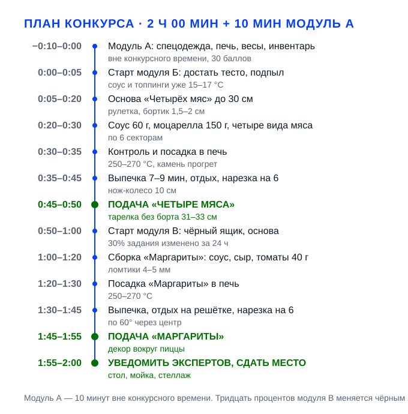
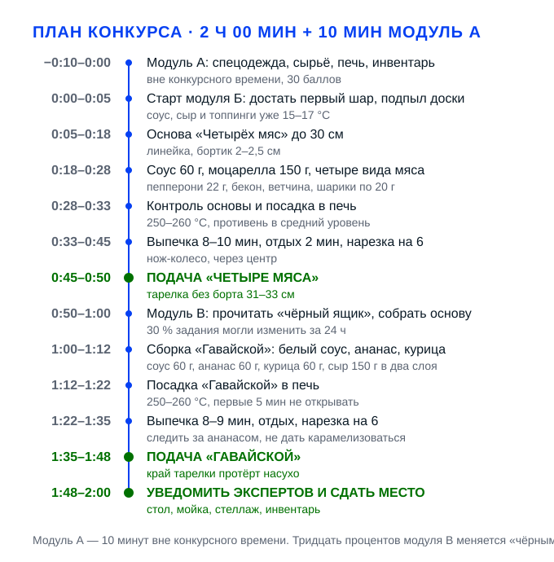
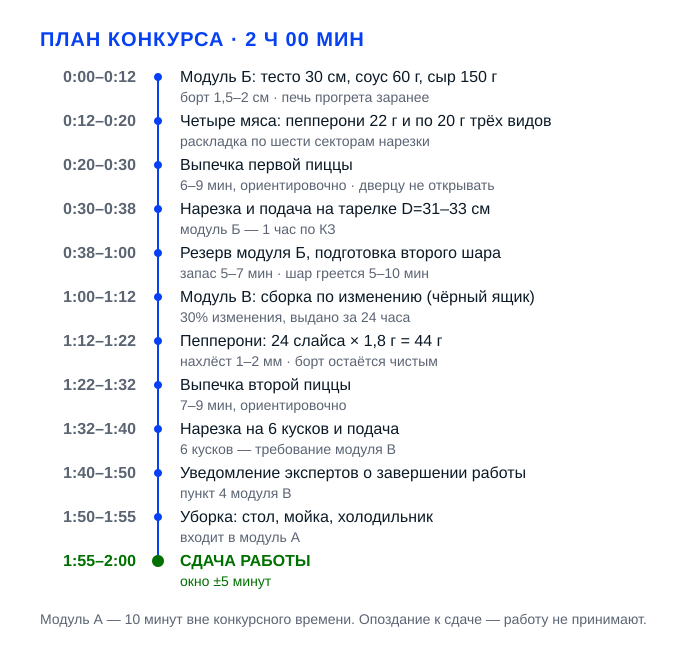

Мастер по приготовлению пиццы (Р,О)
Задания ниже — официальные файлы «Абилимпикс» (источник: abilympics-russia.ru), разложенные по категориям. Решения написаны по тексту задания, регламенту и критериям оценки; в них указано, что именно проверяет эксперт.
Школьник
14–16 лет, базовый уровень заданияВыдержка из официального конкурсного задания: страницы, относящиеся к категории «Школьник» (стр. 5–8 источника).
Пошаговое решение
Категория «Школьники» на компетенции «Мастер по приготовлению пиццы» — это два часа конкурсного времени и две пиццы диаметром тридцать сантиметров: «Четыре мяса» в модуле Б и «Маргарита» в модуле В, по шестьдесят минут на каждую. Модуль А идёт за десять минут до старта и в конкурсное время не входит: спецодежда, мытьё рук, прогрев печи, весы, инвентарь и уборка — тридцать баллов из ста. Модуль Б стоит сорок, модуль В — тридцать, всего сто. Обе пиццы нарезают на шесть кусков и подают на белой круглой тарелке без борта диаметром тридцать один–тридцать три сантиметра. Тридцать процентов модуля В меняется чёрным ящиком за сутки до конкурса, поэтому вторая пицца — ещё и проверка на гибкость: прочитать изменение, вписать его в план и уложиться в час. Ниже — весь путь от замеса теста накануне до уведомления экспертов о завершении работы.

Задача 1. Подготовительный модуль: тесто, соус и топпинги наканунеПодготовительный модуль · день до старта, вне конкурсного времени
Подготовительный модуль проходит в день, предшествующий соревнованию, и в конкурсные два часа не входит. Именно здесь создаётся всё, что потом нельзя наверстать в боксе: шары теста для медленной холодной ферментации, томатный пицца-соус, натёртый сыр и четыре вида мясных топпингов, которые должны вызреть в холодильнике от двенадцати до двадцати четырёх часов. Ошибка здесь не портит один шаг — она переносит проблему в оба модуля сразу, потому что исправить тесто за десять минут Модуля А невозможно.
Действие 1.1. Замесить тесто и поставить его на холод
Шаг 1.1.1
Ставим на весы тару, обнуляем и отвешиваем по списку сырья: девятьсот граммов муки, пятьсот миллилитров воды из кулера, двадцать семь миллилитров растительного масла, четыре грамма быстродействующих дрожжей САФ-МОМЕНТ, пять граммов сахара и восемнадцать граммов соли. Воду берём комнатную, двадцать–двадцать два градуса: холодная затормозит дрожжи, горячая их убьёт. Натрий и дрожжи сразу разводим в разных углах стола, потому что соль в прямом контакте снимает часть дрожжевых клеток.
Это единственный набор цифр, который задаёт всю дальнейшую работу: общий вес теста получается около тысячи четырёхсот пятидесяти граммов, гидратация 55 процентов, соли два процента от муки. Дрожжей меньше половины процента — именно поэтому тесто идёт на холод, а не в тепло: медленная ферментация даёт вкус и пузырчатую структуру, которой не будет при быстром подъёме.
Все шесть позиций взвешены отдельно, сумма сходится у тысячи четырёхсот пятидесяти граммов, весы показывают ноль с пустой тарой. Дрожжи и соль стоят в разных ёмкостях и не соприкасаются до замеса. Разложите продукты по порядку добавления — вода, дрожжи с сахаром, мука, соль, масло: так на замесе не придётся искать нужное и путать ёмкости.
Сыпнуть дрожжи «на глаз» — четыре грамма это чуть больше чайной ложки, и лишняя половина ложки сократит ферментацию вдвое, тесто перекиснет к утру и начнёт рваться при растяжке. Вторая ошибка — соль прямо в дрожжевую смесь: часть клеток погибнет, подъём станет непредсказуемым.
Эксперты обходят холодильник в день подготовки и смотрят на маркировку лотков, поэтому точность взвешивания видна не сразу, а по результату: ровные шары одинакового веса.
Шаг 1.1.2
Сначала распускаем дрожжи и сахар в отмеренной воде и даём постоять пять–семь минут, пока не появится мутноватая пенка. Потом всыпаем примерно две трети муки и перемешиваем лопаткой до однородности, затем добавляем соль, остаток муки и в самом конце масло. Месим руками восемь–десять минут: тесто должно стать гладким, перестать липнуть к столу и собираться в один шар.
Порядок важнее силы рук. Дрожжам нужна вода и сахар, чтобы начать работу, а масло, добавленное сразу, обволакивает частицы муки и мешает образованию клейковины — тесто получается жирным на ощупь и рвётся. Восемь–десять минут замеса дают ту эластичность, без которой основа не растянется в круг тридцати сантиметров.
Проверяем «окном»: отщипываем кусочек размером с грецкий орех и растягиваем пальцами от центра — он должен просвечивать, не разрываясь в середине. Температура теста на ощупь прохладная, но не холодная, поверхность матовая и гладкая.
Месить три минуты и остановиться, когда тесто ещё липнет: клейковина не успела развиться, и при формовке основа будет сжиматься обратно, как резиновая. Обратная ошибка — лить воду «чтобы не липло»: гидратация уходит за 60 процентов, и тесто расползается на противне.
Навыки работы с тестом эксперт видит уже по шарам на следующий день: гладкая поверхность и одинаковый размер говорят о правильном замесе. На осмотре тулбокса он может попросить показать руки — следы теста на ладонях выдают, месили ли вообще.
Шаг 1.1.3
Накрываем тесто плёнкой или полотенцем и оставляем на двадцать–тридцать минут при комнатной температуре. Затем делим на пять частей примерно по двести девяносто граммов, каждую подкатываем под ладонью по кругу, чтобы натянулась верхняя плёнка, а шов собрался снизу. Два шара пойдут на пиццы, остальные останутся запасом на разрыв основы и на тренировочную растяжку.
Отлёжка расслабляет клейковину: без неё шары после деления пружинят и не подкатываются ровно. Натянутая сверху плёнка — это каркас, который потом не даст основе сесть на противне. Запас из трёх шаров страхует самый дорогой риск: если основа порвётся за минуту до сборки, второй шар решает проблему, а не забирает десять минут.
Шары одинаковые на вид, шов снизу, поверхность гладкая и не липкая. На весах каждый шар даёт 285–295 граммов, разброс не больше десяти граммов. Поставьте шары в ряд и посмотрите вдоль стола: верхняя линия должна быть ровной, без «горбатых» и приплюснутых.
Оставить шары «как получилось», с видимым швом сверху: при холодной ферментации шов разойдётся, и заготовка потеряет форму. Вторая ошибка — делить на глаз: разница в весе в сорок граммов даст две основы разной толщины, и одна сгорит раньше другой.
На подготовке эксперт смотрит на количество и однородность заготовок: сколько шаров и какого веса — видно сразу. Отдельно отмечает, лежит ли запас, потому что наличие страховочного шара говорит о планировании, а не о везении.
Шаг 1.1.4
Каждый шар кладём в отдельный пластиковый лоток, который маркируем своей фамилией, датой и временем замеса, закрываем крышкой и ставим в холодильник на медленную холодную ферментацию при плюс четырёх градусах. Лотки не ставим вплотную к задней стенке, где температура ниже: там тесто прихватывается и потом плохо поднимается. Держим от шестнадцати до двадцати четырёх часов.
Холод — это не способ сохранить тесто, а способ работать с ним: при четырёх градусах дрожжи трудятся медленно, зато ферменты строят вкус и газовые пузыри. Маркировка нужна не для красоты — на площадке стоят лотки пяти участников, и перепутанный лоток означает чужое тесто в вашей работе, что равно нулю за оба модуля.
К утру каждый шар вырос примерно вдвое, поверхность покрыта мелкими пузырями, при нажатии пальцем ямка медленно выравнивается. Запах кисловатый и чистый, без спиртовой резкости. Лоток холодный на ощупь, крышка сухая, маркировка читается без наклона.
Поставить тесто в морозилку «чтобы точно не перекисло»: замёрзшая заготовка не восстановит структуру за час и даст плотную, сухую основу. Вторая ошибка — лоток без крышки: поверхность шара заветривается и покрывается коркой, которая потом не растягивается.
Перед стартом эксперт проверяет маркировку: фамилия, дата и время должны читаться на крышке, а не быть «где-то на дне». Он же смотрит, стоят ли лотки в холодильнике ровно и не зажаты ли между чужими.
Действие 1.2. Сварить томатный пицца-соус
Шаг 1.2.1
Берём томатную основу — очищенные томаты в собственном соку или густую пасту, разведённую водой до состояния сметаны. Добавляем соль из расчёта примерно три грамма на сто граммов соуса, щепотку сахара, сушёный орегано и базилик, прогреваем на среднем огне семь–десять минут, постоянно помешивая, и пробиваем блендером до гладкости. Варить долго не нужно: задача — убрать лишнюю влагу, а не сварить суп.
Соус в конкурсном задании идёт отдельной строкой в рецептуре — шестьдесят граммов на пиццу, и оценивается критерием «параметры нанесённого пицца-соуса». Жидкий соус размачивает тесто и уходит к краю, сухой не размазывается ложкой. Гладкая текстура нужна, чтобы слой лёг ровно, без комков томата под сыром.
Соус держится на ложке и медленно стекает широкой каплей, а не льётся струёй. На вкус он чуть солоноватее, чем кажется правильным: после выпечки и сыра соль покажется меньше. Цвет — насыщенный красный, без оранжевого оттенка.
Не уварить соус совсем: он станет пастой, и шестьдесят граммов не распределятся по тридцати сантиметрам. Вторая ошибка — щедро посолить «по-домашнему»: с моцареллой и мясом пицца выйдет пересоленной, а вкус оценивается наравне с формой.
Параметры соуса — один из пунктов модулей Б и В, и эксперт проверяет не только вкус, но и то, насколько ровно слой лежит на основе. Густоту он оценивает ложкой: соус должен держаться, а не стекать с неё сразу.
Шаг 1.2.2
Готовый соус полностью остужаем до комнатной температуры, перекладываем в пластиковую ёмкость, закрываем крышкой и маркируем: фамилия, дата, слово «соус». Убираем в холодильник рядом с лотками теста, на полку выше, чтобы ничего не капало в тесто. Горячий соус в закрытой ёмкости не убираем — сначала остыть на столе, потом холод. На крышке пишем дату и время, чтобы утром не гадать, свежий это соус или вчерашний.
Остывание перед холодильником — не формальность: закрытая горячая ёмкость даёт конденсат на крышке, и утром часть воды стечёт обратно в соус, разжижая его. Маркировка снова страхует от путаницы: на площадке стоят пять одинаковых контейнеров, и соус соседа может оказаться у вас.
Крышка сухая изнутри, на стенках нет капель, соус не расслоился. Объём соответствует задуманному: на две пиццы по шестьдесят граммов плюс запас уходит примерно сто восемьдесят граммов. Проведите ложкой по дну — она должна идти с усилием, а не падать свободно.
Убрать соус тёплым: конденсат и расслоение, к тому же в холодильнике рядом лежит тесто, которому лишнее тепло ни к чему. Вторая ошибка — ёмкость без маркировки: утром непонятно, чей соус и какого он дня.
Утром эксперт может открыть ёмкость и посмотреть на консистенцию — расслоившийся соус виден сразу. Он же проверяет, подписана ли ёмкость: безымянный контейнер на общем столе считается нарушением организации.
Шаг 1.2.3
В день соревнований достаём закрытую ёмкость с соусом из холодильника и ставим её на рабочий стол, не открывая, примерно на час. За это время соус поднимется с четырёх до пятнадцати–семнадцати градусов, и с ним можно будет работать. Крышку открываем только перед нанесением, непосредственно перед сборкой пиццы, и сразу перемешиваем ложкой снизу вверх.
Конкурсное задание прямо описывает этот час и эти пятнадцать–семнадцать градусов: холодный соус ложится неровно, тянет за собой тесто и не растекается под ложкой. Открытая крышка на час — это ещё и заветривание верхнего слоя и лишняя влага в боксе, а перемешивание перед сборкой возвращает соусу однородность после стояния.
Соус на ощупь прохладный, но не ледяной; при наклоне ложки ложится ровным слоем. Если ёмкость всё ещё холодная на стенках, дайте ещё десять–пятнадцать минут: этот час начинается с момента, когда вы достали контейнер, а не с момента старта.
Начать сборку с холодным соусом: он не размазывается, а скатывается, и слой получается пятнами — прямой минус по критерию соуса. Вторая ошибка — держать соус открытым весь час: поверхность подсохнет и пойдёт коркой.
В модуле Б эксперт смотрит, как соус распределён: пятна, непромазанные участки и подтёки на бортике фиксируются отдельно. Он же проверяет край: соус не должен доходить до границы бортика.
Действие 1.3. Подготовить сыр и четыре вида мяса
Шаг 1.3.1
Моцареллу натираем на крупной стороне тёрки с длиной полотна двадцать пять сантиметров или режем тонкими пластинами, если сыр мягкий. На каждую пиццу по рецептуре идёт сто пятьдесят граммов, значит на две пиццы — триста граммов, а с запасом на декор после выпекания берём около четырёхсот. Сыр складываем в отдельную ёмкость, закрываем, маркируем и убираем в холод до утра.
Сыр — второй по весу компонент после теста: сто пятьдесят граммов на пиццу дают ровный слой и правильную «шапку» при выпечке. Меньше — основа просвечивает и выглядит пустой, больше — сыр уходит в бортик и стекает на противень. Отдельная ёмкость нужна потому, что тёртый сыр быстро сохнет и впитывает посторонние запахи.
На весах в ёмкости ровно триста граммов плюс отделённый запас, стружка одинаковая по размеру и не превратилась в кашу. Тёрка не забита, сыр не грелся в руках. Проверьте горсть на ладони: она должна быть рассыпчатой, а не слипаться комком.
Натереть сыр заранее «на глаз» и не взвешивать: на пиццу уйдёт то, что осталось, и слой выйдет неравномерным. Вторая ошибка — держать тёртый сыр в открытой тарелке: через час он покроется сухой коркой и не расплавится ровно.
Параметры нанесённого сыра — отдельный пункт в модулях Б и В, и эксперт видит и количество, и равномерность. На подготовке он смотрит на ёмкость: закрыта ли и подписана.
Шаг 1.3.2
Готовим четыре вида мясных топпингов: пепперони, бекон, ветчину и мясные шарики. Пепперони берём нарезанную слайсами — двенадцать кружков по 1,8 грамма, это 22 грамма; бекон, ветчину и шарики отвешиваем по двадцать граммов каждого вида. Заводскую упаковку вскрываем и сразу перекладываем в отдельные контейнеры, ненарезанное режем полосками и кубиком не толще пяти миллиметров.
Четыре вида — это требование задания, а не украшение: «Четыре мяса» оценивают по верхней части пиццы и по тому, видит ли эксперт все четыре компонента. Ровно двадцать граммов на вид — не жадность: при большем количестве мясо перегружает центр, основа не пропекается и середина получается сырой.
Каждый вид лежит в своей ёмкости, крышка закрыта, на этикетке фамилия и название топпинга. Пепперони пересчитана: двенадцать кружков видны на просвет, вес на весах 22 грамма. Бекон и ветчина нарезаны полосками одной ширины, шарики — одного размера, чтобы лежать на пицце симметрично.
Смешать всё мясо в один контейнер «чтобы быстрее»: к утру вкусы смешаются, а на сборке невозможно уложить одинаковое количество к каждому куску. Вторая ошибка — нарезать бекон толстыми кусками: он не успеет пропечься за семь минут.
В модуле Б верхняя часть пиццы оценивается по наличию и распределению всех четырёх видов, и эксперт считает не «примерно», а по кускам. Недобор одного вида виден на срезе и снимает балл.
Шаг 1.3.3
Закрытые контейнеры с топпингами ставим в холодильник на двенадцать–двадцать четыре часа, каждый маркируем фамилией, датой и временем. Ненарезанный топпинг после нарезки убираем в холод сразу же, не оставляя на столе ни на минуту. В день конкурса достаём все ёмкости закрытыми примерно за час до старта и даём им подняться до пятнадцати–семнадцати градусов.
Двенадцать–двадцать четыре часа — это не только хранение, но и вызревание: мясо стабилизируется по влаге и не отдаёт сок в пиццу при выпечке. Температурный переход за час нужен по той же причине, что и для соуса: ледяной бекон на основе даст холодную зону и неровную пропечку.
Утром контейнеры холодные, но не ледяные, внутри нет крупных кристаллов и лишней влаги на дне. Пепперони не слиплась в комок, бекон не потемнел по краям. Проведите пальцем по внутренней стенке: конденсата должно быть немного.
Достать топпинги за пять минут до сборки: холодные компоненты резко снижают температуру основы, и низ пиццы остаётся бледным. Вторая ошибка — оставить контейнеры открытыми на столе на весь час: мясо заветривается по краям.
Эксперт обращает внимание на то, мокрые ли топпинги: лишняя влага на поверхности — признак нарушения хранения, и она видна по лужице под сыром. Он же смотрит, не лежит ли мясо поверх другого продукта без упаковки.
Действие 1.4. Собрать тулбокс и список инвентаря
Шаг 1.4.1
Собираем тулбокс по рекомендуемому набору: нож для пиццы с колесом диаметром десять сантиметров и пластиковой ручкой двенадцать с половиной сантиметров, рулетку длиной десять метров, тёрку с полотном двадцать пять сантиметров из нержавеющей стали, лопатку, кисть, кондитерский мешок для декора, пару полотенец и запасные одноразовые колпаки. Пишем список от руки или в файле — позиция за позицией.
Свой инвентарь участник приносит на площадку со списком и предоставляет главному эксперту только для осмотра — так сказано в задании. Нож для пиццы с колесом в десять сантиметров даёт ровный рез шести кусков одним движением, а рулетка нужна, чтобы подтвердить тридцать сантиметров не «на глаз», а цифрой.
Все позиции списка физически лежат в тулбоксе, ничего не забыто, ничего лишнего. Нож крутится свободно, колесо не люфтит, ручка не шатается; тёрка целая, без погнутых зубьев. Пройдите по списку карандашом и отметьте каждую строку — не «помню, что положил».
Взять инструмент «на всякий случай» без списка: на осмотре его снимут, а времени на объяснения уйдёт больше, чем на подготовку. Вторая ошибка — привезти затупившийся или погнутый нож: по правилам неисправный инвентарь использовать запрещено.
Главный эксперт осматривает тулбокс до старта и сверяет его со списком; несоответствие фиксируется, и часть инструмента может быть не допущена. Он же смотрит на состояние ножа: колесо с зазубринами режет пиццу рывками.
Шаг 1.4.2
Отдельно проверяем то, что берём из общего фонда площадки: противень или лопату, доски, весы, миски. Заранее решаем, на чём печём — на металлическом противне, на камне или на перфорированной лопате, потому что от этого зависят температура и время. Всё, что вызывает сомнение, показываем эксперту до старта, а не в середине модуля, и просим замену сразу.
Выбор противня напрямую меняет выпечку: на тонком металле низ схватывается быстрее, на камне — ровнее. Решить это в первую минуту модуля нельзя, печь уже должна быть прогрета под конкретную посадку. Сомнительный инвентарь, заменённый до старта, — это минута, а найденный в середине работы — потерянный модуль.
Противень ровный, без вмятин и нагара, входит в печь и свободно разворачивается. Доска сухая и чистая, весы включаются и показывают ноль с пустой тарой. Проверьте противень на столе: он не должен качаться на одной точке.
Взять первый попавшийся противень с погнутым бортом: основа садится с перекосом, и один край подгорает раньше другого. Вторая ошибка — не проверить весы: сбитая тара даёт систематическую ошибку во всех взвешиваниях модуля.
Эксперт по технике безопасности смотрит на исправность инвентаря до старта, и это входит в блок организации работы. Погнутый противень он отметит как нарушение подготовки места.
Задача 2. Модуль А: собрать рабочее место за десять минут до стартаМодуль А · 30 баллов · 10 минут вне конкурсного времени
Модуль А идёт за десять минут до начала конкурсного времени и в два часа не входит, но стоит тридцать баллов из ста — столько же, сколько целая пицца «Маргарита». Здесь одиннадцать пунктов оценки: спецодежда, мытьё рук, печь, весы, уборка, работа с оборудованием, стол, мойка, стеллаж и общее впечатление. Проверяется не красота, а система: понятно ли, где что лежит, прогрета ли печь, взвешено ли сырьё, знает ли участник, в какую минуту что делает.
Действие 2.1. Надеть спецодежду по требованиям задания
Шаг 2.1.1
Надеваем белый китель с длинным рукавом — длина рукава от трёх четвертей до семи восьмых, то есть кисть и запястье открыты, а локоть закрыт. На груди слева — логотип движения «Абилимпикс», под ним фамилия и имя, на левом рукаве выше локтя — логотип учебного заведения. Дальше чёрные длинные брюки, белый длинный фартук, белый колпак или косынка, белые носки, закрывающие щиколотку, и белая кожаная обувь с закрытым носком и фиксированной пяткой.
Спецодежда — первый пункт модуля А и первое, что видит эксперт. Требования перечислены в задании поимённо, поэтому проверяют по списку: цвет, длину рукава, наличие логотипа и фамилии. Открытая обувь и кроссовки не подходят независимо от удобства: на площадке мокрый пол, а горячий противень вынимают из печи на бегу.
Проверьте себя по четырём точкам: рукав заканчивается между локтем и запястьем, логотип на груди слева читается, фамилия под ним видна, обувь закрытая и белая. Посмотрите на колпак со спины — волосы не должны выбиваться на затылке.
Надеть китель с рукавом до кисти или закатать рукав до локтя: и то и другое — нарушение требования, и балл снимают до начала работы. Вторая частая ошибка — приехать в чёрных кроссовках «они же закрытые»: нужна именно кожаная белая обувь с фиксированной пяткой.
Эксперт осматривает участника до старта, стоя напротив: он смотрит на рукав, логотип, фамилию и обувь. Спорить бессмысленно — требование записано в задании дословно.
Шаг 2.1.2
Моем руки с мылом не меньше двадцати секунд, до запястий, проходя большие пальцы, промежутки между пальцами и ногти, затем вытираем одноразовым полотенцем и выбрасываем его сразу в контейнер. Ногти коротко подстрижены, без лака и покрытия, часы, кольца, браслеты и длинные серьги сняты и убраны в тулбокс. Длинные волосы дополнительно закалываем под колпак.
Мытьё рук — отдельный пункт модуля А, и он же условие допуска к работе с продуктом. Под украшениями остаются загрязнения, которые не смываются, а камень из кольца или звено браслета могут оказаться в тесте. Для пиццы, которую пробуют эксперты, посторонний предмет означает обнуление модуля, а не снижение оценки.
Руки сухие, полотенце уже в мусоре, а не на столе. Ладони не липнут, запаха мыла нет. Посмотрите на тыльную сторону кистей и на запястья — там чаще всего остаётся мука от подготовки, её надо смыть до старта.
Вытереть руки о фартук: визуально сухо, но фартук становится переносчиком, и эксперт видит мокрые пятна на груди к середине модуля. Вторая ошибка — помыть руки один раз в начале и считать вопрос закрытым на два часа, хотя оценивается процесс, а не стартовое состояние.
Эксперт смотрит на руки и на украшения до старта, а дальше следит, моет ли участник руки после сырого мяса и после уборки. Отдельно он отмечает, вытирает ли участник руки полотенцем или о фартук.
Шаг 2.1.3
Дальше руки моются по циклу: после работы с сырым мясом, после того как подняли что-то с пола, после уборки и после того, как поправили колпак или лицо. Если работаете в одноразовых перчатках, меняем их на каждом переходе «сырое — готовое» и не носим одну пару весь модуль. Полотенце для рук и полотенце для посуды — разные, и оба висят на своих крючках.
Санитарный блок оценивается в течение всего конкурса, а не только на входе. Сырое мясо несёт бактерии, и после него нельзя брать сыр или готовую пиццу немытыми руками. Разделение полотенец — тот же принцип: одно вытирает посуду, другое руки, и путать их на площадке недопустимо.
Между операциями руки сухие и чистые, перчатки меняются, полотенца висят раздельно и не лежат на столе. Проверить просто: если после мяса вы тянетесь к сыру — сначала к мойке. Посмотрите на крючки: два полотенца должны быть на разных, а не висеть одним комком.
Работать весь модуль в одной паре перчаток: к концу сборки они липкие от теста и соуса, а санитарный балл уже потерян. Вторая ошибка — держать полотенце для рук на разделочной доске, где оно впитывает муку и сырое мясо.
Эксперт фиксирует нарушения гигиены по ходу работы, и каждое отмечается в чек-листе модуля А отдельной строкой. Он подходит к мойке в момент, когда участник переходит от мяса к сыру, — это самый показательный переход.
Действие 2.2. Развернуть стол, включить печь и проверить весы
Шаг 2.2.1
Протираем стол дезинфицирующим средством, даём ему высохнуть и только потом раскладываем зоны: слева — подпыл и тесто, в центре — сборка, справа — противень и печь, отдельно у стены — тарелки и декор. Рабочее место по нормам занимает примерно три на два метра, проход между местами не меньше полутора метров, поэтому ничего не ставим в проход и не вешаем сумки на спинку стула.
Разложенные зоны — это не эстетика, а скорость: при сборке рука сама тянется туда, где лежит нужное, и не приходится искать сыр в другой половине стола. Проход в полтора метра нужен не только по нормам: эксперт с тележкой и другой участник с горячим противнем должны разойтись, не задев ваш стол.
Стол сухой, без разводов, зоны читаются: тесто, сборка, печь, подача. В проходе пусто, ничего не свисает с края стола. Проверьте, не качается ли стол — на неровной ноге противень поедет, а вместе с ним и основа. Пройдите вдоль стола и мысленно проведите линию: каждая вещь должна лежать в своей зоне.
Занимать весь стол под сборку и складывать инвентарь где попало: в середине модуля мокрый противень некуда поставить, и он оказывается на доске с тестом. Вторая ошибка — поставить сумку или тулбокс в проход.
Организация рабочего места — четыре пункта модуля А: рабочий стол, общее впечатление и навыки работы с инвентарём. Эксперт обходит бокс и смотрит именно на зоны.
Шаг 2.2.2
Включаем печь или пароконвектомат и ставим двести пятьдесят–двести семьдесят градусов. Если печём на камне, прогрев занимает не меньше сорока минут, поэтому включение — первое действие в модуле А, до раскладки инвентаря. Параллельно включаем весы, ставим пустую тару и обнуляем: проверяем точность по известному весу — пачке соли в килограмм или гире.
Печь — единственное оборудование, которое нельзя ускорить: холодный камень отбирает тепло у основы, и низ пиццы остаётся бледным, пока верх уже горит. Весы проверяются потому, что на них держится вся рецептура: шестьдесят граммов соуса и сто пятьдесят сыра — это цифры, а не «на глаз».
Печь вышла на температуру: индикатор погас, камень горячий на ощупь через прихватку, дверца закрыта. Весы с пустой тарой показывают ноль, при постановке килограмма — тысячу, расхождение не больше пяти граммов.
Включить печь в последнюю минуту модуля А: к посадке первой пиццы она не успеет выйти на режим, и выпечка растянется на двенадцать минут вместо семи. Вторая ошибка — не проверить весы и весь модуль взвешивать с ошибкой в десять–пятнадцать граммов.
Подготовка печи и весов — отдельные пункты модуля А: эксперт смотрит на индикатор и на тару весов в первые же минуты. Он же может попросить взвесить горсть сыра — так видно, умеет ли участник пользоваться весами, а не только включает их.
Шаг 2.2.3
Раскладываем инвентарь: нож для пиццы с колесом, рулетку, тёрку, лопатку, две доски, половник или ложку для соуса, миски под топпинги, прихватки. Нож кладём в футляр или на магнит, а не просто на стол. Проверяем то, что относится к безопасности: розетки целые, шнур не лежит под ногами и не касается горячей печи, стол без трещин и сколов, пол сухой.
Пункт «охрана труда и техника безопасности» в модуле А идёт отдельной строкой, и проверяется он по внешним признакам. Нож, лежащий открыто на столе, — риск пореза и одновременно нарушение: по инструкции при перерыве он убирается в футляр. Мокрый пол в боксе с горячей печью — типичная причина падений на чемпионатах.
Инвентарь разложен по зонам, нож убран в футляр, шнуры не пересекают проход. Проверьте руками: стол не качается, доска не скользит, прихватки сухие — мокрая ткань проводит тепло и обжигает. Розетка должна быть сухой и не болтаться в гнезде, а вилка вставлена до упора.
Проверить только исправность печи и забыть про нож и шнуры: замечание по безопасности снимает баллы из блока организации, даже если пицца вышла отличной. Вторая ошибка — работать в мокром фартуке у горячей печи.
Эксперт по технике безопасности подходит к боксу до старта и смотрит на розетки, исправность инвентаря и сухость пола. Замечание по безопасности он заносит в протокол отдельной строкой, и оно снимает баллы из блока организации.
Действие 2.3. Проверить сырьё и расписать два часа
Шаг 2.3.1
Сверяем то, что уже стоит на столе, с технологической картой: соус, сыр, четыре вида мяса, томаты сорок граммов, подпыл. Всё взвешиваем и ставим в отдельные ёмкости: соус шестьдесят граммов на пиццу, моцарелла сто пятьдесят, пепперони двенадцать слайсов по 1,8 грамма, бекон, ветчина и мясные шарики по двадцать граммов, помидоры сорок. Каждую ёмкость ставим в том порядке, в каком она пойдёт в дело.
Технологическая карта — это и есть задание: отступление по весу видно на разрезе и на верхней части пиццы. Пятнадцать граммов лишнего сыра на тридцати сантиметрах уже дают слой, который не пропекается, а недостача мяса читается как пустой кусок. Порядок ёмкостей экономит движения: соус, сыр, мясо, декор.
На весах каждая позиция совпадает с картой, ёмкости подписаны, ничего не смешано. Проверьте количество слайсов пепперони пересчётом — двенадцать штук, потому что на шесть кусков нужно по два. Томаты для «Маргариты» лежат отдельно и не режутся заранее, иначе дадут сок.
Готовить «по памяти» и не взвешивать сыр: к середине второй пиццы он закончится, и придётся снимать с первой. Вторая ошибка — поставить ёмкости в обратном порядке и на сборке тянуться через весь стол.
Наличие сырья по техкарте — первый пункт проверки модуля А; эксперт подходит и смотрит, стоит ли всё нужное на столе до старта. Он же сверяет весы: порционные ёмкости должны быть подписаны.
Шаг 2.3.2
Проверяем температуру: соус, сыр и топпинги должны быть в диапазоне пятнадцати–семнадцати градусов, то есть постоять закрытыми на столе около часа. Лоток с тестом достаём последним, за пятнадцать–двадцать минут до старта, и держим закрытым, чтобы поверхность не заветрилась. Муку для подпыла держим в отдельной плошке, а не в пакете, и рядом ставим сухую кисть для смахивания излишков.
Холодные компоненты снижают температуру основы в первые минуты выпечки: низ остаётся бледным, пока верх уже румянится. Тёплое тесто, наоборот, теряет газ и плохо растягивается. Пятнадцать–семнадцать градусов — рабочий диапазон, при котором и соус ложится, и тесто слушается рук.
Соус не ледяной на ощупь, сыр рассыпается, а не слипается, топпинги не мокрые. Тесто в лотке поднялось, при нажатии пальцем ямка выравнивается медленно. Крышка лотка сухая изнутри. Поставьте ладонь на дно ёмкости с соусом: она должна чувствовать прохладу, а не холод.
Достать тесто за час и держать открытым: поверхность сохнет и покрывается коркой, которая при растяжке рвётся по краю. Вторая ошибка — собирать пиццу холодным соусом прямо из холодильника: он не размазывается и ложится пятнами.
Пункт «профессиональное использование оборудования» включает и работу с температурой сырья: эксперт может потрогать ёмкости и спросить, когда их достали.
Шаг 2.3.3
Расписываем два часа по минутам: с ноля до тридцати пяти — сборка «Четырёх мяс», в тридцать пять посадка в печь, к сорока пяти пицца на тарелке; с пятидесятой минуты старт «Маргариты», в час тридцать посадка, к часу сорока пяти подача. Сразу решаем, когда моем мойку и протираем холодильник: уборка идёт в паузах, пока пицца в печи, а не после сдачи.
Два модуля по часу — это не два отдельных конкурса, а один поток, и перенос работы на следующий час почти всегда заканчивается опозданием. Уборка в паузах нужна потому, что мойка, стеллаж и передняя стенка холодильника входят в оценку модуля А, а после подачи второй пиццы времени на них уже не останется.
План записан или удержан в голове по трём точкам: тридцать пять — посадка, сорок пять — подача, час тридцать — вторая посадка. К моменту старта вы знаете, в какую минуту что делаете, и не решаете это на ходу.
Идти «как пойдёт»: первая пицца съедает пятьдесят минут, вторая начинается с опозданием на двадцать, и подача уходит за пределы окна. Вторая ошибка — оставить уборку на конец, когда руки заняты тарелкой.
Эксперт оценивает организацию работы по тому, насколько ровно идёт темп: посадки и подачи в запланированные минуты видны в протоколе. Он же смотрит, успевает ли участник убирать за собой между модулями.
Задача 3. Модуль Б: собрать пиццу «Четыре мяса» на основе 30 смМодуль Б · 40 баллов · с 0:00 до 0:35 (первый час)
Модуль Б — сорок баллов, самая дорогая часть задания, и вся она про одну пиццу диаметром тридцать сантиметров. Оценивают четырнадцать параметров: округлость, корочку, бортик, соус, порцию куска, сыр, верхнюю часть, нарезку, срез от бортика к центру, внешний вид, мякиш, декорирование после выпекания, подачу вокруг тарелки и отдельно — «заплатили бы вы за эту пиццу». Сборка занимает примерно тридцать пять минут, ещё десять уходит на печь и подачу.
Действие 3.1. Растянуть основу до 30 сантиметров
Шаг 3.1.1
Достаём шар из лотка, кладём на подпылённый стол швом вниз и присыпаем сверху тонким слоем муки. Пальцами обеих рук идём от центра к краю, оставляя последние полтора–два сантиметра нетронутыми: это будущий бортик, и он должен сохранить весь газ, который накопился за ночь. Давим мягко, подушечками, а не ногтями, и поворачиваем заготовку на четверть после каждого прохода.
Бортик — отдельный критерий оценки: он должен подняться, быть ровным по высоте и не растечься. Если продавить его пальцами, газ выйдет, и на выходе получится плоская лепёшка с хрустящим краем вместо пышного валика. Движение от центра к краю выгоняет воздух из середины, где он не нужен, и сохраняет его по периметру.
Заготовка стала плоским диском с утолщённым краем, центр не рвётся на просвет, поверхность ровная. Бортик на ощупь мягкий и пружинит, а не расплющен. Диаметр пока около двадцати сантиметров — это нормально, до тридцати его доведём растяжкой.
Раскатать тесто скалкой: она выгоняет газ из бортика, и пицца получается плоской, как лаваш. Вторая ошибка — мять шар с краёв, захватывая бортик: именно там газ нужнее всего, а вернуть его уже нельзя.
Округлость и параметры бортика — первые два пункта модуля Б, и эксперт смотрит на них сразу после выпечки, до нарезки. Отдельно он проверяет, одинаков ли бортик по высоте со всех сторон: разница в полсантиметра видна на тарелке.
Шаг 3.1.2
Дальше растягиваем руками: заготовку перекидываем на тыльную сторону кистей и, подбрасывая и поворачивая, даём ей самой опуститься под собственным весом. Доводим до двадцати восьми–двадцати девяти сантиметров и добиваем край пальцами до тридцати. Меряем рулеткой в двух перпендикулярных направлениях: размер должен быть тридцать сантиметров, расхождение по осям — не больше сантиметра.
Растяжка на весу сохраняет воздух в бортике и даёт ту самую округлость, за которую дают балл. Тридцать сантиметров — требование задания, и рулетка здесь не формальность: на глаз разница в три сантиметра не видна, а на срезе кусок получается другого размера. Два замера по осям ловят перекос, который потом не исправить.
Рулетка показывает тридцать сантиметров по обеим осям, разница не больше сантиметра. Край ровный, без «пузырей» и утолщений в одном месте, центр не просвечивает. Заготовка не сжимается обратно, если её отпустить.
Тянуть за край, как за ручку: бортик истончается с одной стороны, и после выпечки получается овальная пицца с тонкой стенкой. Вторая ошибка — растянуть до тридцати и не померить: перекос в три сантиметра виден и на тарелке, и на срезе.
Рулетка входит в рекомендованный набор не случайно: эксперт может попросить измерить диаметр при нём, и цифра идёт в протокол. Он же смотрит, держит ли участник заготовку на весу или тянет её по столу.
Шаг 3.1.3
Переносим заготовку на лопату или противень, посыпанные мукой или семолиной: поддеваем рукой снизу, кладём и сразу расправляем край, чтобы он не подогнулся. Проверяем, что основа не прилипла: слегка качаем лопату — заготовка должна скользить. Если прилипла, приподнимаем край и подсыпаем подпыл, не сдвигая основу с места, а затем пробуем снова. Стол под лопатой держим сухим: влага под основой превращает подпыл в клейстер.
Прилипшая основа — самая частая причина испорченной пиццы: при посадке в печь она сминается, бортик ломается, и все баллы за округлость уходят. Подпыл должен быть тонким: лишняя мука на дне не пропекается и остаётся сырым слоем, который видно на срезе.
Лопата качается, заготовка скользит по ней целиком, край не подвёрнут. Под основой виден ровный тонкий слой подпыла, без комков. Диаметр после переноса не изменился — тридцать сантиметров. Проверьте край по кругу пальцем: он должен быть одной толщины.
Посыпать лопату щедро, «чтобы не прилипло»: лишняя мука горит на камне и даёт горький привкус у корочки, а на срезе виден сырой мучной слой. Вторая ошибка — тянуть заготовку за край при переносе: бортик сминается в одном месте и после выпечки провисает.
Аккуратность переноса видна по округлости после выпечки — это первый пункт модуля Б, и эксперт оценивает его, не дожидаясь разреза. След от пальца на бортике он тоже замечает.
Действие 3.2. Нанести соус и сыр
Шаг 3.2.1
Берём шестьдесят граммов томатного соуса — это примерно три столовые ложки. Наносим от центра по спирали, ведя ложкой с небольшим нажимом, и распределяем круговыми движениями, оставляя до внутреннего края бортика полтора сантиметра. Слой должен быть тонким, чтобы сквозь него просвечивала основа, а не лежал сугробом в середине. Ложку держим плашмя, а не ребром.
Шестьдесят граммов на тридцать сантиметров — это ровно тонкий слой: соус даёт вкус и влагу, но не размачивает тесто. Полтора сантиметра до бортика нужны потому, что при выпечке соус поднимается вместе с тестом и вытекает на край, оставляя тёмные подтёки — прямой минус по критерию нанесения соуса.
Слой ровный, основа просвечивает, бортик чистый по всей окружности. На просвет не видно участков без соуса и луж в центре. Проведите пальцем по бортику — он должен остаться сухим. Наклоните лопату: соус не должен сползать к одному краю.
Намазать соус до самого края: при выпечке он стечёт по бортику и подгорит, а пицца получит горькую кромку. Вторая ошибка — выложить весь соус в центр и размазать кое-как: в середине получится мокрое пятно, которое не пропечётся.
Параметры нанесённого пицца-соуса — четвёртый пункт модуля Б; эксперт смотрит на равномерность и на чистый бортик. Он же оценивает вкус: пересоленный или перекисленный соус слышен на фоне сыра.
Шаг 3.2.2
Посыпаем сто пятьдесят граммов моцареллы ровным слоем по всей поверхности, начиная с периферии и заканчивая центром, чтобы не сгрести сыр в середину. До бортика оставляем около сантиметра. Небольшую горсть, примерно двадцать граммов, откладываем в сторону — она пойдёт на декор уже после выпекания, когда пицца выйдет из печи. Сыр достаём из холодильника за час, как и остальное: холодный ложится комками.
Сто пятьдесят граммов — рецептурное количество, и оно даёт ту «шапку», по которой оценивают верхнюю часть пиццы. Сыр, насыпанный в центр, при выпечке стекается в одну массу, и центр получается тяжелее краёв: кусок на срезе выглядит несимметрично. Отложенная горсть нужна для декора после печи, это отдельный критерий.
Слой сыра одинаковой толщины, основа не проглядывает пустыми окнами, бортик чистый. На ладони, если провести по поверхности, ощущается ровная «подушка» без бугров. Отложенная горсть лежит в отдельной мисочке.
Насыпать сыр горкой в центре и разровнять ладонью: сыр прилипает к руке, слой получается пятнами, а на ладони остаётся жир. Вторая ошибка — использовать весь сыр на сборку, оставив декор без продукта: после выпечки посыпать будет нечем.
Параметры нанесённого сыра — шестой пункт модуля Б; оценивают и количество, и равномерность распределения. Эксперт смотрит на просвет: там, где основа голая, балл снижается.
Шаг 3.2.3
Смотрим на пиццу сверху как на целое: соус и сыр должны занимать примерно одну и ту же площадь, бортик — читаться как чистое кольцо одинаковой ширины. Если где-то сыр лежит слишком толсто, снимаем ложкой и переносим на пустое место. Проверяем, не попал ли соус на борт, не свисает ли основа за край лопаты и не осталось ли на поверхности сухих участков.
Сборка идёт слоями, и каждый следующий компонент ложится на предыдущий: если сыр собран в комок, мясо ляжет на него горой, а не распределится. Ровное кольцо бортика — это ещё и залог того, что при выпечке край поднимется равномерно, а не «волной». Свисающая за лопату основа прилипнет к камню.
Сверху картина симметричная: кольцо бортика одной ширины, соус и сыр по всей площади. Край лопаты чистый, основа не выходит за него. На весах до выпечки пицца весит около четырёхсот граммов с тестом — если сильно больше, значит, сыра или соуса ушло лишнее.
Подровнять сыр ладонью, не глядя: рука снимает часть сыра и оставляет жирные следы, которые при выпечке темнеют пятнами. Вторая ошибка — оставить свисающий край, не заметив его до посадки: в печи он прилипнет к камню и порвёт пиццу.
Внешний вид пиццы — десятый пункт модуля Б, и он складывается из таких вот промежуточных проверок, а не из последнего штриха. Эксперт обходит боксы и в момент сборки, а не только на подаче.
Действие 3.3. Разложить четыре вида мяса
Шаг 3.3.1
Пепперони выкладываем по кругу: восемь слайсов на равном расстоянии друг от друга примерно в двух сантиметрах от бортика, четыре — ближе к центру, между ними. Всего двенадцать слайсов, по 1,8 грамма каждый, итого 22 грамма. Кружки кладём плоско, не вдавливая в сыр, и следим, чтобы они не наезжали друг на друга и не касались бортика. Руки после раскладки вытираем полотенцем, а не обтираем о фартук.
Двенадцать слайсов на шесть кусков — это ровно по два на порцию, и такая раскладка гарантирует, что каждый кусок получит одинаковое количество. Вдавленная в сыр пепперони не подрумянивается по краю, а выглядит бледной. Перекрывающиеся кружки слипаются в один комок и читаются как небрежность.
На поверхности двенадцать кружков, расстояние между соседними примерно одинаковое, ни один не лежит на другом. Кружки плоские, края не загнуты в сыр. Пересчитайте их вслух — на сборке это десять секунд, а на разборе ошибку уже не исправить.
Разложить пепперони «сколько получится» и оставить половину в миске: на пицце окажется шесть кружков, и половина кусков будет без мяса. Вторая ошибка — уложить все двенадцать в центр: там образуется плотный слой, который не пропечётся.
Параметры нарезки и размещения ингредиентов — восьмой пункт модуля Б; эксперт считает, сколько кружков пришлось на каждый кусок. Он же проверяет, не спрятана ли часть пепперони под сыром.
Шаг 3.3.2
Бекон, ветчину и мясные шарики распределяем по двадцать граммов каждого вида. Мысленно делим пиццу на шесть секторов по шестьдесят градусов — по числу будущих кусков — и в каждый сектор кладём свою долю: примерно по три грамма бекона, три ветчины и три с половиной шарика. Бекон и ветчину раскладываем полосками и ломтиками между пепперони, шарики — точками по краям секторов.
Шесть секторов — это единственный способ гарантировать, что каждый кусок получит все четыре вида: иначе мясо собирается на одной половине, и на разрезе видно неравномерность. Разные формы — полоска, ломтик, шарик — дают верхней части читаемый рисунок, за который дают балл по внешнему виду.
В каждом из шести секторов видны все четыре вида, количество сопоставимое, куски не сбиваются в кучи. Сверху рисунок читается: круг пепперони, между ними полоски и точки. Ни один вид не лежит поверх другого целиком.
Свалить всё мясо в центр и разровнять: центр получается тяжёлым, а края пустыми, и пять кусков из шести будут без начинки на периферии. Вторая ошибка — уложить мясо под сыр, где его не видно: верхняя часть оценивается по видимым компонентам, а не по тому, что лежит внутри.
Верхняя часть пиццы — седьмой пункт модуля Б, и эксперт смотрит именно на то, видит ли он все четыре вида и как они распределены. Он может спросить, какой вид где, — ответ по памяти говорит о понимании сборки.
Шаг 3.3.3
Проверяем баланс: мяса на пицце около восьмидесяти двух граммов — 22 пепперони, по 20 бекон, ветчина и шарики, плюс сыр и соус. Смотрим, не осталось ли пустых секторов, не лежит ли мясо на бортике, не свисают ли полоски за край. Всё, что попало на борт, снимаем и переносим внутрь, а не сдвигаем к краю. Сверху пицца остаётся плоской: если начинка бугрится, где-то лёг второй слой.
Восемьдесят два грамма мяса — это уже предел для тридцатисантиметровой пиццы: больше, и основа не пропекается под слоем, а сок из мяса делает середину мокрой. Мясо на бортике горит и портит вкус корочки, а свисающие полоски пригорают к камню и рвут пиццу при съёме.
Мясо лежит только на сыре, бортик чистый, пустых секторов нет. Вес на весах сходится с расчётом, если взвешивать до выпечки. Проверьте пальцем: слой не выше полутора сантиметров. Посмотрите на пиццу сбоку — начинка не должна выступать за борт.
Досыпать мяса «для щедрости»: сок и жир стекают в тесто, и середина остаётся сырой — самая частая причина провала по параметрам мякиша. Вторая ошибка — не заметить полоску бекона, свисающую за край: в печи она пригорает и отрывается вместе с куском бортика.
Параметры средней части на разрезе и параметры мякиша — девятый и одиннадцатый пункты модуля Б, и они напрямую зависят от того, сколько мяса положили.
Действие 3.4. Проконтролировать и посадить в печь
Шаг 3.4.1
Финальный осмотр перед печью: бортик чистый, соус не вытек, сыр не свисает, мясо лежит ровно. Проверяем, что основа не прилипла к лопате, и стряхиваем лишнюю муку с краёв над столом, а не над печью. Смотрим на печь: индикатор показывает выход на режим, камень прогретый, дверца закрыта до момента посадки, прихватки под рукой. Таймер ставим до посадки, а не после: пока пицца в печи, руки заняты.
Всё, что не исправлено до печи, исправить уже нельзя: прилипшая основа сомнётся, лишняя мука сгорит, а непрогретый камень даст бледный низ. Последний осмотр занимает минуту и страхует сразу три критерия — округлость, корочку и внешний вид. Прихватки рядом с печью — это ещё и требование безопасности: дверца горячая.
Заготовка скользит по лопате, бортик чистый, на поверхности нет лишней муки. Печь вышла на двести пятьдесят–двести семьдесят градусов, индикатор погас. Всё готово к посадке: ничего не нужно искать, прихватки на месте, таймер под рукой.
Посадить в непрогретую печь: пока камень набирает тепло, тесто уже отдало влагу и подсохло сверху — корочка получается бледной, а середина плотной. Вторая ошибка — стряхивать муку уже над печью, разбрасывая её по камню.
Готовность оборудования и посадка — момент, когда эксперт обычно стоит рядом: видно и температуру, и аккуратность переноса. Он же смотрит, закрывает ли участник дверцу печи после посадки.
Шаг 3.4.2
Ставим пиццу в печь движением вперёд и коротким рывком назад, чтобы заготовка сошла с лопаты целиком и легла на камень без складок. Засекаем время: выпечка занимает семь–девять минут в зависимости от печи. На четвёртой минуте разворачиваем противень на сто восемьдесят градусов, если печь греет неравномерно, и сразу закрываем дверцу. Дверцу открываем только на развороте и сразу закрываем, не задерживая её.
Семь–девять минут — рабочий диапазон для тридцатисантиметровой пиццы с влажной начинкой: за это время бортик успевает подняться, сыр — расплавиться и дать пятна румяности, а мясо — прогреться. Раньше — сырой центр, позже — сухая корочка и подгоревшие края пепперони. Разворот компенсирует перекос жара.
Через четыре минуты бортик заметно поднялся и начал румяниться, сыр расплавился и пузырится, пепперони по краям потемнела. К седьмой минуте корочка золотистая, запах явно печёного теста. Время посадки записано.
Открывать дверцу каждые две минуты «посмотреть»: температура падает на тридцать–сорок градусов, и выпечка растягивается. Вторая ошибка — не засечь время и держать пиццу «пока не покажется готовой», из-за чего край подгорает.
Приёмы тепловой обработки оцениваются по корочке и мякишу: эксперт смотрит на цвет и на то, пропеклось ли тесто под начинкой. Время выпечки он сверяет с протоколом, если участник его записывал.
Задача 4. Вынуть, нарезать на 6 кусков и подать «Четыре мяса»Модуль Б · подача к 0:45 · 40 баллов за модуль
Печь отвела на выпечку семь–девять минут, но самые дорогие баллы модуля Б снимаются в последние пять: за корочку и бортик, за нарезку ровно на шесть кусков, за подачу на белой круглой тарелке без борта диаметром тридцать один–тридцать три сантиметра и за декорирование вокруг пиццы. Здесь же решается вопрос «заплатили бы вы за эту пиццу» — он стоит в списке критериев последним пунктом, но складывается из всего, что видно на тарелке.
Действие 4.1. Довести пиццу до готовности и снять с камня
Шаг 4.1.1
Первые четыре минуты дверцу не открываем вообще: тесто поднимается, сыр плавится, и каждый заглядывающий в печь участник теряет по тридцать–сорок градусов. Через четыре минуты смотрим один раз, быстро и не вынимая противень: бортик должен подняться примерно на полтора сантиметра и начать румяниться, сыр — расплавиться и пойти пузырями, пепперони по краям — потемнеть.
Семь–девять минут выпечки при двухстах пятидесяти–двести семидесяти градусах — это баланс между пропечённым тестом и румяной корочкой. Каждое открытие дверцы сбивает режим, и печь возвращается к температуре минуту-полторы. Наблюдение через стекло даёт ту же информацию без потерь.
К четвёртой минуте бортик поднялся и держит форму, сыр расплавился полностью, без белых сухих островков. Пепперони лежит плоско, края потемнели, но не обуглились. Запах явно печёного теста, без горечи.
Открывать дверцу каждые две минуты «проверить»: температура падает, выпечка растягивается, и к моменту подачи пицца либо бледная, либо пересушенная. Вторая ошибка — вынуть раньше времени, потому что «сыр уже расплавился»: тесто под начинкой ещё сырое.
Приёмы тепловой обработки — отдельный пункт оценки; эксперт смотрит на цвет корочки и на срез, а не на объяснения. Он же отмечает, открывали ли дверцу печи без необходимости: щелчок слышно по всему боксу.
Шаг 4.1.2
Готовность проверяем по четырём признакам: корочка золотисто-коричневая по всему периметру, бортик высотой полтора–два сантиметра, сыр румянится пятнами, а не лежит белым, низ пиццы приподнимается лопаткой и не гнётся вяло. Если есть термощуп, температура в центре мякиша — около девяноста пяти градусов. Передерживать нельзя: разница между «готово» и «подгорело» здесь около минуты.
Корочка и мякиш — два отдельных критерия модуля Б, и оба решаются в последние полторы минуты. Бледный бортик читается как недопечённое тесто, тёмный — как пересушенное. Сыр, который не дал румяных пятен, выглядит как расплавленный пластик, а на вкус теряет сливочность.
Проверьте край и центр отдельно: край должен хрустеть при нажатии, центр — пружинить, а не проваливаться. Низ сухой, без сырых участков. На срезе, если разрезать тестовый кусок, мякиш пористый, без плотного слоя под соусом.
Ориентироваться только на цвет сыра: он румянится раньше, чем пропекается тесто под мясом. Вторая ошибка — судить о готовности по времени, не глядя на пиццу: печи на площадке разные, и разброс в две минуты — норма.
Корочку, бортик и мякиш эксперт оценивает на разрезе и на глаз, поэтому пересушенный край виден даже без дегустации. Отдельно он смотрит на низ: белёсый след от камня означает недогрев.
Шаг 4.1.3
Вынимаем противень, ставим пиццу на решётку на одну–две минуты, чтобы низ не отсырел от собственного пара, и только потом переносим на доску для нарезки. Не накрываем полотенцем и не ставим под лампу: корочка должна остаться хрустящей. Если пицца пойдёт на тарелку сразу, переносим широкой лопаткой, поддерживая рукой снизу, и ставим ровно по центру.
Решётка даёт воздух под основой: на закрытой поверхности пар конденсируется, и низ становится мягким, как у разогретой пиццы. Полторы–две минуты нужны ещё и для того, чтобы сыр схватился: горячий он тянется и смазывает рисунок при нарезке. Полотенце над пиццей делает ровно обратное — собирает пар и размягчает корочку.
Низ сухой и хрустит при постукивании, сыр держится на месте, бортик не осел. Пицца не гнётся при переносе на лопатке. Температура на ощупь такая, что рукой держать можно только через полотенце, а на поверхности нет конденсата.
Накрыть пиццу полотенцем «чтобы не остыла»: корочка отсыревает и перестаёт хрустеть, а критерий корочки снимается. Вторая ошибка — резать сразу из печи: сыр тянется за колесом, и рисунок нарезки получается рваным.
Снятие с камня и отдых на решётке — момент, когда видно, есть ли у участника технологическая дисциплина, а не только желание быстрее подать. Эксперт смотрит и на то, куда поставили противень: на стол рядом с сырым мясом ставить нельзя.
Действие 4.2. Нарезать пиццу ровно на шесть кусков
Шаг 4.2.1
Кладём пиццу на сухую доску или на противень, а не на тарелку: колесо тупится о керамику, а на тарелке остаются царапины. Берём нож для пиццы с колесом диаметром десять сантиметров, проверяем, что колесо крутится свободно и не люфтит. Протираем колесо насухо, чтобы сыр не прилипал к нему с первого разреза, и держим нож за ручку двенадцать с половиной сантиметров.
Шесть кусков — требование задания, и нарезка оценивается отдельным пунктом: ровные сектора, одинаковый размер, целый бортик на каждом куске. Тупое колесо рвёт сыр и сминает бортик, а мокрое — прилипает и тянет начинку за собой. На твёрдой поверхности рез получается чистым, на тарелке — нет.
Колесо крутится без заеданий, ручка не шатается, на лезвии нет засохшего сыра. Доска сухая, пицца лежит ровно, не свисает за край. Под рукой есть полотенце для протирки колеса между разрезами, а сама доска не скользит по столу.
Резать на тарелке: колесо скользит по глазури, пицца едет, и один разрез получается косым. Вторая ошибка — резать тупым ножом: сыр тянется за колесом, бортик ломается, и куски получаются разного размера.
Параметры нарезки и размещения ингредиентов — восьмой пункт модуля Б; эксперт считает куски и смотрит на линию разреза. Он же проверяет, не режут ли пиццу обычным ножом: след от лезвия виден на сыре.
Шаг 4.2.2
Делим на шесть секторов тремя разрезами через центр. Первый разрез — по диаметру, второй и третий — под углом шестьдесят градусов к первому, каждый раз от края до края одним движением, с нажимом, а не пилящими движениями. Перед разрезом намечаем центр: небольшая вмятина от пальца или точка от ножа помогает свести все три линии в одну точку, и куски выходят равными без линейки.
Три разреза через центр дают ровно шесть секторов по шестьдесят градусов — это единственный способ получить одинаковые куски без линейки. Пилящие движения рвут начинку и смещают её к краям, а линии, не сходящиеся в центре, оставляют в середине клин, который потом отваливается.
Все три линии сходятся в одной точке, сектора одинаковые на вид, начинка не съехала. Бортик на каждом куске целый, без трещин. Проверьте: расстояние между концами соседних разрезов по краю примерно одинаковое.
Резать «на глаз», без разметки центра: линии не сходятся, и в середине остаётся неразрезанный островок, который приходится дорезать четвёртым разрезом. Вторая ошибка — пилить туда-сюда: сыр и мясо смазываются, рисунок теряется.
Ровность нарезки эксперт проверяет, раздвигая куски: одинаковые сектора видны сразу, а разница в два сантиметра по краю — тоже. Он же смотрит, цел ли бортик на каждом куске.
Шаг 4.2.3
После нарезки проверяем результат: шесть кусков, все одинакового размера, сыр не размазан по доске, начинка не осыпалась. Если кусок развалился, его не подаём — лучше оставить на своей дегустации, а остальные пять поправить и сдвинуть к центру. Колесо и доску протираем, чтобы рабочее место осталось чистым, а крошки сметаем в контейнер. Куски сдвигаем на пару миллиметров, чтобы линии разреза читались.
Порция куска — пятый пункт в списке критериев, и он оценивается именно после нарезки: шесть равных секторов читаются как профессиональная работа, а неровные куски — как спешка. Развалившийся кусок на тарелке портит общее впечатление от всей пиццы, даже если остальные идеальны.
Шесть кусков, разница по ширине у края не больше полутора сантиметров. На доске нет рассыпанной начинки, сыр не тянется за куском. Каждый кусок держит форму, если взять его за бортик, и не разваливается в руке.
Оставить развалившийся кусок на тарелке «всё равно все вместе»: на фотографии и на разборе видно именно его. Вторая ошибка — двигать куски по доске ладонью: сыр смазывается, и рисунок верхней части теряется.
Нарезку эксперт фиксирует до подачи, иногда прямо у доски: важно, чтобы шесть кусков было видно ещё до того, как тарелка ушла на стол. Он же считает, сколько кусков осталось целыми.
Действие 4.3. Подать на тарелке 31–33 см и убрать за собой
Шаг 4.3.1
Берём белую круглую тарелку без борта диаметром тридцать один–тридцать три сантиметра, протираем её насухо с двух сторон и проверяем на сколы и пятна. Пиццу кладём по центру: зазор до края должен быть одинаковым по всей окружности, примерно полтора сантиметра. Тарелка меньшего диаметра не подходит — тридцать сантиметров пиццы на ней повиснут над краем.
Диаметр тарелки и её тип прописаны в задании дословно: белая, круглая, без борта, тридцать один–тридцать три сантиметра. Зазор по краю нужен для декора и для того, чтобы пиццу можно было взять, не задев пальцами начинку. Пятно или скол на тарелке снимает балл за подачу, даже если пицца безупречна.
Пицца стоит по центру, зазор одинаковый по кругу, край тарелки чистый. Тарелка не качается на столе, сколов и разводов нет. Диаметр проверен рулеткой или по маркировке на дне, а не на глаз: тридцать один–тридцать три сантиметра.
Взять первую попавшуюся тарелку с бортом: пицца ложится неровно, край поднимается, и подача выглядит неопрятно. Вторая ошибка — поставить пиццу со сдвигом к краю, оставив с одной стороны пустоту в пять сантиметров.
Подача и декорирование вокруг пиццы — тринадцатый пункт модуля Б; эксперт смотрит на тарелку целиком, а не только на пиццу. Он же проверяет, соответствует ли посуда требованию задания.
Шаг 4.3.2
Декорируем вокруг пиццы, не на ней: пара веточек базилика, тонкая струйка соуса или несколько капель масла по свободному полю тарелки, при желании — щепотка отложенной моцареллы на самой пицце после выпекания. Декор располагаем симметрично, по трём или шести точкам, и не касаемся края тарелки ближе сантиметра, чтобы было удобно брать. Декор ставим ложкой или пинцетом, но не пальцами: следы на белой тарелке видны.
В списке критериев декорирование после выпекания выделено отдельным пунктом и для пиццы, и для пространства вокруг неё. Симметричный декор по трём или шести точкам читается как замысел, случайные пятна — как небрежность. Отложенная моцарелла даёт свежий, не расплавленный акцент и показывает, что сыр расходовали осознанно.
Декор лежит симметрично, не задевает пиццу и край тарелки, соус не растёкся лужицей. На тарелке нет лишних крошек и капель. Посмотрите сверху: композиция должна читаться без объяснений, а свободное поле — оставаться свободным.
Полить всю тарелку соусом «для красоты»: пицца размокает снизу, а тарелка выглядит грязной. Вторая ошибка — положить зелень на горячую пиццу: она мгновенно вянет и темнеет, и вместо декора получается тёмное пятно.
Декорирование оценивают на подаче: эксперт смотрит, есть ли оно вообще, и насколько аккуратно выполнено. Отдельно отмечается, не пострадала ли от декора сама пицца.
Шаг 4.3.3
Подаём в пределах первого часа — к сорок пятой минуте, — называем эксперту пиццу и время. Тарелку несём двумя руками на уровне груди, не поднимая высоко над столом. После подачи сразу убираем: доску и колесо в мойку, крошки со стола, муку с подпыла, мусор в контейнер, чтобы ко второй пицце стол был чистым и свободным. Полотенце для протирки стола держим в отдельной зоне, а не рядом с продуктами.
Подача фиксируется по времени, и опоздание за пределы первого часа снимает баллы независимо от качества. Уборка сразу после подачи нужна по двум причинам: стол, мойка и стеллаж входят в оценку модуля А, а вторая пицца собирается на том же месте, и остатки первой будут мешать.
Тарелка у эксперта, время названо, стол чистый, доска и нож в мойке, мука сметена. Мойка свободна, стеллаж в порядке. На столе остались только ингредиенты для «Маргариты» и чистый инвентарь, а полотенца висят на своих крючках.
Подать и сесть ждать: крошки и мука остаются на столе, а до второй сборки не хватает места и чистого инвентаря. Вторая ошибка — подать молча, не назвав пиццу: эксперт может не зафиксировать время, и окно будет считаться нарушенным.
Уборка между модулями видна сразу: эксперт обходит боксы после каждой подачи, и чистый стол читается как профессиональная привычка. Он же проверяет, не осталось ли грязной посуды на стеллаже и в мойке.
Задача 5. Модуль В: «Маргарита» с поправкой чёрного ящика и сдача работыМодуль В · 30 баллов · с 1:00 до 2:00
Второй час — тридцать баллов и пицца «Маргарита»: та же основа тридцать сантиметров, шестьдесят граммов томатного соуса, сто пятьдесят моцареллы, сорок граммов свежих томатов и шесть кусков на белой тарелке без борта. Главная особенность модуля В в том, что тридцать процентов задания меняется чёрным ящиком за двадцать четыре часа до старта, поэтому вторая пицца — это ещё и проверка на гибкость: прочитать изменение, вписать его в план и уложиться в час, не потеряв ни одного балла из четырнадцати пунктов.
Действие 5.1. Разобрать чёрный ящик и перестроить план
Шаг 5.1.1
Получив задание чёрного ящика, читаем его дважды и выписываем на бумагу только то, что изменилось: добавленный ингредиент, новый вес, изменённый декор или переставленный порядок. Формулировку сверяем с экспертом площадки: если в тексте сказано «дополнительно к рецептуре», это не отменяет шестьдесят граммов соуса и сто пятьдесят сыра, а добавляет к ним.
Изменение вносится в тридцать процентов модуля В за двадцать четыре часа, и его знают все, кроме участника до момента выдачи. Баллы за модуль В те же тридцать, но критерии оценивают уже изменённое задание: если в пиццу добавлен ингредиент, а его нет на срезе, теряются пункты по верхней части и по средней части. Уточнение у эксперта занимает минуту и снимает риск сделать не то.
Изменение выписано своими словами в двух-трёх строках, все цифры пересчитаны, вопросы эксперту заданы и ответы записаны. Вы понимаете, что именно проверяют в изменённой части и каким весом. Прочитайте запись вслух: если формулировка расплывчатая, значит, текст не разобран.
Прочитать задание один раз и решить, что «и так понятно»: на сборке оказывается, что изменён вес, и пицца выходит с недобором по одному из критериев. Вторая ошибка — стесняться спросить и додумывать формулировку.
Эксперт фиксирует момент выдачи задания и отвечает на вопросы по существу: видно, прочитал ли участник текст или просто взял лист. Он же отмечает, приступил ли участник к работе сразу после разбора, а не потерял десять минут.
Шаг 5.1.2
Перестраиваем хронометраж второго часа: если изменение добавляет операцию, она встаёт в план до посадки в печь, а не после. Проверяем, хватает ли продуктов с учётом новой позиции, и что запас, отложенный на декор, не израсходован на первую пиццу. Три контрольные точки второго часа держим те же: сборка к тридцатой минуте, посадка, подача к концу часа.
Час на модуль В — это шестьдесят минут на всё: основу, сборку, выпечку семь–девять минут, отдых, нарезку и подачу. Любая операция, вставленная «потом», съедает время из выпечки или из подачи, а окно закрывается без исключений. Проверка запасов страхует от нехватки в середине сборки.
План укладывается в шестьдесят минут с запасом пять–семь минут, все продукты для изменённой части на месте и взвешены, декор не тронут. Контрольные точки записаны или названы вслух. Проверьте по часам, который сейчас час модуля: если до посадки меньше двадцати минут, сборку надо начинать немедленно.
Начать сборку сразу, не пересчитав время: изменение добавляет пять минут, и подача уезжает за час, а окно закрывается без исключений. Вторая ошибка — потратить запас сыра на декор первой пиццы и остаться без него во второй.
Гибкость и организация — часть общего впечатления от работы: эксперт видит, перестраивается участник или ломается под изменением. Он же смотрит, пользуется ли участник часами или живёт «по ощущениям».
Действие 5.2. Собрать «Маргариту» на основе 30 см
Шаг 5.2.1
Берём второй шар, достаём его из лотка и повторяем ту же последовательность, что и в модуле Б: подпыл, пальцы от центра к краю, бортик полтора–два сантиметра нетронутым, растяжка на весу до двадцати восьми–двадцати девяти сантиметров и добивка до тридцати. Меряем рулеткой по двум осям. Переносим на лопату, проверяем, что основа скользит, и подправляем край, если он подогнулся.
Основа у второй пиццы оценивается теми же пунктами, что и у первой: округлость, корочка, бортик. Повторяемость здесь и есть профессионализм: две пиццы, сделанные одинаково, читаются как навык, а разные по толщине и диаметру — как случайность. Второй шар после холодной ферментации ведёт себя так же, как первый, если его не перегреть в руках.
Диаметр тридцать сантиметров по обеим осям, бортик одной ширины по кругу, основа скользит по лопате. На просвет нет разрывов. Вес заготовки близок к весу первой, если взвешивать шары до раскатки, а сам борт пружинит под пальцем, а не проваливается.
Взять шар, который лежал ближе всех к дверце холодильника: он подмёрз, и основа сжимается обратно после растяжки. Вторая ошибка — торопиться и растянуть до двадцати шести сантиметров, решив, что «и так сойдёт»: диаметр входит в оценку.
Диаметр и округлость проверяются на обеих пиццах одинаково, и разница между модулями Б и В видна эксперту сразу. Он же смотрит, не тянет ли участник вторую основу по столу вместо растяжки на весу.
Шаг 5.2.2
Наносим шестьдесят граммов томатного соуса — три столовые ложки — от центра по спирали, оставляя до бортика полтора сантиметра. Слой тонкий, основа просвечивает. Для «Маргариты» соус особенно важен: здесь нет мяса, которое закрыло бы огрехи, и именно соус с сыром и томатами создаёт вкус, поэтому ложку ведём медленно и распределяем до самого кольца.
Шестьдесят граммов — рецептурная норма, и в «Маргарите» она ощущается сильнее всего: перебор даёт кислоту и мокрую середину, недобор — сухую основу. Критерий нанесения соуса оценивается и в модуле В, причём на этой пицце видно каждый пропущенный участок.
Слой ровный, бортик чистый, луж в центре нет. На просвет видно, что соус покрывает всю площадь до кольца. Ложка идёт с небольшим сопротивлением, а не скользит по тесту, и на поверхности не остаётся сухих островков у самого бортика.
Намазать соус до края, чтобы «было видно»: при выпечке он стечёт на борт и даст тёмную кромку, а вкус корочки станет горьким. Вторая ошибка — выложить соус в центр и не размазать до периферии: края кусков останутся сухими и бледными.
Параметры соуса — четвёртый пункт модуля В; на «Маргарите» эксперт смотрит на слой особенно внимательно, потому что его ничего не закрывает. Он же пробует соус отдельно, если сомневается в балансе соли.
Шаг 5.2.3
Посыпаем сто пятьдесят граммов моцареллы ровным слоем, от периферии к центру, оставляя сантиметр до бортика. Горсть на декор после выпекания откладываем заранее — двадцать граммов. Сыр распределяем так, чтобы он лежал не сплошным панцирем, а с небольшими просветами: «Маргарита» читается по томатам, и сыр не должен их прятать. Крупная стружка ложится воздушнее и расплавится пятнами, а не сплошной коркой.
Сто пятьдесят граммов — норма, но на этой пицце важна не только масса, а рисунок: сплошной слой сыра закроет томаты, и верхняя часть потеряет выразительность. Просветы дают сыру расплавиться в пятна и оставить видимыми красные ломтики, за которые и оценивают «Маргариту».
Слой сыра ровный, бортик чистый, просветы для томатов оставлены. На ладони не остаётся жира после проверки. Отложенная горсть лежит отдельно и подписана. На просвет видно, что сыр не собрался в центр горкой и не осыпался за борт.
Закрыть сыром всю поверхность «чтобы красиво расплавилось»: томаты уходят под слой, и верхняя часть пиццы выглядит одноцветной. Вторая ошибка — насыпать сыр по краю, оставив пустой центр: середина провисает, а бортик перегружен.
Параметры нанесённого сыра — шестой пункт модуля В; эксперт оценивает и количество, и то, насколько виден рисунок. Перегруженный сыр он отмечает как ошибку сборки, а не как щедрость.
Шаг 5.2.4
Свежие томаты — сорок граммов — режем ломтиками толщиной четыре–пять миллиметров, это примерно шесть–восемь кружков. Семена и лишний сок убираем: половинки кладём срезом вниз на доску и слегка промакиваем полотенцем. Раскладываем по поверхности так, чтобы каждый из шести будущих секторов получил свой ломтик, а центр остался с одним-двумя. Доску под томатами держим отдельной, чтобы сок не попал на основу.
Сорок граммов томатов — единственный сочный компонент «Маргариты», и именно он чаще всего делает середину мокрой. Семена и сок дают лишнюю влагу, которая не успевает испариться за семь минут. Раскладка по секторам гарантирует, что на каждом куске будет томат, а это видно и на срезе, и на верхней части.
На пицце шесть–восемь ломтиков одинаковой толщины, с каждого сектора виден хотя бы один. Под томатами не собирается лужица, полотенце после промакивания влажное, но не мокрое насквозь. Ломтики лежат плоско, не заходя на бортик, и между ними остаются просветы для сыра.
Нарезать томаты толстыми кружками по сантиметру: они не пропекутся и останутся холодными в центре, а сыр под ними не расплавится. Вторая ошибка — выложить все ломтики в центр: края пустые, а середина мокрая и не пропекается, и на срезе видно сырой слой теста.
Параметры верхней части и средней части на разрезе — седьмой и девятый пункты модуля В: томат должен быть виден и на поверхности, и в срезе. Эксперт считает ломтики по кускам, а не «на глаз».
Действие 5.3. Выпечь «Маргариту» и нарезать
Шаг 5.3.1
Сажаем пиццу в прогретую печь тем же движением, что и первую: вперёд и коротким рывком назад, чтобы заготовка сошла целиком. Температура двести пятьдесят–двести семьдесят градусов, время семь–девять минут. Засекаем и на четвёртой минуте разворачиваем, если печь греет неравномерно, после чего дверцу держим закрытой до конца выпечки. Прихватки держим сухими: мокрая ткань проводит жар и обжигает руку.
«Маргарита» печётся быстрее «Четырёх мяс»: на ней нет тяжёлого слоя мяса, который отдаёт холод и влагу, поэтому середина схватывается раньше. Но и пересушить её легче: тонкая начинка не защищает тесто, и лишняя минута делает корочку жёсткой. Разворот на четвёртой минуте выравнивает румяность, если печь греет с одной стороны сильнее.
К четвёртой минуте бортик поднялся и румянится, сыр расплавился пятнами, томаты дали сок и слегка сморщились по краю. К седьмой корочка золотистая, запах печёного теста и базилика. Низ приподнимается лопаткой и не гнётся.
Печь по таймеру от первой пиццы, не проверяя режим: после первой посадки печь могла не восстановить температуру, и вторая выпечка растянется. Вторая ошибка — держать «Маргариту» столько же, сколько первую: она пересохнет.
Приёмы тепловой обработки оценивают по корочке и по мякишу: на тонкой начинке пересушенное тесто видно сразу. Эксперт сверяет цвет с первой пиццей — две разные по румяности пиццы читаются как нестабильность.
Шаг 5.3.2
Вынимаем, ставим на решётку на одну–две минуты, затем переносим на доску. Готовность проверяем так же, как в первом модуле: корочка золотистая, бортик полтора–два сантиметра, низ сухой и не гнётся, сыр румянится пятнами. Томаты должны быть мягкими, но не расползшимися, а сок — не вытекать на доску. Проверяем и вес: пицца не должна быть тяжёлой от влаги. Решётку не накрываем: воздух под основой должен работать до нарезки.
Отдых на решётке нужен по той же причине, что и в первом модуле: пар под основой делает низ мягким, а горячий сыр тянется при нарезке. На «Маргарите» сок томатов усиливает этот эффект, поэтому спешить нельзя — полторы минуты дают схватиться и сыру, и соку. Пересушенная «Маргарита» теряет больше, чем «Четыре мяса»: там корочку прикрывает мясо, а здесь тесто открыто.
Низ хрустит, сыр держится, томаты на месте и не съехали к одному краю. На срезе видно тесто, соус, сыр и томат отдельными слоями, а не кашу. Конденсата на поверхности нет, доска под пиццей сухая, бортик пружинит под пальцем.
Резать сразу из печи: сок томатов вытекает на доску, и нижняя часть размокает, а сыр тянется за колесом. Вторая ошибка — накрыть пиццу полотенцем и оставить на пять минут: корочка теряет хруст, а сыр становится резиновым.
Готовность и текстура — те же пункты, что и в модуле Б, и оцениваются по тем же признакам, без скидок на «вторую пиццу». Эксперт смотрит на срез: слои должны читаться, а тесто под томатами — быть пропечённым.
Шаг 5.3.3
Нарезаем на шесть кусков тремя разрезами через центр, тем же ножом с колесом десять сантиметров. Центр намечаем заранее, режем одним движением от края до края, придерживая пиццу второй рукой через полотенце. После каждого разреза протираем колесо, если на нём остался сыр, и сдвигаем куски на два-три миллиметра, чтобы линии были видны. Доску для нарезки берём с бортиком, чтобы сок не стекал на стол.
Шесть кусков — требование задания для обеих пицц, и на «Маргарите» нарезка видна отчётливее: светлая поверхность и красные томаты подчёркивают любую кривую линию. Ровные сектора читаются как профессиональная работа, а разъехавшиеся линии — как спешка в конце конкурса.
Шесть кусков одинаковой ширины у края, линии сходятся в центре, начинка не размазана, бортик целый на каждом куске. На доске нет пятен сока. Куски держат форму при переносе, а линии разреза читаются на поверхности без нажима.
Резать на тарелке, чтобы не пачкать доску: колесо скользит, и пицца идёт волной, а куски получаются разной ширины. Вторая ошибка — резать по ещё горячей пицце: сыр тянется и смазывает томаты, рисунок теряется.
Параметры нарезки — восьмой пункт модуля В; эксперт считает куски и оценивает ровность линий. Он же смотрит, не осталось ли на доске неразрезанного клина в центре.
Действие 5.4. Подать, уведомить экспертов и сдать место
Шаг 5.4.1
Берём белую круглую тарелку без борта тридцать один–тридцать три сантиметра, протираем насухо, проверяем на сколы. Пиццу ставим по центру, зазор по краю одинаковый, около полутора сантиметров. Несём двумя руками на уровне груди и ставим перед экспертом ровно, не сдвигая по столу, а называя пиццу и время подачи. Тарелку держим за край, а не за центр: пальцы не должны касаться поля.
Требование к посуде дословно записано в задании: белая, круглая, без борта, тридцать один–тридцать три сантиметра. Зазор по краю нужен для декора и для того, чтобы кусок можно было взять, не касаясь начинки. Сдвигание тарелки по столу выглядит небрежно и может стереть декор.
Пицца по центру, зазор одинаковый, край тарелки чистый, сколов нет. Тарелка не качается. Диаметр соответствует требованию — проверено по маркировке или рулеткой. Декор на месте, ничего не съехало при переносе.
Поставить тарелку на край стола и пододвинуть: декор смещается, а пицца съезжает к борту. Вторая ошибка — взять тарелку с бортом или меньшего диаметра: тридцать сантиметров пиццы повисают над краем, и подача выглядит неопрятно.
Подача и декорирование вокруг — тринадцатый пункт модуля В; эксперт оценивает тарелку целиком, включая её соответствие заданию. Он же фиксирует время подачи по своим часам.
Шаг 5.4.2
Декорируем вокруг пиццы: веточки базилика по трём точкам, несколько капель оливкового масла или густого соуса, щепотка отложенной моцареллы на поверхности. Всё располагаем симметрично, не задевая пиццу и не подходя к краю тарелки ближе сантиметра. Пальцем ничего не поправляем — только ложкой или пинцетом, а капли ставим с высоты двух-трёх сантиметров.
Декорирование после выпекания — отдельный критерий, и на «Маргарите» он работает сильнее: пицца светлая, и зелень с каплями масла дают контраст. Симметрия по трём точкам читается как замысел; случайно брошенная веточка — как небрежность. Пальцы оставляют жирные следы, которые на белой тарелке видны.
Декор симметричен, пицца не затронута, край тарелки чистый. Капли масла не растеклись в лужи. Посмотрите сверху: композиция читается целиком, без пустых зон с одной стороны, и свободное поле тарелки остаётся свободным.
Полить тарелку маслом «для блеска»: пицца размокает снизу, а тарелка выглядит жирной. Вторая ошибка — украсить только одну сторону: тарелка визуально перекашивается, и композиция читается как недоделанная.
Декорирование оценивают на подаче: есть ли оно, аккуратно ли выполнено и не пострадала ли от него пицца. Отдельно он отмечает, использован ли отложенный сыр осознанно.
Шаг 5.4.3
После подачи второй пиццы подходим к экспертам и уведомляем о завершении работы: называем, что сделано, в каком порядке и в какое время. Говорим коротко и по делу: две пиццы, «Четыре мяса» и «Маргарита», обе по тридцать сантиметров, нарезаны на шесть кусков, поданы на тарелках без борта. Дальше отвечаем на вопросы, если они есть, и не уходим до ответа эксперта.
Уведомление о завершении — четвёртый пункт модуля В, записанный в задании отдельной строкой. Без него работа считается незаконченной, даже если обе пиццы на столах. Короткий и точный отчёт показывает, что участник владеет своим результатом, а не просто выполнил операции.
Эксперт услышал отчёт и зафиксировал завершение, время названо. Вы можете перечислить обе пиццы, их диаметр, число кусков и посуду без подглядывания в записи. Вопросы эксперта не застали вас врасплох: на каждый есть короткий ответ.
Уйти молча, считая, что подача говорит сама за себя: пункт «уведомить экспертов» остаётся невыполненным, и часть баллов модуля В теряется. Вторая ошибка — начать длинно объяснять процесс вместо результата: эксперт ждёт короткий отчёт по факту.
Эксперт слушает отчёт и может задать вопрос по технологии: короткий точный ответ ценится выше длинного рассказа. Он же проверяет, не осталось ли на площадке незакрытых работ.
Шаг 5.4.4
Убираем рабочее место до состояния, в котором его не стыдно сдать: стол вымыт и протёрт, доски вымыты и стоят вертикально на стеллаже, посуда сложена, мойка вымыта, передняя стенка холодильника протёрта, мусор разделён по контейнерам. Нож убран в футляр, колесо протёрто, полотенца сняты и отправлены в стирку или в мусор. Оборудование выключаем и обесточиваем: печь остывает не меньше двадцати минут.
Уборка — семь пунктов модуля А из двенадцати: рабочий стол, мойка, стеллаж с инвентарём, общее впечатление от организации. Эти баллы набираются или теряются именно сейчас, и они стоят столько же, сколько половина пиццы. Порядок после сдачи виден и следующей смене, и главному эксперту.
Стол пустой и чистый, мойка без остатков, стеллаж с ровно стоящими досками, холодильник протёрт, мусор разделён. На полу нет муки и капель соуса. Тулбокс собран, инвентарь пересчитан по списку, и ничего не осталось на чужом столе.
Оставить уборку «на потом» и уйти с площадки: баллы за организацию снимаются целиком, а впечатление от работы портится. Вторая ошибка — вымыть стол, но забыть мойку и переднюю стенку холодильника: они входят в чек-лист отдельными строками.
Эксперты обходят бокс после сдачи: чистота стола, мойки и стеллажа проверяется по списку, а не на глаз. Отдельно смотрят, выключено ли оборудование и обесточена ли печь.
Студент
учащиеся колледжей и техникумовВыдержка из официального конкурсного задания: страницы, относящиеся к категории «Студент» (стр. 5–9 источника).
Пошаговое решение
Категория «Студенты» на компетенции «Мастер по приготовлению пиццы» — это два часа конкурсного времени и две пиццы диаметром тридцать сантиметров: «Четыре мяса» в модуле Б и «Гавайская» в модуле В, по шестьдесят минут на каждую. Модуль А идёт за десять минут до старта и в конкурсное время не входит: спецодежда, мытьё рук, приёмка сырья по технологической карте, прогрев печи, инвентарь и уборка — тридцать баллов из ста. Модуль Б стоит сорок, модуль В — тридцать, всего сто. Обе пиццы нарезают на шесть кусков и подают на белой круглой тарелке без борта диаметром тридцать один–тридцать три сантиметра. Тридцать процентов модуля В меняется чёрным ящиком за сутки до конкурса, поэтому «Гавайская» — ещё и проверка на гибкость: прочитать изменение, вписать его в план и уложиться в час. Ниже — весь путь от замеса теста накануне до уведомления экспертов о завершении работы.

Задача 1. Подготовительный день: тесто, соус и топпингиПодготовительный модуль · вне конкурсного времени
Подготовительный модуль идёт в день, предшествующий соревнованию, и в конкурсные два часа он не входит. Именно здесь решается половина результата: тесто должно уйти на медленную холодную ферментацию на 12–24 часа, соус и мясные топпинги — полежать закрытыми в холодильнике, а тулбокс — быть собранным и показанным главному эксперту. Из 900 г муки и 500 мл воды получается примерно 1450 г теста, то есть пять шаров по 250–260 г и запасной шар на контроль. В день конкурса вы уже ничего не замешиваете: вы только доводите заготовки до 15–17 °С и работаете с ними.
Действие 1.1. Замесить тесто по рецептуре
Шаг 1.1.1
Взвешиваем каждую позицию на электронных весах с шагом в один грамм, а не «на глаз»: мука 900 г, вода из кулера 500 мл, растительное масло 27 мл, быстродействующие дрожжи САФ-МОМЕНТ 4 г, сахар 5 г, соль 18 г. Соль и дрожжи отсыпаем в две разные миски, потому что при прямом контакте соль вытягивает из дрожжевой клетки влагу и часть культуры просто погибает. Муку просеиваем через сито с ячейкой около миллиметра: она набирает воздух, и тесто потом легче тянется.
Рецептура в конкурсном задании задана жёстко — 900 г муки на 500 мл воды, то есть влажность около 55 %, и любое отклонение меняет и время ферментации, и поведение шара при растяжке. Ошибка в соли на 5 г уже слышна на вкус, а ошибка в дрожжах на 2 г меняет скорость подъёма вдвое. Оценивают не «примерно похожее тесто», а параметры мякиша и бортика, которые из этой пропорции и вырастают.
Все шесть позиций разложены по отдельным ёмкостям, на весах ноль перед каждым взвешиванием, суммы совпадают с рецептурой до грамма. Соль и дрожжи стоят в разных мисках на расстоянии друг от друга, мука просеяна, комков в ней нет.
Сыпать дрожжи прямо в подсоленную воду — тесто поднимется вяло, и на холодной ферментации за 12 часов шар не наберёт нужной газовой структуры. Вторая ошибка — досыпать муку «до нужной консистенции»: уходит влажность, и основа потом садится при выпечке, а бортик получается плоским.
Эксперт смотрит на подготовительный этап только по документам и по вашей заготовке: промаркирован ли лоток, соответствует ли шар рецептуре. Само взвешивание он оценивает уже в конкурсное время, когда вы работаете с весами в Модуле А.
Шаг 1.1.2
Воду берём из кулера комнатной температуры, около 20–22 °С, и сначала разводим в ней сахар и дрожжи, даём постоять 5–7 минут до появления пенной шапки. Затем вливаем растительное масло, всыпаем половину просеянной муки и перемешиваем лопаткой, после чего добавляем соль и остальную муку. Соль вводим именно на этом этапе, когда часть муки уже связала воду: так она не успевает навредить дрожжам.
Активация дрожжей в тёплой воде с сахаром — это проверка их жизнеспособности: если пенной шапки нет за семь минут, дрожжи старые, и тесто на холодной ферментации просто не поднимется. Масло вводят до соли, потому что оно обволакивает частицы муки и делает мякиш эластичным, а не сухим. Всё это вместе и даёт ту самую «параметры мякиша» в оценке.
Через 5–7 минут на поверхности воды стоит пена высотой в сантиметр, вода мутная от дрожжей. Тесто после первого смешивания однородное, без сухих карманов муки, отстаёт от стенки дежи, липнет умеренно.
Залить дрожжи кипятком или слишком горячей водой из-под крана — культура гибнет, и тесто остаётся мёртвым куском. Вторая ошибка — сыпать соль вместе с дрожжами «чтобы быстрее»: подъём замедляется, а на вкус появляется резкая солёность в одном месте.
Эксперт оценивает профессиональное использование оборудования и инвентаря: чистые весы, отдельные ёмкости, аккуратная работа с дрожжами. Это входит в Модуль А, который весь стоит 30 баллов.
Шаг 1.1.3
Вымешиваем тесто 8–10 минут руками или 5–6 минут на первой скорости планетарного миксера с крюком, пока оно не станет гладким и не начнёт отходить от стенок. Проверяем на «окно»: отщипываем кусочек размером с грецкий орех и растягиваем пальцами в тонкий полупрозрачный пласт — он должен просвечивать, но не рваться. Если рвётся сразу, добавляем ещё 2–3 минуты вымешивания, а не муку.
Клейковинный каркас, который вы сейчас нарабатываете, потом держит газы в холодильнике и не даёт основе сесть на поду. Недомешанное тесто рвётся при растяжке в 30 см и даёт рваный, неровный борт — это прямой минус по критериям «округлость пиццы» и «параметры бортика». Перемешанное тесто, наоборот, становится тугим и плохо раскрывается.
Тесто гладкое, матовое, не липнет к сухой ладони, при растяжке просвечивает без разрывов. Ямка от пальца медленно выравнивается. Температура теста на ощупь прохладная, не выше 24 °С.
Месить «до тех пор, пока не надоест» — тесто остаётся шероховатым, и при растяжке основа рвётся у борта. Обратная ошибка — досыпать муку, чтобы тесто перестало липнуть: влажность падает, борт при выпечке не поднимается, мякиш получается плотным и сухим.
На подготовительном этапе эксперт может посмотреть заготовку на консистенцию и след от пальца. Окончательный вердикт он вынесет уже по мякишу готовой пиццы на разрезе — это отдельный пункт в Модуле Б.
Действие 1.2. Разделить на шары и убрать на холодную ферментацию
Шаг 1.2.1
Делим тесто на пять шаров по 250–260 г: сначала взвешиваем весь ком, потом режем его на равные части и каждую довешиваем до нужной массы на весах. Каждый кусок подкатываем на сухом столе круговыми движениями под ладонью 15–20 секунд, пока поверхность не натянется в гладкую «плёночку» и шов не уйдёт вниз. Из остатка формируем шестой шар поменьше — он пойдёт на контрольную растяжку утром.
Ровные шары дают ровные основы: если один шар на 300 г, а другой на 210, то при одинаковой растяжке в 30 см один борт будет толстым, а второй порвётся. Натянутая при подкатке поверхность — это дополнительный слой клейковины, который держит форму и потом даёт аккуратный бортик. Пять шаров закрывают обе пиццы с запасом на переделку.
Все шары одинакового диаметра и высоты, поверхность гладкая и натянутая, снизу аккуратный шов. Разница в весе между шарами не больше 10 г — проверяется на весах, а не на глаз.
Оставить шары «как получилось», без подкатки: поверхность остаётся рваной, при растяжке она трескается, и начинка вытекает на под. Вторая ошибка — сформировать шесть-семь мелких шаров: основа на 30 см из них выходит тонкой, как бумага, и рвётся под весом четырёх видов мяса.
Эксперт на подготовительном этапе смотрит на равномерность заготовок. На конкурсе это же видно по двум поданным пиццам: одинаковый диаметр и одинаковый борт — признак, что шары делили весами.
Шаг 1.2.2
Укладываем шары в пластиковый лоток на расстоянии 5–6 см друг от друга, лоток закрываем крышкой или пищевой плёнкой в два слоя. На боку лотка пишем маркером фамилию и имя, дату и время закладки, количество шаров — например «Иванов И., 12.11, 18:40, 5 шт. × 255 г». Без маркировки лоток на общей полке холодильника становится «ничейным», и его может взять другой участник.
Холодная ферментация идёт 12–24 часа, и всё это время тесто должно быть закрыто: открытый шар заветривается, покрывается сухой коркой, которая при растяжке рвётся именно по краю. Маркировка — требование санитарных правил и одновременно страховка: если лоток переставят, его найдут по подписи. Расстояние между шарами нужно, чтобы они не слиплись, пока растут.
На крышке читается фамилия, дата, время и количество; плёнка натянута, воздух под ней есть, но шары не касаются друг друга. Лоток стоит ровно, не под наклоном, ничего на него не поставлено.
Закрыть лоток «просто крышкой от другого лотка» или не подписать: на утро шар покрыт коркой, а доказать, что он ваш, невозможно. Вторая ошибка — поставить шары вплотную: они слипаются в один ком, и делить его заново в конкурсное время уже некогда.
Маркировка и порядок на полке холодильника входит в санитарный блок и в пункт «общее впечатление от организации работы». Эксперт может проверить холодильник до старта.
Шаг 1.2.3
Ставим лоток в холодильник с температурой 4 ± 1 °С, на среднюю полку, подальше от дверцы и от морозильной камеры. Записываем время закладки и ставим себе напоминание на утро: минимум 12 и максимум 24 часа. За это время шар увеличивается примерно в полтора раза и становится мягким, слегка липким на поверхности.
На холоде дрожжи работают медленно, зато успевают наработать вкус и аромат — это и есть смысл медленной ферментации вместо быстрой расстойки в тепле. Слишком короткая выдержка даёт пресный, «мучной» мякиш, слишком длинная — тесто перекисает, становится серым и рвётся. Оба случая видны по «параметрам мякиша» и по вкусу, который оценивают эксперты.
Через 12 часов шар упругий, при нажатии пальцем ямка восстанавливается за 2–3 секунды, запах кисловато-дрожжевой, но не резкий. Поверхность влажная, но не залита конденсатом. Если сверху появилась сухая корочка — ферментация шла под неплотной крышкой.
Поставить лоток у дверцы или рядом с морозилкой: там температура скачет, и тесто либо перестаивает, либо подмерзает по краю. Вторая ошибка — вынуть шары позже чем за сутки: тесто течёт, при растяжке рвётся, а запах становится кислым.
Эксперт оценивает тесто уже в работе — по тому, как шар тянется и как ведёт себя основа. Но перед конкурсом он сверяет время закладки, если есть сомнения в свежести заготовки.
Действие 1.3. Приготовить соус и подготовить топпинги
Шаг 1.3.1
Готовим томатный пицца-соус на 60 г на каждую пиццу: соединяем протёртые томаты или томатную пасту с водой в пропорции, которая даёт консистенцию густой сметаны, добавляем соль, щепотку сахара, сушёный орегано и чеснок, пробиваем блендером до однородности. Варить до густоты не нужно: соус должен течь с ложки, но не струёй. Готовый соус закрываем крышкой, маркируем и убираем в холодильник.
Соус — это пункт «параметры нанесённого пицца-соуса» в обоих модулях, то есть две отдельные оценки примерно по три балла за пиццу. Слишком водянистый соус пропитывает тесто, и центр основы провисает; слишком густой ложится коркой и не даёт сыру схватиться с тестом. Гладкая текстура нужна ещё и потому, что соус наносят тонким слоем и любые кусочки видны.
Соус держится на ложке, стекает медленно и оставляет след, при растирании по основе не скатывается в капли. На вкус — томат с солью, без резкой кислоты. Вес готового соуса не меньше 150–200 г, чтобы хватило на две пиццы и на переделку.
Взять готовый кетчуп из общего стола: он сладкий, с крахмалом, и на выпечке карамелизуется тёмными пятнами. Вторая ошибка — налить соус вечером в открытую банку: за ночь он заветривается и покрывается плёнкой.
Эксперт оценивает соус по виду на пицце и на вкус: однородность, толщина слоя, ровный край до бортика. Обе пиццы он сравнивает между собой, поэтому соус должен быть один и тот же.
Шаг 1.3.2
Готовим четыре вида мясных топпингов: колбасу пепперони нарезаем кружками по 1,8 г так, чтобы на пиццу ушло 12 слайсов (22 г), бекон режем полосками по 20 г, ветчину — на 20 г, мясные шарики отвешиваем 20 г. Нарезанное раскладываем по отдельным пластиковым контейнерам, закрываем, маркируем и убираем в холодильник. Если топпинг пришёл нарезанным от производителя, просто вскрываем упаковку и перекладываем в контейнер.
Конкурсное задание требует, чтобы мясных топпингов было не менее четырёх видов, и каждый из них читается на пицце отдельно — это пункт «параметры верхней части пиццы». Нарезка заранее нужна не для удобства: в конкурсные два часа нож занят нарезкой готовой пиццы, и любая лишняя операция с сырым мясом сдвигает график. Отдельные контейнеры не дают сокам смешаться и окрасить бекон в цвет пепперони.
Пепперони нарезана ровными кружками одинаковой толщины, их можно пересчитать — 12 штук. Бекон, ветчина и шарики лежат в разных контейнерах, каждый подписан, вес каждого соответствует рецептуре. На срезе топпинги не раздавлены.
Нарезать мясо крупными кусками «чтобы виднее было»: верхняя часть пиццы перегружается, сыр не пропекается под мясом, а кусок при нарезке разваливается. Вторая ошибка — сложить все четыре вида в один контейнер: соки смешиваются, и на пицце всё выглядит одной массой.
Эксперт считает виды топпингов и смотрит на раскладку по площади. Если на пицце видно три вида вместо четырёх, пункт «параметры верхней части» теряет баллы целиком, а не частично.
Шаг 1.3.3
Отдельно готовим продукты для Гавайской: белый соус 60 г перекладываем в закрытую ёмкость, консервированный ананас кусочками отвешиваем 60 г и сливаем сироп через сито, филе куриной грудки отвариваем или запекаем до готовности и режем кусочками по 60 г. Курицу остужаем, упаковываем отдельно от ананаса, всё маркируем и ставим в холодильник до утра.
Ананас и курица — два продукта с разной влажностью, и если сложить их вместе, курица наберёт сладкий сироп и на пицце станет липкой. Сироп с ананаса обязаны сливать: иначе он вытечет на основу и сделает центр пиццы мокрым, а это сразу минус по параметрам мякиша и внешнему виду. Курица должна быть полностью приготовлена до сборки, потому что в печи она лишь прогреется.
Ананас лежит в отдельной ёмкости без жидкости, курица — в своей, обе закрыты и подписаны. Курица на разрезе белая, без розовых участков, кусочки примерно одинакового размера — 2–3 см.
Оставить ананас в сиропе: на выпечке сироп закипает, и пицца получается с мокрым провалом в центре. Вторая ошибка — положить сырую курицу: за 8–10 минут в печи она не дойдёт, и это уже не баллы, а вопрос безопасности.
Эксперт пробует Гавайскую и смотрит на курицу: она должна быть готова равномерно. Пункт «впечатление покупателя» напрямую зависит от того, чувствуется ли в куске непрожаренное мясо.
Действие 1.4. Собрать тулбокс и согласовать инвентарь
Шаг 1.4.1
Собираем тулбокс по списку и кладём список сверху: нож для пиццы с колесом 10 см, рулетка или линейка, тёрка для сыра, скребок для теста, силиконовая лопатка, кулинарные ножницы, кондитерская кисть, полотенца, запасные одноразовые перчатки, маркер и этикетки. Всё, что режет и колет, едет в чехле. Тулбокс предъявляем главному эксперту до конкурса, только для осмотра — использовать принесённое разрешено по вашему усмотрению.
Осмотр тулбокса — обязательная процедура, и она занимает время, которое лучше потратить заранее, а не в день конкурса. Список нужен, чтобы эксперт за две минуты увидел состав и не задавал вопросов. Отдельно оговорено, что запрещён неисправный инвентарь, нарушающий технику безопасности, поэтому тупой нож или треснувшая ручка — это не «мелочь», а снятие позиции.
Все позиции списка физически лежат в тулбоксе, инструменты чистые и сухие, нож для пиццы прокручивается без заеданий, на ручках нет трещин. Список подписан и совпадает с содержимым.
Привезти инструмент без списка: эксперт всё равно пересчитает, а время уйдёт. Вторая ошибка — взять нож с разболтанным колесом: на нарезке он рвёт корку и мнёт куски, а заодно это нарушение требований безопасности.
Эксперт осматривает тулбокс до старта и отмечает наличие и состояние инвентаря. Дальше в течение конкурса он смотрит, чем именно вы работаете: посторонний инструмент, которого нет в списке, фиксируется.
Шаг 1.4.2
Уточняем у главного эксперта три вещи, которые в день конкурса уже не изменить: какая печь или пароконвектомат на площадке и на каком режиме их разрешено включать, где стоят весы и какого они класса точности, есть ли на общем столе дополнительные сыры. Ответы записываем себе на листок: температура, время разогрева, расположение зон. Заодно уточняем, как подаётся сигнал о завершении работы и где лежат тарелки D=31–33 см.
Печь на площадке может быть слабее или сильнее вашей, и от этого зависит время выпекания — а его придётся держать по факту, а не по памяти. Весы классом ниже дают погрешность в 5 г, что уже влияет на рецептуру. Вопросы задают заранее, потому что в конкурсное время эксперт на разговоры не отвечает, и уточнение стоит вам минут и баллов.
На листке записаны: модель печи, температура, режим (верх-низ или конвекция), место весов, наличие тарелок, порядок уведомления о готовности. Вы можете пересказать это наставнику без запинки.
Не спросить и выяснять на ходу: печь оказывается на конвекции, пицца сохнет сверху, а вы понимаете это на второй пицце. Вторая ошибка — задать вопрос в перерыве между модулями: там уже никто не отвечает.
Эксперт оценивает, насколько участник владеет площадкой: подошёл ли, уточнил ли, включил ли оборудование правильно с первого раза. Это входит в пункт «профессиональное использование оборудования».
Задача 2. Модуль А: организовать рабочее место за 10 минутМодуль А · 10 минут вне конкурсного времени · 30 баллов
Модуль А идёт за десять минут до старта и в конкурсные два часа не входит, но стоит он тридцать баллов из ста — почти треть всей оценки. Здесь двенадцать пунктов: спецодежда, мытьё рук, подготовка печи, подготовка весов, организация работы, охрана труда, рабочий стол, мойка, стеллаж и общее впечатление. Баллы за этот модуль не набираются в конце, их снимают по ходу: эксперт видит и грязную раковину, и муку на полу, и то, включили ли вы печь вовремя. Поэтому порядок действий жёсткий: сначала форма и руки, потом приёмка сырья, потом зоны и оборудование, и только в самом конце — уборка стола.
Действие 2.1. Надеть санитарную одежду и вымыть руки
Шаг 2.1.1
Надеваем полный комплект по требованию конкурсного задания: белый китель с длинным рукавом (длина рукава от ¾ до 7/8), длинные чёрные брюки, длинный белый фартук, белый колпак или косынку, белые носки, закрывающие щиколотку, и белую кожаную обувь с закрытым носком и фиксированной пяткой. Колпак садим глубоко, до линии бровей, волосы убираем полностью. На груди слева — логотип «Абилимпикс», под ним фамилия и имя, на левом рукаве выше локтя — логотип учебного заведения.
Спецодежда — первый пункт Модуля А, и проверяют её до старта, когда исправить уже ничего нельзя. Требования перечислены в задании поимённо: белый китель, рукав ¾–7/8, белая обувь с фиксированной пяткой, белые носки, никаких видимых украшений. Кроссовки, кроксы и цветная обувь не допускаются. Рекламные надписи на кителе запрещены отдельным пунктом.
Отойдите к зеркалу и проверьте себя со спины: волос не видно, воротник лежит ровно, китель застёгнут, фартук закрывает грудь и колени. Рулеткой или на глаз по локтю убедитесь, что рукав заканчивается между ¾ и 7/8. Обувь белая, закрытая, пятка не спадает.
Надеть колпак на макушку, оставив затылок открытым: спереди всё аккуратно, сзади волосы лежат на воротнике, и пункт «спецодежда и внешний вид» теряет баллы целиком. Вторая ошибка — прийти в кроссовках или кроксах: это прямо запрещено заданием, и переобуться будет не во что.
Эксперт осматривает участника до старта: комплектность, чистота, длина рукава, наличие логотипа и фамилии, отсутствие украшений. Дальше он следит, остаётся ли китель чистым к концу второго модуля.
Шаг 2.1.2
Моем руки тёплой водой с мылом не меньше 20–30 секунд, до запястий, проходя между пальцами, большие пальцы и ногтевые ложа, затем вытираем одноразовым полотенцем и закрываем кран тем же полотенцем. Повторяем мытьё после каждой операции с сырым мясом и курицей, после уборки, после того как поправили колпак или коснулись лица. Ногти коротко подстрижены, без покрытия, часы и кольца сняты.
Мытьё рук — отдельный пункт Модуля А и одновременно условие безопасности: на площадке работают с сырой курицей и мясом, а Гавайская содержит курицу, которая после сборки только прогревается. Правило простое и оценивается по факту: сырое, затем готовое — только через мытьё рук. Украшения под запретом не формально: под кольцом остаются загрязнения, которые не смываются.
Руки сухие, полотенце использованное и сразу выброшено, а не положено на стол. Если вы только что разбирали сырую курицу и собираетесь брать сыр — руки надо мыть, даже если внешне они чистые. Проверьте ногти и отсутствие украшений.
Вытереть руки о фартук: визуально сухо, но фартук становится переносчиком, и это видно эксперту. Вторая ошибка — помыть руки один раз на входе: оценивают процесс, а не стартовое состояние.
Эксперт смотрит на руки в течение всего конкурса, а не только на входе, и отмечает, меняются ли перчатки и моется ли инвентарь после сырого продукта.
Действие 2.2. Принять сырьё по технологической карте
Шаг 2.2.1
Берём перечень сырья и идём по нему сверху вниз, отмечая карандашом каждую строку: мука, вода, масло, дрожжи, сахар, соль; для Четырёх мяса — соус 60 г, моцарелла 150 г, пепперони 22 г, бекон 20 г, ветчина 20 г, мясные шарики 20 г; для Гавайской — белый соус 60 г, моцарелла 150 г, ананас 60 г, курица 60 г. Сыр разрешено брать с общего стола или привозить в тулбоксе, дополнительный сыр — тоже, на сборке или на декорировании.
Приёмка — единственный момент, когда недостающее ещё можно получить: после старта замена идёт только через главного эксперта и только по уважительной причине. Вес каждой позиции в задании указан точно, и именно из него считают параметры порции и толщину слоя сыра. Отмеченный список — это ещё и доказательство, что вы работаете по технологической карте.
Все строки списка отмечены, расхождения записаны точно: чего нет, сколько нет, в каком виде. Сыр взвешен — 150 г на пиццу, это ровно тот слой, который пропекается за 8–10 минут. Мясо холодное, упаковки целые.
Начать готовку, не сверив список: в середине модуля выясняется, что нет, например, мясных шариков, и четвёртый вид топпинга просто исчезает. Вторая ошибка — увидеть недовес и промолчать «обойдусь».
Эксперт проверяет, сверялся ли участник с перечнем и умеет ли считать вес. Пункт «организация работы» и «рабочий стол» связаны с этим напрямую.
Шаг 2.2.2
Проверяем качество каждого продукта: охлаждённое мясо и курица не теплее 4 °С, поверхность упругая, запах свежий, упаковка не вздутая и не подтёкшая; моцарелла в рассоле или в вакууме без кислого запаха; ананас в банке без помутнения; зелень, если берёте, не вялая. Сыр натираем на тёрке с крупной ячейкой сразу после приёмки, если он не тёртый, и убираем в холод до сборки.
Испорченный продукт невозможно превратить в безопасное блюдо, а на чемпионате оценивают ещё и соблюдение санитарных норм. Натёртый заранее сыр нужен потому, что тёрка в конкурсное время занимает руки и место, а сырная стружка должна быть одинаковой — от этого зависит, ляжет ли слой ровно и расплавится ли одновременно с мясом.
Температура продуктов на ощупь холодная, запах нейтральный, упаковки сухие. Сыр натёрт стружкой примерно одного размера, лежит в закрытой ёмкости. Сомнительный продукт отложен в сторону, а не пущен в дело.
Взять мясо «на вид нормальное» с нарушенной температурой: внешне оно может выглядеть хорошо, но запах и цвет на разрезе уже не те. Вторая ошибка — натереть сыр заранее и оставить открытым: он заветривается и сохнет коркой.
Отсутствие брака в работе — отдельный пункт, но ставка выше: некачественный продукт виден и на вкус, и в текстуре, а это уже «впечатление покупателя».
Шаг 2.2.3
Если чего-то не хватает или продукт испорчен, сразу подходим к главному эксперту или его заместителю — не позже чем за десять минут до старта. Говорим коротко: что именно, сколько, в чём проблема. Например: «нет мясных шариков, вместо них только бекон и ветчина» или «моцарелла тёплая, 150 г». Ответ выслушиваем до конца и записываем, если он меняет состав пиццы.
Позже претензию не примут: считается, что участник согласился с набором. Спокойное и точное обращение — часть оценки коммуникации и организации: эксперт видит, умеет ли участник формулировать проблему, а не паниковать. Кроме того, замена, полученная до старта, спасает целый пункт «параметры верхней части».
Факт обращения зафиксирован экспертом, и вы получили понятный ответ: замену, дополнение или объяснение, почему так и должно быть. После этого в списке исправлена строка.
Тянуть до последнего, а потом просить замену за минуту до старта. Или наоборот — начать спорить и требовать, вместо того чтобы объяснить ситуацию и услышать решение.
Эксперт наблюдает за коммуникацией и за тем, насколько участник владеет ситуацией. Это входит в «общее впечатление от организации работы». Ему важно услышать о проблеме до старта: тогда он успевает её решить и не снимает баллы за отсутствующий компонент.
Действие 2.3. Разложить зоны, инвентарь и посуду
Шаг 2.3.1
Делим стол на зоны и держим их до конца конкурса: слева — мука и подпыл, в центре — рабочая доска для растяжки и сборки, справа — противень, лопатка и нож для пиццы, сзади — контейнеры с топпингами и соусом. Грязную посуду сразу ставим в отдельный таз под столом, а не на рабочую поверхность. Всё, что берём правой рукой, лежит справа, и наоборот.
Зоны — это не про красоту: при сборке обеих пицц руки заняты, и любое движение поперёк стола стоит секунд, которых в двух часах нет. Пункт «рабочий стол» и «организация работы, навыки работы с оборудованием и инвентарём» оценивают именно это: свободная рабочая поверхность, всё под рукой, ничего лишнего.
На столе свободно не меньше половины площади, каждая зона на своём месте, ничего не свисает с края, контейнеры закрыты до момента сборки. Таз для грязной посуды стоит отдельно и не мешает проходу.
Свалить всё в центр стола: половину времени вы тратите на перекладывание, а мука и соус оказываются на рукаве. Вторая ошибка — поставить грязную посуду рядом с продуктами: это нарушение товарного соседства и минус за санитарию.
Эксперт проходит по боксу до старта и смотрит на планировку. В течение конкурса он отмечает, остаётся ли стол организованным к моменту подачи. Он смотрит и на проходы: если рабочая зона выходит за пределы бокса и мешает соседу, это фиксируется как нарушение организации.
Шаг 2.3.2
Подбираем инвентарь под каждую операцию: скалку или работу руками без скалки, скребок для теста, силиконовую лопатку для соуса, тёрку, нож для пиццы с колесом 10 см, разделочную доску для мяса и отдельную для готовой пиццы, мерный стакан или ложку для соуса. Тарелку D=31–33 см — белую, круглую, без борта — достаём заранее и ставим в тёплое место, но не на горячую поверхность.
Нож для пиццы с колесом 10 см указан в задании как рекомендуемый инструмент: узкое колесо режет корку, не сминая начинку. Отдельные доски для сырого мяса и для готовой пиццы — требование санитарии, а не удобства. Тарелка именно без борта: на тарелке с бортом пицца 30 см не ложится ровно, и край тарелки оказывается занят, а пункт «подача пиццы» требует свободного поля.
Для каждой операции есть свой инструмент, доски промаркированы или различаются по цвету, нож для пиццы прокручивается одним движением. Тарелка сухая, без сколов, диаметр укладывается в 31–33 см — проверьте рулеткой.
Резать готовую пиццу тем же ножом, которым резали сырую курицу: это прямое нарушение санитарии и риск для экспертов, которые будут пробовать. Вторая ошибка — взять тарелку с бортом «какая нашлась».
Эксперт смотрит, каким инструментом вы работаете, и отмечает разделение сырого и готового. Это часть пункта «профессиональное использование оборудования».
Шаг 2.3.3
Контейнеры с топпингами, соусом и сыром вынимаем из холодильника и ставим на стол закрытыми — примерно на час, чтобы температура поднялась до 15–17 °С. Шары теста достаём из лотка в самом конце приёмки: они должны согреться, но не успеть размякнуть. Термометр или рука — но правильнее щуп: 15–17 °С это прохладно, а не «комнатная температура».
В задании прямо указано: соус, сыр и топпинги достают закрытыми и держат на столе около часа, пока температура не поднимется до 15–17 °С. Холодный сыр не расплавится равномерно и даст «пятнами», холодный соус плохо распределяется, холодное мясо тянет за собой температуру центра пиццы. Тёплые продукты собираются в ровный слой — а это и есть «параметры нанесённого сыра».
Через час контейнеры прохладные, но не ледяные: щуп показывает 15–17 °С. Крышки до сборки закрыты, конденсата на крышке нет. Шары мягкие, при нажатии медленно возвращают форму.
Держать топпинги в холодильнике до самого момента сборки: сыр ложится холодными комками, мясо не прогревается, и пицца выходит с холодным центром. Обратная ошибка — оставить контейнеры открытыми на весь час: сыр заветривается по краю.
Эксперт проверяет температуру продуктов в момент сборки, а не на словах. Пункт «организация работы» включает соблюдение температурных режимов.
Действие 2.4. Включить оборудование и убрать зону
Шаг 2.4.1
Включаем печь или пароконвектомат первым делом: разогрев до 250–260 °С занимает 15–25 минут, а стартовать вы будете через десять. Проверяем режим — верх-низ без конвекции или конвекция 240 °С, если так указал эксперт, — и ставим противень внутрь, чтобы он прогрелся вместе с печью. На весах обнуляем тару и проверяем точность на гирьке или на пакете с известным весом.
Печь — отдельный пункт в Модуле А, и он измеряемый: пицца, поставленная в непрогретую печь, не поднимется бортом и не получит корочку за 8–10 минут. Холодный противень отбирает тепло у основы снизу, и низ получается бледным. Весы нужны для контроля веса шара и порции — их тоже оценивают отдельным пунктом.
Печь вышла на температуру — индикатор погас или щуп показывает 250 °С, противень горячий. Весы показывают 0 с пустой тарой и точно взвешивают контрольный предмет. Оба действия выполнены до старта, а не после.
Включить печь после старта: первые десять минут уходят на ожидание, и первая пицца выпекается в спешке. Вторая ошибка — не проверить весы: они могут быть сдвинуты на ноль, и шар на 250 г покажется 300-граммовым.
Эксперт отмечает время включения печи в протокол Модуля А. Опоздание с разогревом прямо переносится в потерю баллов за «подготовку рабочего места (печь или пароконвектомат)».
Шаг 2.4.2
Убираем зону до состояния «можно начинать»: протираем стол и доску чистой ветошью с санитарным средством, складываем чистую посуду и инвентарь на стеллаж по местам, вымываем мойку и вытираем её насухо, протираем переднюю стенку холодильника и ручки, подметаем или протираем пол вокруг рабочего места. Использованную ветошь сразу убираем в таз для грязного.
В Модуле А двенадцать пунктов, и три из них — «рабочий стол», «мойка», «стеллаж, инвентарь, посуда». Они оцениваются визуально и стоят вместе около шести-семи баллов. Мокрая мойка с остатками — это ещё и нарушение санитарии, а лужа на полу — риск падения, за который снимают отдельно по охране труда.
Стол сухой и чистый, доска вымыта, мойка пустая и сухая, инвентарь на стеллаже по местам, пол вокруг сухой. Пройдите по боксу глазами эксперта: что бы вы отметили сами? Отдельно проверьте углы стола и место под досками.
Протереть стол «насухо на вид» и оставить мокрые углы: эксперт смотрит именно туда. Вторая ошибка — вымыть посуду и оставить её в раковине: это не «убрано», а мойка считается занятой.
Эксперт обходит бокс перед стартом и фиксирует состояние стола, мойки и стеллажа. Дальше он проверяет, сохраняется ли порядок к моменту подачи.
Задача 3. Модуль Б: пицца «Четыре мяса» диаметром 30 смМодуль Б · 1 час · 40 баллов
Первый час и самая дорогая часть задания: сорок баллов из ста, четырнадцать критериев от округлости до «хотели бы вы заплатить деньги за эту пиццу». Нужна одна пицца диаметром 30 см с четырьмя видами мяса — пепперони 22 г (12 слайсов по 1,8 г), бекон 20 г, ветчина 20 г и мясные шарики 20 г, — на томатном соусе 60 г и моцарелле 150 г, нарезанная на шесть кусков и поданная на белой круглой тарелке без борта диаметром 31–33 см. Работа идёт конвейером: пока вытягивается основа, печь уже горячая, а топпинги стоят рядом разложенными, потому что сборка по памяти отнимает минуты.
Действие 3.1. Растянуть основу ровно на 30 см
Шаг 3.1.1
Берём шар 250–260 г, кладём на подпылённую мукой доску швом вниз и прижимаем ладонью от центра к краям, оставляя по периметру полосу шириной 2–2,5 см — это будущий борт. Работаем подушечками пальцев, а не ногтями, и не трогаем намеченный бортик: если его продавить сейчас, при выпечке он не поднимется. Скалку используем только на самом первом проходе, если тесто тугое.
Бортик — это отдельный критерий «параметры бортика пиццы» и одновременно «округлость». Газы, которые остались в полосе по краю, при выпечке расширяются и дают тот самый поднятый валик. Продавленный ногтями край остаётся плоским и рвётся, а перегруженный центр провисает. Два с половиной сантиметра — это величина, которую потом видно на разрезе.
Полоса бортика по краю равномерная по всей окружности, на ощупь чувствуется толще центра. Основа не липнет к доске и не тянется обратно, когда вы убираете руки. На муке нет следов от ногтей.
Раскатать всю заготовку скалкой в один пласт: борт получается одинаковой толщины с центром и при выпечке не поднимается, пицца выглядит как блин. Вторая ошибка — давить пальцами прямо в край «чтобы стало круглее».
Эксперт смотрит на борт ещё до выпечки, когда проходит мимо бокса, но оценку ставит по готовой пицце: высота валика, его ровность и цвет. Продавленный борт виден по ровной корочке без валика, и пункт «параметры бортика пиццы» тогда считается невыполненным.
Шаг 3.1.2
Растягиваем основу до 30 см: поднимаем тесто на тыльную сторону ладони и перекладываем из руки в руку, давая ему провиснуть под собственным весом, а второй рукой придерживаем центр. Затем кладём на доску и добираем диаметр ладонями от центра наружу, поворачивая заготовку на 30–40 градусов после каждого движения. Контролируем рулеткой или линейкой — от края до края ровно 30 см, допуск плюс-минус полсантиметра.
Диаметр 30 см прямо указан в задании, и он определяет вес порции: из шара 250 г на такой площади получается тонкая основа, которая успевает пропечься за 8–10 минут под слоем сыра и четырёх видов мяса. Перетянутая основа рвётся и покрывается «окнами», недотянутая — выходит толстой, центр не пропекается, а мякиш получается плотным.
Основа круглая, диаметр 30 см по линейке в двух-трёх направлениях, толщина примерно одинаковая, просветов и разрывов нет. Поднесите к свету: тонкие места просвечивают, но не рвутся.
Тянуть до 35–36 см «чтобы наверняка»: тесто истончается, при переносе рвётся, и на поду оказывается соус с мясом прямо на противне. Вторая ошибка — растягивать рывками за края: борт получается волнистым, и пицца выходит не круглой.
Эксперт измеряет диаметр готовой пиццы и смотрит на округлость: пункт «округлость пиццы» оценивается по отклонению от круга, а не «на глазок».
Шаг 3.1.3
Переносим основу на противень или на лопатку для пиццы: посыпаем противень мукой или тонким слоем манки, наматываем основу на скалку свободно, без нажима, переносим и осторожно снимаем, разворачивая от центра к краям. Если основа села или деформировалась, поправляем ладонями, а не пальцами. Сразу после переноса подравниваем край и проверяем, что борт не примят.
Основа на противне должна лежать без складок: складка при выпечке превращается в двойной слой теста, который не пропекается и на разрезе выглядит сырым. Перенос на скалке — самый безопасный способ для тонкой основы, он не тянет борт. Кроме того, на противне основу проще собрать до конца, не перетаскивая уже собранную пиццу.
Основа лежит ровно, край не свисает с противня, складок и нахлёстов нет, борт по-прежнему толще центра. Противень застелен или подпылён так, что основа не прилипла — проверьте, качнув противень.
Собирать пиццу на доске и потом переносить её на противень: вес мяса и сыра деформирует основу, и часть начинки съезжает. Вторая ошибка — примять основу ладонью при переносе: борт оседает и не поднимается.
Эксперт видит аккуратность работы с тестом и отмечает, не порвана ли основа. Порванная основа — минус и по внешнему виду, и по параметрам мякиша.
Действие 3.2. Нанести соус, сыр и четыре вида мяса
Шаг 3.2.1
Наносим томатный соус ложкой или силиконовой лопаткой: 60 г, отступая от бортика 1–1,5 см. Двигаемся по спирали от центра к краю, разравниваем круговыми движениями тыльной стороной ложки так, чтобы слой был ровным и тонким, и оставляем чистую полосу бортика. На весах соус можно не взвешивать, но объём должен соответствовать — примерно три столовые ложки без горки.
Слой соуса — пункт «параметры нанесённого пицца-соуса», и у него две крайности. Если соуса мало, пицца сухая и корочка получается бледной; если много — основа пропитывается, центр провисает и рвётся при нарезке. Отступ в 1–1,5 см нужен потому, что соус на бортике горит и даёт чёрную кайму, которая сразу снижает внешний вид.
Соус лежит ровным слоем, бортик чистый по всей окружности, просветов теста не видно, но и лужиц нет. Проведите пальцем по бортику — он должен остаться сухим. Если соус уже размазан до самого края, уберите его чистой салфеткой, пока основа не впитала.
Мазать соус до самого края: на выпечке он карамелизуется и обугливается, а борт получается тёмным и горьким. Вторая ошибка — налить соус из половника и размазать «как получится»: слой у центра толще, и там основа проваливается.
Эксперт видит слой соуса на разрезе и оценивает ровность края. Пункт входит в список критериев Модуля Б отдельной строкой. Соус, дошедший до бортика, он читает как дефект подачи, а не как щедрость: край в этом случае темнее остальной корочки.
Шаг 3.2.2
Посыпаем основу моцареллой: 150 г, примерно две трети сыра уходит сейчас, а треть оставляем на верхний слой. Сыр распределяем от центра к краю, доводя почти до бортика, но не на сам борт. Раскладываем не горстями, а щипком — так слой ложится ровно, без бугров, и расплавляется одинаково по всей площади.
Сыр — это и есть тот слой, который держит мясо: он плавится, схватывает топпинги и не даёт им ссыхаться. Пункт «параметры нанесённого сыра» оценивает равномерность и количество: 150 г на диаметр 30 см — это тонкий, но плотный слой. Если положить всё сразу, верх получится «резиновым», а мясо окажется утопленным и бледным.
Слой сыра закрывает соус почти полностью, бортик остался чистым, бугров и проплешин нет. На просвет видно, что сыр лежит ровно, а не кучами у центра. Оставшаяся треть — примерно 50 г — лежит отдельно.
Высыпать весь сыр одним движением из миски: часть ложится комом в центре, часть уходит на противень, и слой получается неравномерным. Вторая ошибка — сыпать сыр на борт: он пригорает и стекает по краю.
Эксперт смотрит на сыр после выпечки: расплавленность, цвет, отсутствие подгоревших пятен. Но раскладку он видит и до печи, проходя по боксу.
Шаг 3.2.3
Раскладываем четыре вида мяса по секторам и по площади: пепперони — 12 кружков по 22 г, они ложатся плоско, слегка внахлёст, но не стопкой; бекон 20 г — полосками по 3–4 см; ветчина 20 г — кусочками; мясные шарики 20 г — разрезанными пополам, чтобы они успели прогреться. Пять-шесть кружков пепперони оставляем на верхний слой после сыра, остальное мясо идёт под сыр.
Пункт «параметры верхней части пиццы» требует, чтобы читались все четыре вида, а пункт «размещение ингредиентов» — чтобы они были распределены по всей площади, а не лежали в одном секторе. Часть пепперони поверх сыра нужна для вида: она подрумянивается и заворачивается в «чашечки», и это первое, что видит покупатель. Шарики режут пополам, иначе за 8–10 минут они остаются холодными в середине.
На пицце видны все четыре вида мяса, они распределены по всей площади, ни один сектор не пустой. Пепперони считаются: 12 штук. Между кусками мяса есть промежутки — они не лежат сплошным слоем.
Выложить всё мясо поверх сыра: оно сохнет, заворачивается в трубочку и выглядит тёмным, а сыр под ним не расплавляется. Вторая ошибка — уложить мясо одним сектором: половина пиццы остаётся пустой, и кусок с неё не содержит всех четырёх видов.
Эксперт пересчитывает виды топпингов и смотрит на их расположение: в каждом из шести кусков должны быть представлены все четыре вида мяса. Проверяет он именно шесть кусков: в каждом должны читаться все четыре вида, иначе кусок с пустым сектором выглядит дешевле соседних.
Шаг 3.2.4
Закрываем начинку оставшейся третью моцареллы — примерно 50 г, — распределяя её по площади, и возвращаем сверху отложенные пять-шесть кружков пепперони. Проверяем общий вес: шар 250–260 г, соус 60 г, сыр 150 г, мясо 82 г. Итоговая пицца до выпечки весит около 550–600 г. Слегка прижимаем ладонью только центр, бортик не трогаем.
Верхний слой сыра нужен, чтобы пепперони не ссохлась, а мясные шарики прогрелись под ним. Итоговый вес — это контрольная цифра: если пицца весит 450 г, значит чего-то не хватает, и на разрезе это видно как «пустой» центр. Проверка веса занимает десять секунд и страхует сразу три пункта оценки.
Вес собранной пиццы 550–600 г, верхний слой сыра закрывает начинку, пепперони наверху читается. Бортик чистый, начинка не пересыпается через край, противень сухой.
Собрать «на глаз» и не взвесить: недовес в 80–100 г означает, что верхняя часть пустая, и пункт «параметры верхней части» теряет баллы. Вторая ошибка — перегрузить центр: пицца не поднимется, а при нарезке куски развалятся.
Эксперт может перевесить пиццу и сравнить с рецептурой. Визуально он оценивает плотность верхнего слоя и чистоту бортика перед посадкой в печь.
Действие 3.3. Выпечь до корочки и правильного мякиша
Шаг 3.3.1
Ставим противень в разогретую до 250–260 °С печь, в средний уровень, и сразу засекаем время. Первые 5 минут дверцу не открываем: при открытии температура падает на 20–30 °С, и борт оседает. Ориентировочное время — 8–10 минут, но точка отсчёта не минуты, а вид: борт поднялся и зарумянился, сыр расплавился и покрылся пятнами, пепперони завернулась в чашечки.
Выпекание — это пункты «параметры корочки», «параметры бортика» и «параметры мякиша» одновременно, то есть самая весомая часть Модуля Б. При 250 °С тесто успевает схватиться и подняться до того, как высохнет, а сыр плавится, но не темнеет. Открытая дверца в начале — самая частая причина осевшего борта: тепловой удар снимает подъём мгновенно.
Борт вырос и стал золотистым, дно пропеклось и держит форму, сыр расплавлен полностью, без белых холодных участков. Постучите по дну: звук глухой, значит низ готов. Если борт бледный — печь недогрета, если тёмный — передержали.
Открыть печь через две минуты «посмотреть»: борт оседает, и пицца выходит плоской. Вторая ошибка — держать до тёмной корочки: низ горит, а мякиш пересыхает, и на разрезе видно сухую полосу под соусом.
Эксперт оценивает цвет корочки и бортика по шкале, от бледного до подгоревшего. Он же смотрит на дно: оно должно быть пропечённым, а не «белым и мягким».
Шаг 3.3.2
Проверяем готовность не по времени, а по двум признакам: приподнимаем пиццу лопаткой и смотрим на дно — оно должно быть равномерно зарумяненным, без бледных пятен, и при постукивании издавать глухой звук. Второй признак — край: он не должен проминаться под пальцем. Если дно бледное, даём ещё 1–2 минуты, не отходя от печи.
Недопечённая основа — это «параметры мякиша», где на разрезе видна сырая полоса теста. Перепечённая — сухая корка и ломкий кусок. Между этими двумя крайностями окно всего в полторы-две минуты, поэтому проверяют физически, а не по часам: печи на площадке греют по-разному.
Дно зарумянено равномерно, звук глухой, край пружинит при нажатии, сыр расплавлен. На разрезе, который вы сделаете себе на пробу, нет влажной полосы под соусом. Заодно нажмите на борт пальцем: он должен пружинить, а не проминаться и не хрустеть от сухости.
Достать пиццу по будильнику, не посмотрев на дно: печь могла недогреть, и низ останется бледным. Вторая ошибка — проверять готовность, проткнув пиццу ножом: сок вытекает, и на верхней части остаётся след.
Эксперт разрезает пиццу и смотрит на среднюю часть на разрезе — от бортика до центра. Это отдельный критерий, и он прямо показывает, пропеклась ли основа.
Шаг 3.3.3
Вынимаем противень, ставим на сухую поверхность и даём пицце отдохнуть 1–2 минуты: за это время сыр схватывается, и при нарезке он не тянется за ножом. Не накрываем ни полотенцем, ни крышкой — под ними корочка отсыревает и перестаёт хрустеть. Перекладываем пиццу на доску для готовой пиццы, а не на ту, где лежало сырое мясо.
Отдых в полторы минуты — это разница между чистым срезом и «паутиной» из сыра, которая тянется через весь кусок и портит вид порции. Доска для готовой пиццы — требование санитарии: сырое мясо на этой доске не лежало. Крышка или полотенце сводят на нет всю работу по корочке.
Пицца лежит на доске ровно, сыр не течёт, корочка сухая на ощупь. При нажатии пальцем на центр он пружинит, а не проваливается. Доска чистая, сухая, без следов сырого продукта.
Резать сразу из печи: сыр тянется, начинка съезжает, и куски получаются неровными. Вторая ошибка — накрыть пиццу полотенцем «чтобы не остыла»: корочка становится мягкой и мокрой.
Эксперт подходит к моменту нарезки и видит, как ведёт себя пицца. Отдых после печи — признак профессиональной работы, его отмечают в «общем впечатлении».
Действие 3.4. Нарезать на шесть кусков и подать
Шаг 3.4.1
Нарезаем пиццу ножом для пиццы с колесом 10 см на шесть равных кусков: сначала проводим один разрез по диаметру через центр, второй — под углом 60 градусов к первому, третий — ещё через 60. Каждый разрез делаем уверенным движением от края к краю, с нажимом на корку, не отрывая колесо от теста. Перед нарезкой проверяем, что колесо чистое и сухое.
Шесть кусков — прямое требование задания для обеих пицц. Равные куски дают равные порции, а пункт «параметры порции (куска, слайса)» оценивает именно одинаковость. Разрез через центр и углы по 60 градусов — единственный способ получить шесть равных секторов без разметки. Сухое колесо нужно, чтобы оно не рвало сыр и не размазывало начинку по срезу.
Получилось ровно шесть кусков, все примерно одинакового размера, разрезы проходят через центр и сходятся в одной точке. Срез чистый, начинка не выдавлена на край, сыр не тянется.
Резать «на глаз» четырьмя-пятью разрезами: куски разного размера, и порция оценивается как неравномерная. Вторая ошибка — давить на колесо и рвать корку: на срезе остаются заломы, а верхняя часть сползает.
Эксперт пересчитывает куски и сравнивает их размер. Отклонение больше полутора сантиметров по ширине у основания уже заметно. Смотрит он и на движение колеса: разрез идёт одним проходом от края до края, без «пиления» туда-обратно.
Шаг 3.4.2
Поднимаем пиццу на лопатке или двумя руками под дно, переносим на белую круглую тарелку без борта диаметром 31–33 см и ставим так, чтобы центр пиццы совпал с центром тарелки, а поле по краю осталось равномерным — по 1–1,5 см с каждой стороны. Тарелка должна быть сухой и чистой, без отпечатков пальцев по краю.
Пункт «подача пиццы, декорирование вокруг пиццы» и «внешний вид» оценивают именно посадку на тарелку: пицца 30 см на тарелке 31–33 см ложится почти вплотную, и любое смещение видно как широкое поле с одной стороны. Борт тарелки в задании не допускается, потому что он мешает ровной посадке и портит вид сверху.
Пицца стоит по центру, поле по краю одинаковое со всех сторон, край тарелки чистый и сухой. Диаметр тарелки проверен рулеткой — от 31 до 33 см, белая, без сколов. Пицца не должна свисать с тарелки ни одним краем — проверьте, приподняв её за противоположную сторону.
Поставить пиццу на тарелку с бортом или меньше 31 см: край пиццы свисает, и подача выглядит небрежно. Вторая ошибка — тащить пиццу волоком: начинка сдвигается, а на тарелке остаётся жирный след.
Эксперт осматривает тарелку сверху и сбоку: центровка, чистота края, соответствие диаметра. Это одна из первых вещей, которую он фиксирует при подаче.
Шаг 3.4.3
Оформляем подачу: вокруг пиццы по свободному полю тарелки кладём зелень — несколько листьев базилика или петрушки, можно добавить половинки черри или тонкие слайсы пепперони, но так, чтобы декор не касался самой пиццы. Украшение самой пиццы после выпекания допускается: несколько капель соуса или лист зелени в центре. Всё, что кладём, должно быть съедобным и сухим.
В критериях Модуля Б отдельно стоят два пункта: предусматривается ли декорирование самой пиццы после выпекания и декорирование вокруг тарелки. Ответ «да» приносит баллы, «нет» — оставляет их незаработанными. При этом декор не должен мешать: мокрая зелень даёт потеки, а куски, лежащие на пицце, портят читаемость верхней части.
Декор лежит симметрично, не касается пиццы, зелень сухая и свежая, на тарелке нет капель и потеков. Край тарелки остаётся чистым на ширину пальца. Проверьте декор на ощупь: листья должны быть сухими, иначе на тарелке останутся мокрые следы.
Разложить зелень прямо на горячую пиццу: она мгновенно вянет и темнеет. Вторая ошибка — украсить «щедро», залив половину тарелки соусом: композиция перестаёт читаться, и «впечатление покупателя» падает.
Эксперт смотрит на декор как на отдельный критерий и оценивает уместность, а не количество. Перегруженная тарелка воспринимается хуже аккуратной.
Шаг 3.4.4
Проверяем всю подачу целиком перед выносом: шесть кусков на месте, тарелка белая и без борта, пицца по центру, декор не касается пиццы, край чистый, температура пиццы ещё высокая — подавать нужно в первые минуты после нарезки. Если работаете с секундомером, к этому моменту должно пройти не больше 50–55 минут от старта, чтобы вторая пицца не попала в цейтнот.
Модуль Б оценивают по четырнадцати пунктам, и последний из них — «хотели бы вы заплатить деньги за эту пиццу». Это интегральная оценка: она падает, если хоть что-то в подаче не сходится. Контроль времени здесь важен не меньше качества: второй час уйдёт на Гавайскую, и вынести первую пиццу позже означает, что вторая делается в спешке.
Все пункты чек-листа выполнены, пицца ещё горячая, время на часах — не позже 55-й минуты. Один взгляд сверху: композиция читается без объяснений, куски одинаковые, борт виден.
Вынести пиццу и только потом обнаружить, что кусков пять или тарелка с бортом. Вторая ошибка — держать готовую пиццу «до конца», чтобы подать обе вместе: она остынет, корочка размякнет, и оценка упадёт по температуре.
Эксперт оценивает пиццу сразу, пока она горячая: вкус, текстура, температура. Остывшая работа воспринимается хуже даже при идеальной геометрии.
Задача 4. Модуль В: пицца «Гавайская» диаметром 30 смМодуль В · 1 час · 30 баллов · 30 % задания может измениться
Второй час — тридцать баллов и четырнадцать критериев, ровно те же, что у Четырёх мяса, но с другой начинкой: белый соус 60 г, моцарелла 150 г, консервированный ананас кусочками 60 г и филе куриной грудки 60 г. Пицца тоже 30 см, тоже шесть кусков и та же белая круглая тарелка без борта 31–33 см. Отдельная сложность этой пиццы — сладкий ананас и плотная основа соуса: и то и другое темнеет и карамелизуется быстрее томатного. И помните: по регламенту 30 % задания Модуля В может быть изменено «чёрным ящиком» за 24 часа до старта, поэтому состав читают утром, а не по памяти.
Действие 4.1. Растянуть основу и нанести белый соус
Шаг 4.1.1
Берём второй шар 250–260 г — он достаётся из лотка вторым, чтобы не перестоять на столе, — и повторяем ту же последовательность: подпылённая доска, прижим ладонью от центра, полоса бортика 2–2,5 см, растяжка перекладыванием с руки на руку и добор ладонями до 30 см. Проверяем диаметр линейкой в двух направлениях. Не забываем сверить состав пиццы с заданием: 30 % Модуля В могли изменить за 24 часа, и в этом случае меняется не только начинка, но и порядок сборки.
Основа для Гавайской делается точно так же, как для первой пиццы, и оценивается по тем же двум пунктам — округлость и параметры бортика. Одинаковая техника даёт одинаковый результат, а две пиццы эксперты сравнивают между собой. Шар, пролежавший на столе лишний час, течёт и при растяжке идёт «блинчиком», поэтому порядок доставания шаров — часть плана, а не мелочь.
Диаметр 30 см, основа круглая, борт равномерный по толщине, разрывов нет. На просвет тонкая, но целая. Сверьте с заданием: если в «чёрном ящике» менялся состав, у вас на столе лежит именно то, что требуется.
Тянуть второй шар сразу после первого, пока он ещё холодный: тесто сопротивляется и рвётся. Вторая ошибка — не перечитать утреннее изменение задания: пицца собрана по старой памяти, и весь Модуль В идёт мимо критериев.
Эксперт сравнивает две основы между собой: они должны быть одинаковыми по диаметру и толщине. Разница в 2–3 см заметна сразу. У второй пиццы он сверяет борт с первой: если один поднялся выше другого, разница видна на столе сразу.
Шаг 4.1.2
Наносим белый соус — 60 г, отступая от бортика 1–1,5 см. Техника другая: белый соус гуще томатного, поэтому его не разливают, а раскладывают ложкой небольшими порциями по площади и разравнивают силиконовой лопаткой тонким слоем, почти втирая. Слой должен быть тоньше, чем у томатного, — примерно на треть: плотная основа белого соуса при 250 °С темнеет быстрее.
Соус — пункт «параметры нанесённого пицца-соуса» в Модуле В. У белого соуса другая реология: он плотный и не растекается сам, поэтому «размазать как томатный» не получится — останутся полосы. И у него есть риск: плотная основа при высокой температуре быстро темнеет и горчит, поэтому тонкий слой здесь — не экономия, а технология.
Слой ровный, без полос и бугров, бортик чистый, соус не доходит до края на 1–1,5 см. На ощупь слой тонкий — основа просвечивает через него, но не остаётся сухих участков. Проведите лопаткой по слою: она должна идти легко, а на лезвии оставаться тонкая полоса соуса, а не комок.
Нанести белый соус толстым слоем «как в бургере»: при выпечке он темнеет и даёт горьковатую корочку, а под ним не пропекается тесто. Вторая ошибка — мазать до самого бортика: край обугливается, и внешний вид теряет баллы.
Эксперт пробует Гавайскую и сразу чувствует, не горчит ли соус. Визуально он смотрит на ровность слоя и на цвет после выпечки. Он сравнивает слой на обеих пиццах: 60 г на диаметр 30 см — это тонкий слой, и лишняя ложка видна по тёмному центру после печи.
Шаг 4.1.3
Посыпаем моцареллой: 150 г, из них примерно 100 г сейчас и 50 г оставляем на верхний слой. Сыр раскладываем щипком от центра к краю, доводя почти до бортика. Следим, чтобы слой был ровным: у Гавайской под сыром лежит влажный ананас, и неравномерный сырный слой даёт пятна — где-то сыр расплавился, где-то остался белым.
Пункт «параметры нанесённого сыра» одинаков для обеих пицц, и количество то же — 150 г. Сыр здесь работает ещё и как влагоизолятор: он частично закрывает ананас от прямого жара, и тот не горит. Разделение на два слоя нужно, чтобы верхний закрыл начинку и не дал курице подсохнуть.
Сыр закрывает соус почти полностью, бортик чистый, слой ровный, без проплешин. В миске осталось около 50 г — это треть, которую вы добавите сверху. Сыр должен лежать щипком, а не комками: комок расплавится пятном и оставит вокруг проплешину.
Высыпать весь сыр сразу: верхний слой окажется без сыра, курица высохнет, а ананас потемнеет. Вторая ошибка — сыпать сыр на борт, где он горит и стекает на противень.
Эксперт смотрит на сырный слой после выпечки: он должен быть расплавленным, но не стянутым в одно пятно по центру. Пункт «параметры нанесённого сыра» складывается из двух признаков — расплавленности и равномерности, и оба он проверяет на разрезе куска.
Действие 4.2. Выложить ананас и курицу
Шаг 4.2.1
Ананас — 60 г — достаём из контейнера и обязательно обсушиваем на бумажном полотенце: кусочки должны быть сухими снаружи, иначе сироп вытечет на основу. Раскладываем по площади на сыр, кусочками 2–3 см, равномерно, не скучивая в центре, и слегка утапливаем в сыр. Крупные куски режем пополам: за 8–10 минут целый кусок не прогреется внутри.
Ананас — самый влажный ингредиент этой пиццы, и именно он чаще всего делает центр мокрым. Пункт «параметры мякиша» на разрезе показывает это сразу: под куском ананаса видна непропечённая полоса. Обсушивание и раскладка по площади решают проблему заранее. Утапливание в сыр нужно, чтобы кусочки не подгорели сверху и не скатились при нарезке.
Кусочки ананаса сухие, лежат по всей площади, между ними видно сыр, на основе нет сиропа и луж. Кусочки примерно одного размера — 2–3 см, их можно пересчитать и распределить по секторам.
Выложить ананас прямо из банки, с сиропом: пицца получается с мокрым центром, а при нарезке из неё течёт жидкость. Вторая ошибка — сложить ананас горкой в середину: центр не пропекается, а края остаются пустыми.
Эксперт проверяет, нет ли на разрезе влажной полосы под ананасом. Это одна из самых частых потерь баллов в этом модуле. Кусочки должны читаться как отдельные, а не как слипшаяся масса: влажное пятно под ананасом он отмечает сразу.
Шаг 4.2.2
Курицу — 60 г — раскладываем кусочками того же порядка, 2–3 см, распределяя по площади между кусочками ананаса. Курица должна быть полностью готова: варёная или запечённая грудка, белая на разрезе, без розовых участков. Укладываем её так, чтобы она частично лежала на сыре, а не только на ананасе: так она прогреется и не высохнет.
Курица — второй обязательный компонент Гавайской, и её количество (60 г) входит в контроль веса. Готовность критична: в печи при 250 °С курица с толщиной куска 2 см только прогревается, но не доходит. Пункт «впечатление покупателя» рушится, если в куске попадается сухое или, наоборот, сырое мясо. Раскладка на сыр, а не на ананас, даёт равномерный прогрев.
Курица белая на разрезе, кусочки одинаковые, распределены равномерно, не лежат стопкой. На ощупь курица не холодная — она комнатной температуры 15–17 °С, как и остальные продукты.
Взять курицу прямо из холодильника: она останется холодной в центре, и это уже вопрос безопасности, а не вкуса. Вторая ошибка — нарезать курицу крупными кусками по 4–5 см: они не прогреваются и выдавливают сыр при нарезке.
Эксперт пробует Гавайскую и проверяет курицу на готовность. Если мясо сухое, он отметит это в комментарии к внешнему виду и вкусу. Курицу он оценивает и на разрезе, и на вкус: сухое мясо читается как пересушенное, а розовый участок — как неготовность.
Шаг 4.2.3
Закрываем начинку оставшимися 50 г моцареллы и проверяем вес: шар 250–260 г, соус 60 г, сыр 150 г, ананас 60 г, курица 60 г — итого около 580–590 г. Смотрим на пиццу сверху и оцениваем, читается ли рисунок: ананас и курица должны быть видны через слой сыра, а не утоплены полностью. Если нужно, слегка приподнимаем отдельные кусочки лопаткой.
Вес — это контрольная цифра, по которой видно, всё ли пошло в пиццу: недовес в 50–60 г означает, что вы что-то не доложили, и на разрезе это видно как пустой участок. Читаемость рисунка нужна для пункта «параметры верхней части»: Гавайскую узнают по ананасу, и если его не видно, пицца выглядит как обычная сырная.
Вес 580–590 г, верхний слой сыра ровный, сквозь него видны кусочки ананаса и курицы. Бортик чистый, начинка не выходит за край, противень сухой. Если сквозь сыр ничего не видно, приподнимите два-три кусочка лопаткой до посадки в печь.
Закрыть всё сыром «с головой»: рисунок исчезает, и пицца не отличается от сырной — пункт верхней части теряет баллы. Вторая ошибка — не взвесить: недоложенные 60 г ананаса обнаруживаются только на разрезе.
Эксперт оценивает верхнюю часть визуально до и после выпечки: должны читаться оба компонента, а сыр — не закрывать их полностью. Пункт «параметры верхней части пиццы» он ставит по тому, узнаётся ли Гавайская с первого взгляда, без разбора начинки по кусочкам.
Действие 4.3. Выпечь Гавайскую и не дать ей подгореть
Шаг 4.3.1
Ставим противень в ту же печь при 250–260 °С, в средний уровень, и засекаем время. Первые 5 минут не открываем. Дальше следим именно за ананасом и соусом: сахар в ананасе карамелизуется быстрее, чем томат, а плотная основа белого соуса темнеет раньше сыра. Ориентир — 8–9 минут, если ананас начал темнеть по краям, а сыр ещё не расплавился полностью, сдвигаем противень на уровень выше или снижаем температуру на 10–15 °С.
Гавайская выпекается быстрее томатной из-за сахара в ананасе и плотной основы соуса, и это главная причина, по которой её снимают с тёмным верхом. Пункты «параметры корочки» и «внешний вид» оценивают цвет: пятна и подгоревшие края ананаса читаются как дефект. Управлять процессом здесь можно только наблюдением, поэтому печь не оставляют без присмотра.
Борт золотистый, сыр расплавлен полностью, ананас прогрелся и стал чуть золотистым по краям, но не коричневым. Соус не потемнел до коричневого. Дно схватилось и держит форму.
Печь Гавайскую столько же, сколько Четыре мяса: ананас и соус успевают подгореть, и верх получается тёмным при непропечённом низе. Вторая ошибка — уйти к уборке, пока пицца в печи: полторы минуты разницы здесь решают исход.
Эксперт смотрит на цвет верхней части и на корочку бортика. Подгоревший ананас он отмечает отдельно, потому что это типичная ошибка именно этого модуля.
Шаг 4.3.2
Проверяем готовность: приподнимаем пиццу лопаткой, смотрим дно — оно должно быть зарумяненным и издавать глухой звук при постукивании. Край пружинит под пальцем, сыр не тянется нитями при касании. Снимаем на доску для готовой пиццы и даём отдохнуть 1–2 минуты, не накрывая. За это время проверяем, что вторая тарелка — чистая, сухая и нужного диаметра.
Проверка по дну, а не по времени, нужна потому, что две пиццы подряд печь держит по-разному: после первой она чуть остывает, и вторая может потребовать лишней минуты. Отдых даёт чистый срез при нарезке, а проверка тарелки — это пункт «подача пиццы», который оценивают до того, как вы положите на неё пиццу.
Дно зарумянено равномерно, звук глухой, край пружинит, сыр схватился и не тянется. Тарелка D=31–33 см, белая, без борта, сухая и чистая, лежит рядом с доской. Если дно бледное, верните противень на минуту, а не пытайтесь допечь верх под грилем.
Достать пиццу, не проверив дно: печь после первой пиццы остыла, и низ остаётся бледным. Вторая ошибка — резать сразу, без отдыха: сыр тянется, и разрезы получаются рваными.
Эксперт подходит к моменту, когда пиццу снимают с противня, и видит, как вы проверяете готовность. Умение контролировать процесс, а не только время, отмечают в «общем впечатлении от организации работы».
Действие 4.4. Нарезать, подать и уведомить экспертов
Шаг 4.4.1
Нарезаем Гавайскую на шесть кусков тем же способом: разрез по диаметру через центр, затем два разреза под 60 градусов, уверенным движением от края к краю. Колесо держим вертикально, не раскачиваем, нажим ровный. Куски перекладываем на тарелку по одному, сохраняя рисунок собранной пиццы, а не сдвигаем их в кучу.
Шесть кусков — требование задания, и оно одинаково для обеих пицц, поэтому эксперт сравнивает их между собой. Ровные разрезы через центр дают равные порции, а пункт «параметры порции (куска, слайса)» оценивает именно равномерность. Если куски сдвинуть, рисунок начинки перестаёт читаться, и страдает уже верхняя часть.
Шесть кусков одинакового размера, разрезы сходятся в центре, срез чистый, начинка не выдавлена за край. На тарелке пицца остаётся круглой, куски не разъехались. Куски не должны разъехаться: расстояние между ними одинаковое по всей окружности.
Резать «как получится», четырьмя разрезами: куски разного размера, и порция оценивается как неравномерная. Вторая ошибка — резать тёплую пиццу тянущим движением: сыр и ананас съезжают с куска.
Эксперт пересчитывает куски и сравнивает их величину. Для Гавайской он дополнительно смотрит, не развалились ли куски из-за влажного ананаса.
Шаг 4.4.2
Переносим пиццу на белую круглую тарелку без борта диаметром 31–33 см, центруем, оставляя равномерное поле 1–1,5 см. Оформляем: вокруг пиццы — свежая зелень, можно добавить тонкие слайсы ананаса или половинки черри, на самой пицце — один-два листа базилика или капля соуса. Всё сухое, ничего не касается пиццы. Край тарелки протираем насухо.
Декор вокруг тарелки и декор самой пиццы после выпекания — два отдельных пункта в списке критериев Модуля В, и оба работают только при аккуратном исполнении. Пицца 30 см на тарелке 31–33 см занимает почти всю площадь, поэтому декор кладётся тонко, по свободному полю, иначе композиция выглядит перегруженной. Поле по краю нужно ещё и для того, чтобы официант или эксперт взял тарелку за край, не касаясь продукта.
Тарелка белая, без борта, 31–33 см, пицца по центру, поле равномерное, декор сухой и симметричный, край чистый. Композиция читается сверху без пояснений. Поле по краю должно быть одинаковым со всех сторон — проверьте, повернув тарелку на четверть.
Положить декор на горячую пиццу: зелень вянет, а капли соуса растекаются. Вторая ошибка — взять тарелку меньше 31 см: пицца свисает с края, и подача сразу получает минус за внешний вид.
Эксперт оценивает подачу до дегустации: центровка, чистота края, уместность декора. Это последнее, что он видит перед тем, как попробовать пиццу.
Шаг 4.4.3
Уведомляем экспертов о завершении работы так, как это принято на площадке: поднимаем руку и ждём, пока эксперт подойдёт, либо подходим сами и говорим коротко и точно: «Гавайская готова, шесть кусков, тарелка на столе; Четыре мяса подана в 0:45». Если до конца времени осталось больше десяти минут, используем их на уборку, а не на доработку уже поданной пиццы.
Уведомление о завершении работы прямо прописано в последовательности Модуля В, и без него результат считается несданным: эксперт может не знать, что работа готова, и не подойти к ней вовремя. Кроме того, точный и спокойный доклад — это коммуникация, которая входит в «общее впечатление от организации работы» и в оценку профессионального поведения.
Эксперт подошёл к вашему боксу и увидел обе пиццы, вы назвали время подачи каждой и количество кусков. Отметка о завершении стоит в протоколе. Остаток времени вы используете на уборку.
Молча доработать пиццу и уйти с площадки: работа без уведомления может оцениваться как незавершённая. Вторая ошибка — сообщить о готовности, когда пицца ещё режется: эксперт подходит к недоделанной подаче.
Эксперт фиксирует время подачи и факт уведомления. Опоздание к сдаче означает, что работу не принимают, поэтому сигнал подаётся заранее. Ему важно услышать время подачи каждой пиццы: по нему он сверяет, уложились ли вы в шестьдесят минут модуля.
Задача 5. Сдать бокс и объяснить работуОба модуля · последние 10 минут · уборка и защита
Финальные минуты не приносят баллов за готовку, но забирают их, если не убрать бокс. В Модуле А есть отдельные пункты «рабочий стол», «мойка», «стеллаж, инвентарь, посуда» и «общее впечатление от организации работы», а эксперт проходит по боксу уже после подачи. Здесь же сдают инвентарь и остатки, объясняют состав и технологию и отвечают на вопросы. Короткий точный доклад стоит дешевле любой импровизации: он показывает, что участник понимает, что и зачем делал.
Действие 5.1. Убрать рабочее место по зонам
Шаг 5.1.1
Разбираем бокс по зонам, начиная с самой грязной: посуду и инвентарь — в мойку, доски моем и ставим сушиться вертикально, нож для пиццы промываем и вытираем насухо, контейнеры с остатками закрываем и убираем в холод или сдаём, противень освобождаем от муки и пригара. Чистую посуду и инвентарь складываем на стеллаж по местам, а не в общую кучу. Мусор — в раздельные контейнеры: бумагу отходы отдельно, пищевые отходы отдельно.
Три пункта Модуля А — «рабочий стол», «мойка», «стеллаж, инвентарь, посуда» — оцениваются визуально и вместе стоят около шести-семи баллов из тридцати. Вертикальная сушка досок — требование санитарии: на горизонтальной поверхности под доской остаётся вода. Раздельный мусор — часть культуры производства, которую на чемпионате проверяют.
Стол свободен от посуды, доски сушатся вертикально, ножи убраны в чехол или на магнит, мусор разделён. Пройдите по боксу глазами эксперта: что бы вы отметили сами? Особенно смотрите на углы стола и место под досками.
Вымыть посуду и оставить её в раковине — это не «убрано», и мойка считается занятой. Вторая ошибка — свалить инвентарь в кучу «потом разберут»: на стеллаже сразу видно, что порядок не восстановлен.
Эксперт обходит бокс после подачи и фиксирует состояние стола, мойки и стеллажа. Эти баллы снимаются молча, без обсуждения с участником. Порядок на стеллаже он проверяет по местам: каждая вещь должна лежать там, где лежала до старта.
Шаг 5.1.2
Протираем стол и рабочие поверхности ветошью с санитарным средством, меняем ветошь на чистую, вымываем мойку и вытираем её насухо, протираем переднюю стенку холодильника и ручки, убираем муку и крошки с пола вокруг рабочего места. Проверяем, что нигде не осталось липких следов от соуса и сиропа ананаса: они липнут к обуви и разносятся по всей площадке.
Санитарное состояние — отдельный пункт, и он проверяется визуально. Мокрый пол — это ещё и риск падения, а охрана труда в Модуле А стоит отдельной строкой. Липкие следы сиропа на полу замечают быстрее, чем чистый стол, потому что по ним ходят эксперты.
Поверхности сухие и чистые, мойка пустая и сухая, пол вокруг сухой, ветошь убрана в таз для грязного. Проверьте углы стола, место под досками и зону у мусорных контейнеров.
Протереть «насухо на вид» и оставить мокрые углы или лужу под столом: именно туда смотрит эксперт. Вторая ошибка — оставить липкий след от сиропа: по нему пройдут и заметят.
Эксперт проверяет санитарию после подачи и перед уходом участника. Нарушение фиксируется в протоколе Модуля А. Отдельно он смотрит на мойку и на пол под столом: там чаще всего остаются следы, которых не видно из рабочей зоны.
Действие 5.2. Сдать работу и объяснить её
Шаг 5.2.1
Проводим инвентарь и остатки по списку: считаем, что осталось из сырья — мука, сыр, топпинги, соус, — и называем цифры эксперту. Инструмент из тулбокса пересчитываем и укладываем на место, ничего не оставляя на столе. Если что-то сломалось, разбилось или испортилось, говорим сразу и до ухода из бокса, а не после.
Честный и точный счёт — часть оценки организации и коммуникации: эксперт видит, умеет ли участник отвечать за вверенное имущество. Если испорченный продукт или разбитую тарелку обнаружат после вас, объясняться придётся в другом порядке, и это уже отразится в личном протоколе.
Остатки посчитаны и названы, тулбокс собран по списку, о проблемах сказано. На столе не осталось ничего вашего, холодильник закрыт, лоток с шарами промаркирован. Сверьте список тулбокса с тем, что лежит внутри: расхождение обнаружится именно при сдаче.
Уйти молча, оставив разбитую тарелку или испорченный продукт: это фиксируется и переносится в личное дело участника. Вторая ошибка — забрать домой «свой» инвентарь, который на самом деле выдавался площадкой.
Эксперт принимает бокс и сверяет инвентарь со списком. Аккуратность при сдаче он отмечает в «общем впечатлении от организации работы». Если чего-то не хватает, он спросит прямо, и честное «разбил тарелку» звучит лучше, чем осколок, найденный после вас.
Шаг 5.2.2
Готовим короткий доклад на три-четыре фразы и держим его в голове заранее: какое тесто и сколько ферментировалось, какой соус и сколько его на пицце, какие четыре вида мяса и в каком количестве, почему именно такой порядок сборки и выпекания. Называем точные цифры: 900 г муки на 500 мл воды, 12–24 часа холодной ферментации, 250–260 °С, 8–10 минут, 60 г соуса, 150 г моцареллы, 30 см и шесть кусков. Отвечаем на вопросы по делу, не оправдываясь.
Критерий «впечатление покупателя» и общая оценка организации во многом держатся на том, может ли участник объяснить свою работу. Точные цифры показывают, что решение принималось осознанно, а не повторялось по шаблону. Если эксперт спросит про отклонение от рецептуры, честный ответ с объяснением причины ценится выше, чем попытка скрыть.
Вы называете все ключевые цифры без запинки, объясняете, почему соус не доходит до бортика и почему ананас обсушивали, отвечаете на вопрос о температуре и времени. Доклад занимает меньше минуты и не перебивает эксперта.
Отвечать «делал по заданию» без деталей: эксперт делает вывод, что участник не понимает технологии. Вторая ошибка — спорить с замечанием: оценка уже выставлена по протоколу, а спор только портит впечатление.
Эксперт задаёт один-два вопроса по технологии и оценивает, насколько участник владеет своим результатом. Это последняя точка контакта, и она влияет на итоговое впечатление.
Специалист
работающие профессионалыВыдержка из официального конкурсного задания: страницы, относящиеся к категории «Специалист» (стр. 5–10 источника).
Пошаговое решение
Разбор конкурсного задания регионального чемпионата «Абилимпикс» 2026 по компетенции «Мастер по приготовлению пиццы» для категории «Специалисты». На площадке за два часа нужно приготовить, оформить и подать две пиццы диаметром 30 см: «Четыре мяса» и «Пепперони», нарезать их и выставить на белые круглые тарелки без борта D=31–33 см. Модуль А на организацию места идёт 10 минут вне конкурсного времени, модуль Б и модуль В — по часу каждый. Отдельно учтите вариативную часть: 30% изменения модуля В вносится за 24 часа до старта, а подготовительный модуль — замес теста, соус, сыр и четыре вида мяса — выполняется накануне. Ниже — весь маршрут по шагам, с цифрами из рецептуры и критериями, по которым работу смотрят эксперты.

Задача 1. Подготовить тесто, соус, сыр и топпингиПодготовительный модуль · день до старта
Подготовительный модуль идёт в день, предшествующий соревнованиям, и по КЗ участник готовит сам: шары теста, томатный пицца-соус, сыр и мясные топпинги. Именно здесь закладывается результат двух часов на площадке — тесто после 12–24 часов холодной ферментации раскрывается в ровный круг 30 см, а соус нужной густоты не подмачивает основу. Ошибка на этом этапе не исправляется в день конкурса: пересоленное или перестоявшее тесто уже не спасти, поэтому каждое взвешивание и каждая маркировка здесь важнее, чем кажется.
Действие 1.1. Замесить тесто и поставить шары на холодную ферментацию
Шаг 1.1.1
На подготовительном модуле первым делом ставим на стол весы и раскладываем сырьё по пиалам ровно по рецептуре КЗ: 900 г муки, 500 мл воды из кулера, 27 мл растительного масла, 4 г быстродействующих дрожжей САФ-МОМЕНТ, 5 г сахарного песка и 18 г соли. Соль и дрожжи взвешиваем в разные пиалы и никогда не ссыпаем их вместе, потому что соль в концентрации 18 г на такой замес убивает часть дрожжевых клеток при прямом контакте. Муку просеиваем через сито с ячейкой около миллиметра прямо на весы, чтобы попутно разбить комки и насытить её воздухом.
Рецептура в КЗ дана на один замес, и любое отклонение по соли или дрожжам меняется не в граммах, а в поведении теста: при 25–30 г соли вместо 18 г брожение замедляется настолько, что шары к утру не вызреют, а при 6–8 г дрожжей тесто, наоборот, перебродит за ночь и станет кислым на вкус. Работа по технологической карте и точность весов в оценочном листе идут отдельной строкой, и проверяют на подготовительном этапе.
На весах последовательно получены 900 г муки, 500 мл воды (мерный стакан, а не кружка), 27 мл масла, 4 г дрожжей, 5 г сахара, 18 г соли. Дрожжи и соль лежат в разных ёмкостях, мука просеяна, комков нет. Суммарный вес всех компонентов — около 1454 г, и эту цифру полезно запомнить: по ней потом проверяется, что тесто замешано целиком.
Самый частый промах — отвесить соль «щепоткой» и получить 28–30 г вместо 18 г: тесто подходит вяло, шары к утру плотные, пицца получается низкой и бледной. Второй промах — сыпать дрожжи в тёплую воду вместе с солью и удивляться, что подъёма почти нет.
Эксперт смотрит на весы и на то, взвешивает участник или досыпает «до полного стакана»: точность граммовки входит в критерий работы с технологической картой.
Шаг 1.1.2
Замешиваем тесто в такой последовательности: в воде комнатной температуры (20–22 °C, рука не чувствует ни холода, ни тепла) растворяем сахар и дрожжи, ждём 5 минут до появления пенки, затем добавляем соль, масло и всыпаем муку в два приёма. Сначала работаем лопаткой, собирая муку с краёв дежи, потом выкладываем на стол и месим основанием ладони 8–10 минут, каждый раз складывая пласт к себе и проворачивая на четверть оборота.
Порядок ввода здесь не формальность: сахар кормит дрожжи и запускает их работу, соль добавляется после активации, иначе она тормозит размножение, а масло вводится до муки, чтобы оно распределилось по всей массе, а не легло плёнкой на готовом шаре. Восемь-десять минут замеса дают развитую клейковину — именно она держит газ и позволяет потом раскрыть заготовку до 30 см без разрывов, а рыхлое тесто на 30 см просто порвётся.
Тесто гладкое, слегка липкое, при растяжении кусочка между пальцами просвечивает, но не рвётся сразу — тянется на 8–10 см. Дежа чистая, на стенках не остаётся сухой муки. Тесто не липнет к руке, но и не скрипит от избытка муки.
Недомес — тесто рвётся при раскрытии, и пицца получается с плотным, клёклым бортиком. Пересып муки «чтобы не липло» — тесто становится тугим, плохо подходит, а на выпечке даёт сухой сухарь вместо мягкой основы. То и другое видно на разрезе.
Эксперт проверяет консистенцию теста рукой и смотрит, сколько муки ушло на подпыл: избыток муки на столе — частая причина жёсткой основы. Смотрит он и на ногти: покрытие видно сразу.
Шаг 1.1.3
Округляем тесто в шар, кладём в дежу, накрываем плёнкой или полотенцем и оставляем на 20–30 минут при комнатной температуре. Затем делим на шары весом 285–290 г: из замеса около 1454 г получается пять шаров, и два из них — рабочие, на пиццу «Четыре мяса» и на «Пепперони». Каждый шар подкатываем на сухом столе круговыми движениями под ладонью, чтобы поверхность натянулась, и укладываем швом вниз.
Двадцать-тридцать минут отлёжки нужны, чтобы клейковина расслабилась: после такого отдыха тесто раскрывается руками без сопротивления, а не пружинит обратно. Вес шара 285–290 г — это ровно та масса, из которой получается основа диаметром 30 см с бортиком: из 200 г выйдет тонкая лепёшка, которая сгорит по краю, а из 350 г — толстая, непропечённая в центре.
Шары одинаковые на вид и на вес (разброс не больше 5 г), поверхность гладкая и натянутая, шов снизу. При нажатии пальцем шар медленно возвращает форму, а не проваливается и не пружинит мгновенно. Вес проверяем на весах.
Деление «на глаз» даёт шары по 230 и по 340 г, и две пиццы получаются разного диаметра — а по КЗ обе должны быть ровно 30 см. Второй промах — не подкатать шар: на холоде поверхность растрескивается, и при раскрытии трещины превращаются в разрывы.
Эксперт обращает внимание на одинаковость шаров и на аккуратность подкатки: неровные, треснувшие шары — прямой сигнал, что тесто недоделано. Проверяет и вес шаров.
Шаг 1.1.4
Каждый шар укладываем в отдельный пластиковый лоток, подписываем маркером фамилию, дату и время замеса, закрываем крышкой и ставим в холодильник на медленную холодную ферментацию на 12–24 часа при 4 °C. Лотки ставим на полку, а не на дверцу и не вплотную к задней стенке, где температура ниже и тесто может подмёрзнуть. Если лотков не хватает, берём контейнер с плоским дном и ставим шары на расстоянии 3–4 см один от другого, чтобы при подъёме они не слиплись.
Холодная ферментация — единственный способ получить к дню соревнований тесто с вкусом и эластичностью: за 12–24 часа при 4 °C дрожжи работают медленно, накапливают аромат, а клейковина становится растяжимой. Без маркировки на раздаче невозможно доказать, что лоток ваш, и легко забрать чужой шар — а это и потеря своего теста, и чужая работа.
На крышке читаются фамилия, дата и время, лотки стоят ровным рядом, температура в камере по термометру 2–6 °C. Через сутки шар увеличился примерно в полтора-два раза, поверхность покрыта мелкими пузырьками, при нажатии пальцем ямка медленно выравнивается.
Оставить тесто в тепле на ночь — к утру оно перекиснет, будет пахнуть брагой, и пицца получится с кислым привкусом и рваной основой. Поставить лоток без крышки — поверхность шара заветрится и покроется коркой, которая при раскрытии пойдёт трещинами.
Эксперт проверяет маркировку и состояние шаров утром, до старта: поднявшееся, но не опавшее тесто — признак правильно выдержанной ферментации. Утром смотрит на подъём теста.
Действие 1.2. Приготовить томатный соус и подготовить сыр
Шаг 1.2.1
Готовим томатный соус на 60 г на каждую пиццу: берём томаты в собственном соку или пассату, пробиваем блендером до однородности, добавляем соль, щепотку сахара, сушёный орегано и немного оливкового масла. Варим на слабом огне 10–15 минут, помешивая, пока соус не станет стекать с ложки густой каплей, а не струёй, и не потеряет ярко-красный цвет. Соль пробуем в самом конце и только после уваривания.
Соус в КЗ нормирован — 60 г на пиццу, и это не про экономию: лишние 20–30 г дают мокрый центр, тесто под начинкой не пропекается и при нарезке рвётся. Уваренный соус держится на ложке и не растекается по бортику, а это напрямую влияет на внешний вид и на то, останется ли борт чистым при подаче.
Соус однородный, без крупных кусков, при наклоне ложки держится на ней и медленно сползает одной массой. На вкус — томат с лёгкой солёностью и травяным оттенком, без горечи от пригоревшего дна. Объём готового соуса — с запасом на две пиццы, не меньше 150–160 г.
Жидкий соус прямо из банки: он впитывается в тесто, центр пиццы становится сырым, а при нарезке куски разъезжаются. Переваренный, потемневший соус даёт горечь и коричневый цвет, который на выпечке выглядит как подгоревшая пицца.
Эксперт пробует соус и смотрит на его консистенцию: вкус и подготовка соуса идут отдельной строкой в оценке органолептики. Пробует он соус и на соль. И цвет.
Шаг 1.2.2
Остужаем соус до комнатной температуры, перекладываем в пластиковую ёмкость с плотной крышкой, подписываем фамилию, дату и название, убираем в холодильник до дня соревнований. Утром достаём закрытую ёмкость и ставим на рабочий стол примерно на час, чтобы соус прогрелся до 15–17 °C. Ёмкость берём такую, чтобы соус занимал не больше двух третей объёма: так он быстрее и равномернее прогревается.
Горячий соус, закрытый крышкой, даёт конденсат: вода с крышки потом стекает в соус и разжижает его. Температура 15–17 °C указана в КЗ как рабочая, и это логично — холодный соус (4 °C) резко охлаждает тесто в месте намазывания, и центр заготовки проседает, а тёплый выше 20 °C начинает подмачивать основу.
Крышка закрыта плотно, маркировка читается, ёмкость стоит в холодильнике, а не на столе. Перед работой термометр или тыльная сторона ладони показывают, что соус не холодный: он комнатной прохлады, около 15–17 °C.
Держать соус в открытой посуде рядом с сырым мясом — в него попадают брызги и посторонние частицы, и это уже нарушение санитарных норм. Взять соус прямо из холодильника — тесто под ним «застывает» и не поднимается при выпечке.
Эксперт проверяет маркировку и температуру соуса перед сборкой: работа с продуктом нерабочей температуры — типичная недоработка. Температуру проверяет термометром.
Шаг 1.2.3
Моцареллу отвешиваем по 150 г на пиццу, натираем на крупной тёрке или режем слайсами толщиной 3–4 мм и складываем в закрытую ёмкость с маркировкой. Если используете дополнительный сыр, его готовим отдельно и подписываем, чтобы на сборке не путать, что идёт под начинку, а что — на украшение после выпечки. Если сыр пришёл куском больше 300 г, делим его на две части: одну в работу, вторую в запас.
150 г моцареллы на основу 30 см — это тот слой, который закрывает соус и держит влагу: меньше 120 г — соус проступает пятнами и подгорает, больше 180 г — сыр плавится в лужу и стекает на противень, утягивая за собой начинку. КЗ прямо разрешает дополнительные виды сыров и сырные смеси, но только как добавку, а не вместо базовой моцареллы.
На весах ровно 150 г, тёрка или слайсы одинаковой толщины, ёмкость подписана. Сыр сухой на ощупь, без лишней сыворотки, рассол из упаковки слит: мокрый сыр на выпечке даёт воду. Цвет сыра ровный, без жёлтых пятен.
Тереть сыр заранее и держать открытым — он подсыхает и при выпечке не тянется, а лежит коркой. Брать смесь «на глаз» — пицца получается либо с проплешинами соуса, либо с сырной лужей по краю. Третья ошибка — не проверить вес.
Эксперт смотрит на равномерность слоя сыра и на то, не стекает ли он на борт: границы начинки — один из пунктов оценки сборки. Смотрит и на сроки хранения.
Действие 1.3. Подготовить четыре вида мяса и собрать тулбокс
Шаг 1.3.1
Готовим четыре вида мясных топпингов строго по весам КЗ: пепперони 12 слайсов по 1,8 г, то есть 22 г, бекон 20 г, ветчину 20 г и мясные шарики 20 г. Нарезанные производителем продукты просто вскрываем и перекладываем в пластиковую ёмкость, немаркированное режем тонко, не толще 2–3 мм, чтобы кусочки успели прогреться за время выпечки. Нож для мяса берём отдельный, чтобы не резать им же сыр.
Четыре вида мяса — это и есть задание модуля Б: если одного вида не хватит, пицца перестанет быть «Четыре мяса», и модуль оценивается как невыполненный по составу. Вес 20 г на вид выбран не случайно: при нарезке на 6 кусков каждый кусок должен получить все четыре вида, и раскладка «по чуть-чуть по всей площади» это обеспечивает, а кучка в центре — нет.
На весах лежат четыре отдельные порции: 22 г пепперони, по 20 г бекона, ветчины и шариков. Слайсы пепперони одинаковой толщины, бекон нарезан полосками, шарики разрезаны на половинки, чтобы не скатывались с пиццы.
Порезать бекон крупными кусками — он не пропечётся и останется жирным. Сложить все четыре вида в одну ёмкость — они слипнутся, и на сборке вы будете выковыривать их ложкой, теряя время и раскладку. Взвешивать нужно обязательно.
Эксперт проверяет количество видов и нарезку до старта: четыре вида мяса — обязательное условие модуля Б. Отмечает и нарезку: толщина кусков говорит о владении ножом.
Шаг 1.3.2
Ёмкости с топпингами закрываем крышками, маркируем фамилией, названием продукта и датой, убираем в холодильник на 12–24 часа. Утром достаём закрытыми и держим на столе около часа, пока температура не поднимется до 15–17 °C, и только потом открываем. Утром проверяем каждую ёмкость на запах: у бекона и шариков он должен оставаться свежим, без кислинки, которая появляется при хранении дольше двух суток.
Срок 12–24 часа указан в КЗ для нарезанного топпинга: за это время он равномерно охлаждается и не теряет вид, а вот более долгое хранение уже даёт заветривание и потемнение краёв. Температурное окно 15–17 °C нужно для того, чтобы холодный бекон и шарики не охлаждали тесто в момент укладки и не тормозили подъём в печи.
Все ёмкости подписаны, крышки плотные, в холодильнике соблюдено соседство: мясо на нижней полке, готовые продукты выше. Перед сборкой топпинги не холодные на ощупь, но и не тёплые, поверхность не заветренная.
Открыть ёмкости сразу и оставить на час — края бекона и шариков заветриваются и темнеют, на пицце это выглядит как вчерашний продукт. Хранить мясо рядом с сыром без крышек — перекрёстное загрязнение и минус по санитарным требованиям.
Эксперт оценивает маркировку, товарное соседство и внешний вид топпингов при открытии ёмкостей. Открывает ёмкости сам и оценивает запах, цвет и отсутствие заветренных краёв.
Шаг 1.3.3
Собираем тулбокс по списку: нож-колесо для нарезки, скребок, лопатка для пиццы, кисть, силиконовая лопатка, кухонные ножницы, несколько полотенец, перчатки, маркер и лента для маркировки, при необходимости — свои противни и перфорированная лопата. Список печатаем заранее и вкладываем в тулбокс, чтобы на осмотре не вспоминать, что внутри. Термометр для печи тоже кладём внутрь.
КЗ разрешает приносить свой инвентарь и малогабаритное оборудование, но требует предъявить его главному эксперту только для осмотра: незаявленный инструмент могут не допустить, и вы останетесь без ножа-колеса в самый нужный момент. Кроме того, по списку видно, что участник продумал работу заранее, а это отдельный пункт в оценке организации.
Список совпадает с содержимым тулбокса один в один, ничего лишнего и ничего острого без чехла. Инструмент чистый, нож-колесо вращается свободно, лопатка без заусенцев. Противни подходят по размеру к печи площадки.
Принести инструмент, который нельзя использовать по технике безопасности, — неисправное оборудование по КЗ строго запрещено, и его снимут с работы. Второй промах — забыть нож-колесо и резать пиццу обычным ножом: куски получаются рваными, а ровная нарезка на 6 частей идёт в оценку подачи.
Эксперт осматривает тулбокс до старта и сверяет со списком, отдельно проверяя исправность и безопасность инструмента. Отдельно проверяет, нет ли в тулбоксе инструмента, запрещённого к использованию.
Задача 2. Организовать рабочее местоМодуль А · 10 минут вне конкурсного времени
Модуль А длится 10 минут и идёт вне конкурсного времени, за 10 минут до старта, но именно он задаёт тон всей работе. В него входят семь пунктов: надеть санитарную одежду, вымыть руки, подготовить место, убедиться в наличии сырья по технологической карте, подобрать инструменты, включить оборудование и убрать рабочее место. Продукты к старту должны быть 15–17 °C, печь прогрета не меньше 40 минут, а тарелки D=31–33 см — уже на столе подачи, потому что искать их в конце модуля Б будет некогда.
Действие 2.1. Пройти санитарный допуск
Шаг 2.1.1
Надеваем полный комплект санитарной одежды строго по пункту 2.1.4 КЗ: белый китель с длинным рукавом, причём рукав должен закрывать руку не меньше чем на три четверти и не больше чем на семь восьмых, чёрные длинные брюки, белый фартук, белый колпак или косынку, белые носки, закрывающие щиколотку, и белую кожаную обувь с закрытым носком и фиксированной пяткой. На груди слева — логотип движения «Абилимпикс», под ним фамилия и имя участника, на воротнике допустим флаг России.
Форма проверяется до старта и стоит отдельным пунктом: не тот цвет обуви или рукав ниже локтя — это уже нарушение, независимо от того, как приготовлена пицца. Важно и то, чего на кителе быть не должно: у категории «Специалисты» логотип учебного заведения на рукав не наносится, а любая рекламная информация на спецодежде запрещена прямым указанием КЗ. Закрытая кожаная обувь с фиксированной пяткой нужна ещё и на мокром полу у печи.
Проверьте по зеркалу или с помощью волонтёра четыре вещи: рукав заканчивается между локтем и запястьем, логотип и фамилия на месте и читаются, брюки длинные и не выглядывают из-под фартука, обувь белая кожаная с закрытым носком. Ювелирных украшений не видно ни на руках, ни на шее, ни в ушах.
Прийти в белых кроссовках с сеткой или в обуви без фиксированной пятки — формально это не соответствует требованиям, и балл за спецодежду снимается ещё до начала работы. Вторая ошибка — надеть китель с коротким рукавом или подвернуть рукав выше локтя: открытая кожа над печью и рядом с продуктом недопустима.
Эксперт осматривает участника до старта, отмечая цвет, длину рукава, наличие логотипа и фамилии; дальше он следит, остаётся ли китель чистым по ходу работы.
Шаг 2.1.2
Снимаем всё, что может попасть в продукт: часы, кольца, браслеты, цепочки, длинные серьги, пирсинг на руках. Ногти коротко подстрижены, без лака и без покрытия, волосы полностью убраны под колпак, включая затылок и виски, а длинные дополнительно закалываем невидимками под колпак. Руки осматриваем на порезы и ссадины: если что-то есть, закрываем водонепроницаемым пластырем и только потом работаем.
Под кольцом и часами остаётся слой загрязнений, который обычное мытьё рук не снимает, а камень из перчатки-кольца или звено браслета могут оказаться в тесте. Для пиццы, которую потом пробуют эксперты, это не мелочь: посторонний предмет в изделии — грубое нарушение санитарных норм и почти гарантированная потеря модуля, а не одного пункта.
Руки осмотрены: украшений нет, ногти короткие и без покрытия, кожа без открытых ран. Волосы не выглядывают ни спереди, ни сзади, проверьте вторым зеркалом или попросите кого-то посмотреть со спины. Пластырь, если он есть, держится плотно и не свисает.
Оставить обручальное кольцо «оно не мешает» — на входе это фиксируют, и объяснение «я привык» не принимается. Вторая ошибка — колпак на макушке: спереди всё аккуратно, а сзади волосы выбиваются и попадают в зону начинки.
Эксперт проверяет руки и волосы до старта и возвращается к этому в течение конкурса, особенно когда участник поправляет колпак или лицо. Ногти он осматривает под лампой.
Шаг 2.1.3
Моем руки тёплой водой с мылом не меньше двадцати секунд, проходя ладонями, тыльной стороной, между пальцами, большими пальцами и запястьями, затем вытираем одноразовым полотенцем и надеваем перчатки, если работаем с готовыми к употреблению компонентами. Повторяем мытьё после каждого контакта с сырым мясом, после уборки, после работы с мусором и после того, как поправили колпак.
Персональная гигиена в оценочном листе идёт отдельной строкой, и логика здесь простая: сырое мясо, особенно курица, несёт бактерии, и если после него взяться за сыр или зелень, готовое изделие станет опасным. На чемпионате оценивают не только вкус, но и соблюдение норм, а грубое нарушение санитарии может привести к снятию с модуля.
Руки сухие, полотенце использованное сразу выброшено, а не положено на стол или заткнуто за фартук. Если вы только что трогали бекон и собираетесь брать моцареллу — руки моются заново: это правило «сырое после готового» и есть ваш личный чек-лист.
Протереть руки о фартук: внешне сухо, но фартук становится переносчиком, и следующим движением вы разнесёте это по всей начинке. Вторая ошибка — помыть руки один раз в начале и считать вопрос закрытым, хотя оценивается процесс, а не стартовое состояние.
Эксперт наблюдает за руками в течение всего конкурса и отдельно отмечает, меняются ли перчатки и моется ли инвентарь после сырого продукта. Отмечает и смену перчаток.
Действие 2.2. Принять сырьё и разложить рабочее место по зонам
Шаг 2.2.1
Достаём из холодильника закрытые ёмкости с соусом, сыром и всеми четырьмя топпингами и ставим их на рабочий стол, не открывая, примерно на час. За это время температура поднимется до 15–17 °C, и только после этого крышки снимаются. Шары теста достаём позже, за 40–60 минут до работы с ними, чтобы они успели согреться, но не перестояли. Крышки снимаем только перед самой сборкой.
Температурное окно 15–17 °C задано в КЗ для соуса, сыра и топпингов, и это не прихоть: холодная начинка охлаждает тесто в момент сборки, центр заготовки проседает, а при выпечке даёт сырой «пятак». Тёплые продукты выше 20 °C, наоборот, начинают отдавать влагу и подмачивать основу ещё до печи.
Через час ёмкости не холодные на ощупь, крышки без конденсата внутри, сыр не «потеет», соус не расслоился. Тесто при нажатии пальцем оставляет ямку, которая медленно выравнивается, — значит, оно готово к раскрытию.
Открыть всё сразу и работать холодным: пицца получается с бледным, непропечённым центром. Или, наоборот, продержать продукты на столе два часа — сыр начинает плавиться и липнуть, а тесто перестаивает и рвётся при раскрытии.
Эксперт проверяет температуру продуктов рукой и термометром и смотрит, держат ли ёмкости закрытыми до нужного момента. Его интересует температура каждой ёмкости, а не средняя по столу.
Шаг 2.2.2
Разбиваем стол на зоны и держим их до конца конкурса: слева — мука, крупка и тесто, в центре — соус, сыр и топпинги в подписанных ёмкостях, справа — лопатка, нож-колесо и доска для нарезки, ближе к печи — противень или перфорированная лопата, отдельно, в дальнем углу, — тарелки D=31–33 см для подачи. Мусорную ёмкость ставим под стол, а не рядом с продуктами.
Зоны нужны не для красоты: при 60 минутах на модуль каждый лишний шаг в сторону — это минута, а переходы через весь стол за соусом съедают 5–7 минут из часа. Разделение «тесто — начинка — выпечка — подача» ещё и снижает риск перекрёстного загрязнения, когда сырое мясо оказывается рядом с готовой пиццей.
Пройдите глазами по маршруту: тесто, соус, сыр, мясо, печь, нарезка, тарелка — всё в пределах вытянутой руки и в порядке выполнения. Ничего не стоит на краю стола, где можно смахнуть, ёмкости закрыты, кроме тех, что нужны в первую минуту.
Сложить всё в одну кучу и искать сыр в момент, когда тесто уже намазано соусом и начинает подмокать. Вторая ошибка — поставить тарелки рядом с сырым мясом: при подаче на них попадут брызги, а это санитарное нарушение.
Эксперт смотрит на организацию пространства в первые минуты модуля: продуманные зоны видны сразу по тому, как участник двигается. Оценивает и длину маршрута до печи.
Шаг 2.2.3
Проверяем и раскладываем инвентарь: весы с точностью до 1 г, мерный стакан, сито, нож-колесо, скребок, широкую лопатку, кисть, доску для нарезки, полотенца. Противень или перфорированную лопату присыпаем крупкой или тонким слоем муки и держим наготове, а не ищем в момент переноса заготовки. Полотенца кладём двумя стопками: сухие для рук и отдельные для протирки тарелок.
КЗ требует подобрать необходимые инструменты и инвентарь под конкретную задачу, и проверяется это по факту: если под рукой нет ножа-колеса, ровную нарезку на шесть частей вы не сделаете никаким другим предметом. Подготовленный противень экономит самые нервные тридцать секунд — перенос раскрытой заготовки, когда она уже не терпит ожидания.
На столе лежит всё, что нужно для двух пицц, и ничего лишнего. Весы включаются и показывают ноль с пустой пиалой, нож-колесо режет бумагу без замятий, противень посыпан ровным слоем крупки без проплешин.
Готовить на весу без противня — заготовка прилипает к столу и рвётся при переносе. Или посыпать противень мукой толстым слоем: на дне печи мука горит, даёт горький дым и чёрные точки на основе. Проверять инвентарь нужно заранее.
Эксперт отмечает, подобраны ли инструменты под задание и в каком состоянии они находятся. Смотрит на исправность ножа-колеса и на чистоту противня: жирный противень говорит о небрежности.
Шаг 2.2.4
Сверяем наличие сырья с технологической картой по каждой позиции: 900 г муки, 500 мл воды, 27 мл масла, 4 г дрожжей, 5 г сахара, 18 г соли, по 60 г соуса и 150 г моцареллы на пиццу, 22 г пепперони для «Четырёх мяс» и 44 г для «Пепперони», по 20 г бекона, ветчины и мясных шариков. Отмечаем карандашом в списке, что уже проверено, и отдельно выписываем расхождения.
Модуль А включает пункт «убедиться в наличии необходимого сырья», и это единственный момент, когда недостачу можно закрыть: после старта замена идёт только через главного эксперта и только по уважительной причине. Недовес в 20 г пепперони кажется мелочью, но 44 г на «Пепперони» — это 24 слайса, и из 20 г их просто не получится.
Все строки списка отмечены, каждая позиция взвешена или проверена по упаковке, расхождения записаны точно: чего нет, сколько и в каком виде. Если сомневаетесь в весе — взвесьте сразу, весы уже стоят на столе.
Начать с теста и только потом обнаружить, что ветчины меньше 20 г: менять план поздно, а «Четыре мяса» без одного вида — это уже другой модуль. Вторая ошибка — заметить недостачу и промолчать, рассчитывая «растянуть» продукт.
Эксперт видит, сверялся участник с картой или импровизировал; умение работать по списку входит в критерий организации работы. Сверяет количество позиций со своим списком.
Действие 2.3. Подготовить оборудование и убрать место
Шаг 2.3.1
Включаем печь и выводим её на рабочий режим заранее: камень или под прогреваем не меньше 40 минут, потому что холодный камень забирает тепло у теста в первые секунды и низ пиццы остаётся бледным. Температуру ставим ту, на которой отрабатывали дома или на тренировке, обычно это 250–270 °C для пода, а верхний гриль или ТЭН держим включённым для корочки на бортике.
Печь — единственное оборудование, которое нельзя «ускорить»: пока камень не прогрелся, никакая температура в камере не поможет, и первая пицца почти всегда выходит хуже второй. Модуль Б и модуль В идут по часу каждый, и первая же неудачная выпечка отнимает 8–10 минут, которых потом не хватит на подачу.
Индикатор выхода на режим погас, камень прогрет не меньше 40 минут, брошенная на под щепотка муки темнеет за 20–30 секунд, а не лежит бледной. Противень или лопата свободно входят в камеру, дверца закрывается без перекоса.
Ставить пиццу в непрогретую печь — низ сырой, сыр уже расплавился, а тесто ещё не схватилось. Вторая ошибка — выставить максимальную температуру «чтобы быстрее»: борт горит, а центр не пропекается. Прогрев не сокращают никогда.
Эксперт проверяет, включено ли оборудование до старта и прогрет ли под: работа на холодной печи — типичная причина брака первой пиццы. И время прогрева пода.
Шаг 2.3.2
Проходим по пунктам уборки из модуля А: протираем рабочий стол чистой ветошью с моющим средством, складываем чистую посуду и инвентарь на стеллаж, моем мойку и протираем переднюю стенку холодильника, ручки и дверцу печи. Ветошь делим на две: для стола и для пола, и не путаем их до конца конкурса. Для мойки берём отдельную губку и не путаем её с той, которой моем посуду.
Уборка входит в модуль А отдельным пунктом, и её проверяют не в конце, а сразу: грязная мойка и липкая полка холодильника к старту — это минус баллы, которые набираются быстрее, чем кажется. Кроме того, чистая зона вокруг уменьшает риск, что капля с ручки попадёт в начинку.
Стол сухой и без липких следов, посуда на стеллаже, мойка блестит и не пахнет, передняя стенка холодильника и ручки протёрты. Ветошь висит на месте, мусор в ведре, пол вокруг стола сухой. Мусор вынесен.
Протереть стол «по верхам», оставив липкие пятна от соуса у самого края, — эксперт проводит рукой и видит след. Или вымыть мойку и оставить в ней свою же грязную пиалу, что сводит уборку к нулю. Это видно сразу.
Эксперт проходит по площадке перед стартом и после модуля, проверяя именно те точки, которые перечислены в КЗ: стол, стеллаж, мойку, холодильник. И ручки печи.
Шаг 2.3.3
Финальный осмотр за две-три минуты до старта: форма, руки, зоны, включённая печь, закрытые ёмкости с продуктом нужной температуры, противень, весы на нуле. Мысленно прокручиваем порядок: сначала «Четыре мяса» от раскрытия теста до подачи, потом «Пепперони», и отмечаем, где именно в этом маршруте стоит печь. Список семи пунктов модуля А держим на столе и отмечаем по нему.
Модуль А длится 10 минут и идёт вне конкурсного времени: потратить их на готовку нельзя, а вот потерять на поиск колпака или вилки — легко. Три минуты осмотра дают то, чего потом не купить ни за какие баллы, — спокойное начало без суеты в первые секунды модуля Б.
Все семь пунктов модуля А выполнены: одежда надета, руки вымыты, место подготовлено, сырьё проверено по карте, инвентарь подобран, оборудование включено, уборка сделана. Печь на режиме, продукты 15–17 °C, тарелки наготове.
Оставить осмотр на «потом» и начать модуль с поиска ножа-колеса: первые две минуты уходят впустую, а тесто в это время уже согрелось и начало липнуть. Вторая ошибка — забыть про тарелки и вспомнить о них, когда пицца уже вынута из печи.
Эксперт фиксирует завершённость модуля А целиком: именно по этим семи пунктам складывается стартовая оценка организации рабочего места. Отмечает, сколько времени ушло на подготовку.
Задача 3. Приготовить пиццу «Четыре мяса»Модуль Б · 1 час · D=30 см
Модуль Б — это час на одну пиццу «Четыре мяса» диаметром 30 см: 60 г соуса, 150 г моцареллы, пепперони 12 слайсов по 1,8 г (22 г), бекон 20 г, ветчина 20 г и мясные шарики 20 г. Раскладка строится так, чтобы при нарезке каждый кусок получил все четыре вида мяса. Час — это ровно столько, сколько нужно на спокойное раскрытие теста руками, сборку, выпечку 6–9 минут и подачу на белой круглой тарелке без борта, поэтому каждая минута, потерянная на поиск инвентаря, сказывается на результате.
Действие 3.1. Раскрыть тесто в заготовку 30 см
Шаг 3.1.1
Достаём шар теста из лотка, кладём на стол, присыпанный мукой или крупкой, и даём ему 5–10 минут полежать, накрыв перевёрнутой миской. Затем переворачиваем швом вверх, прижимаем ладонью по центру и проверяем пальцем: тесто должно продавливаться мягко, без упругого сопротивления. Если шар ещё холодный внутри, ждём, не начинаем раскрывать. Стол предварительно протираем насухо.
Холодное тесто рвётся по краю и стягивается обратно после раскрытия: вы растянете заготовку до 30 см, а через минуту она сожмётся до 26, и пицца выйдет меньше нормы. Пять минут отдыха на столе снимают напряжение клейковины, накопленное за ночь в холодильнике, и именно от этого зависит, получится ли ровный круг без усилий.
Шар мягкий по всей толще, ямка от пальца выравнивается медленно, поверхность не липнет к руке, но и не скользит от избытка муки. Тесто не пахнет кислотой и не осело в лотке — оба признака говорят о перестоявшей ферментации.
Раскрывать шар прямо из холодильника: тесто пружинит, край получается рваным, а середина остаётся толстой. Вторая ошибка — держать шар открытым на столе полчаса: поверхность заветривается, и при растяжении по ней идут трещины.
Эксперт смотрит на состояние теста перед раскрытием: вязкое, рвущееся тесто — причина неровной формы, которую потом не исправить начинкой. И на запах теста.
Шаг 3.1.2
Раскрываем заготовку руками, без скалки: кладём шар на подпылённый стол, прижимаем центр подушечками пальцев, оставляя нетронутый бортик шириной 1,5–2 см, и ведём от центра наружу, поворачивая заготовку на четверть оборота после каждого прохода. Когда круг дошёл примерно до 24 см, перекладываем его на тыльную сторону ладоней и растягиваем от центра к краям, пока диаметр не станет ровно 30 см.
Скалка выдавливает газ из бортика и делает тесто плотным по всей площади — борт поднимается плохо и получается сухим. Ручное раскрытие сохраняет воздух в кромке, и именно она даёт тот подъём, по которому судят о качестве основы. Диаметр 30 см задан в КЗ, а бортик 1,5–2 см нужен, чтобы начинка не сползала и край не подгорал.
Прикладываем заготовку к кольцу или линейке: от края до края 30 см, отклонение не больше 0,5–1 см. Толщина в центре 3–4 мм, бортик 1,5–2 см и не надорван, круг ровный при взгляде сверху, без «углов» и утолщений с одной стороны.
Раскатать скалкой до 32–34 см: пицца не влезает на тарелку D=31–33 см и свисает с борта, а тесто получается плоским. Вторая ошибка — растянуть центр до 2 мм: при выпечке там образуется дыра, и соус уходит на противень.
Эксперт измеряет диаметр и осматривает борт: ровный круг и сохранённая кромка — первый признак, что участник владеет техникой. Сверяет диаметр линейкой или кольцом.
Шаг 3.1.3
Переносим заготовку на перфорированную лопату или противень, посыпанные крупкой, подхватывая её обеими руками и не сминая бортик. Если работаем на перфорации, аккуратно проходим валиком или накалываем тесто вилкой в шахматном порядке с шагом 3–4 см, не задевая бортик, и сразу проверяем, не свисает ли край за кромку. Лопату держим ближе к печи, чтобы не нести заготовку через весь стол.
Перфорация или наколы дают выход пару, который иначе поднимает тесто пузырями: на пицце это выглядит как вздутые волдыри и мешает ровной нарезке. Крупка под основой работает как подшипник из мелких шариков — заготовка не прилипает и легко сходит на под, а мука в таком количестве, наоборот, горит и даёт горечь.
Заготовка лежит по центру лопаты, край не свисает, борт не смят, наколы равномерные и не доходят до кромки. Крупка под тестом видна, но слой тонкий — тесто не «плавает» в ней. При лёгком толчке лопата двигается, а заготовка остаётся на месте.
Перенести заготовку на посыпанный мукой противень толстым слоем: низ подгорает, а на вкус появляется горечь. Вторая ошибка — схватить заготовку за край: борт сминается, и после выпечки он не поднимется, пицца выйдет плоской.
Эксперт смотрит на аккуратность переноса и на то, не порвана ли основа: разрывы под начинкой обнаруживаются уже после выпечки, когда исправлять поздно.
Действие 3.2. Нанести соус и сыр
Шаг 3.2.1
Набираем соус ложкой и наносим на заготовку спиралью от центра к краю, оставляя чистый бортик 1,5–2 см, затем разравниваем тыльной стороной ложки круговыми движениями. На пиццу идёт 60 г — это примерно три столовые ложки без горки; если работаете с кухонными весами, поставьте на них пиалу с соусом и снимите 60 г по разнице веса. Ложку держим под углом 45 градусов к поверхности.
Шестьдесят граммов соуса на основу 30 см — тонкий, но сплошной слой: он закрывает тесто, не подмачивая его. Если нанести 90–100 г, центр не пропечётся и станет «сырым», а при нарезке куски будут разъезжаться и пачкать тарелку, что сразу видно в оценке подачи. Чистый бортик нужен ещё и потому, что соус на кромке горит раньше, чем пропечётся основа.
Слой соуса просвечивает через него тесто равномерно, без сухих участков и без лужиц. Бортик сухой по всему кругу, ширина его одинаковая. На весах ушло около 60 г, а не половина ёмкости. Ложка лежит на подставке.
Намазать соус до самого края — борт чернеет по кромке, а пицца выглядит подгоревшей при нормальной выпечке. Вторая ошибка — мазать густым слоем в центре: там тесто не пропекается и при нарезке рвётся под ножом.
Эксперт оценивает границу соуса и бортика: именно по ней видно, работает участник по карте или «на глаз». Отмечает и то, не осталось ли соуса на борту: тёмная кромка после выпечки — прямое доказательство.
Шаг 3.2.2
Распределяем 150 г моцареллы ровным слоем по всей площади соуса, не доходя 1–1,5 см до бортика, и слегка прижимаем ладонью, чтобы сыр лёг плотнее. Если используете дополнительный сыр или сырную смесь, добавляйте его сверху тонким слоем, но не заменяйте им базовую моцареллу, иначе баланс влаги и жира изменится. Если сыр влажный, слегка отжимаем его в полотенце перед укладкой.
Ровный слой сыра выполняет роль крышки: он удерживает влагу соуса и не даёт начинке высохнуть за 7–9 минут в горячей печи. Сыр, уложенный кучками, плавится пятнами, между ними соус подгорает, и поверхность получается неровной. КЗ разрешает дополнительные сыры на этапе сборки и после выпечки, но базовые 150 г моцареллы — обязательная часть рецептуры.
Сыр закрывает соус полностью, но не свисает на борт. Слой одинаковый по толщине, без проплешин и без горки в центре. При наклоне лопаты сыр не сползает — значит, он сухой и лежит на соусе, а не плавает в нём. Слой ровный на просвет.
Натереть сыр на самой мелкой тёрке: он плавится в сплошной жирный блин, и начинка под ним «парится». Вторая ошибка — высыпать весь сыр в центр: края остаются открытыми, соус по периметру выгорает в тёмные пятна.
Эксперт смотрит на равномерность слоя и на чистый борт: сыр на кромке обугливается и портит внешний вид пиццы. Проверяет, что сыр не свисает на борт, иначе кромка обуглится.
Действие 3.3. Разложить четыре вида мяса
Шаг 3.3.1
Раскладываем пепперони: 12 слайсов по 1,8 г, всего 22 г, распределяя их по кругу на равном расстоянии друг от друга. Каждый слайс слегка вдавливаем в сыр, чтобы он не сдвинулся при переносе, и следим, чтобы между слайсами оставалось место для остальных видов мяса — они пойдут следом. Раскладываем от центра к краю по спирали, поворачивая пиццу, а не переставляя руку.
Двенадцать слайсов — это ровно два слайса на каждый из шести будущих кусков: именно такая раскладка по секторам даёт равный состав при нарезке. Пепперони в «Четырёх мяс» — не главный компонент, а один из четырёх, и если уложить все 22 г в центр, край получится «пустым», а пицца перестанет читаться как четырёхмясная.
Слайсы лежат по кругу, не соприкасаясь, их ровно 12, и они покрывают площадь равномерно. При наклоне лопаты ни один не съезжает. На весах осталось 0 г пепперони — вся порция 22 г ушла в дело. Ни один слайс не порван.
Накрошить пепперони в кучу по центру: при нарезке два куска получат всё мясо, а четыре останутся почти пустыми. Вторая ошибка — уложить слайсы в два слоя: нижний не пропечётся, а верхний высохнет в чипсы.
Эксперт проверяет равномерность и количество: 12 слайсов по 22 г — прямая цифра из рецептуры КЗ. Смотрит на просвет, нет ли участков, где лежит только сыр, — такие куски проигрывают при дегустации.
Шаг 3.3.2
Добавляем остальные три вида: бекон 20 г полосками длиной 3–4 см, ветчину 20 г тонкими ломтиками или соломкой и мясные шарики 20 г, разрезанные на половинки. Раскладываем их, мысленно разделив пиццу на шесть секторов, так, чтобы в каждом секторе оказались все три вида, и слегка утапливаем в сыр. Шарики кладём срезом вниз, чтобы они не скатывались при переносе.
При нарезке на шесть частей оценивают каждый кусок, поэтому состав должен повторяться в каждом секторе: это и есть смысл деления на секторы, а не украшение. Шарики режутся на половинки потому, что целый шар диаметром 2–3 см при выпечке остаётся холодным внутри и скатывается с наклонной поверхности.
Все три порции по 20 г израсходованы полностью, в каждом из шести секторов видны бекон, ветчина и шарики. Кусочки не лежат друг на друге в два слоя, между ними виден сыр, поверхность пиццы ровная, без горок.
Уложить всё мясо плотной горкой в центре: центр не пропекается, а край остаётся с одним сыром. Вторая ошибка — нарезать бекон крупными ломтями: он не успевает прогреться и остаётся жирным на вкус. Смотреть надо на секторы, а не на пиццу целиком.
Эксперт оценивает не только количество, но и читаемость начинки: по каждому куску должно быть видно, что пицца четырёхмясная. Проверяет, что ни один вид мяса не потерялся.
Шаг 3.3.3
Финальная проверка сборки занимает не больше минуты: смотрим на пиццу сверху, отмечаем пустые участки и закрываем их щепоткой сыра или кусочком мяса, перенесённым с плотного места. Проверяем, что начинка не лежит на бортике, а борт остаётся чистым и сухим по всей окружности. Если борт всё же запачкался соусом, стираем его сухой салфеткой, а не смахиваем пальцем, иначе пятно размажется.
Пустые участки на готовой пицце выглядят как недоделанная работа, и эксперт видит их до того, как попробует. Плюс наклон лопаты при загрузке в печь — начинка, лежащая на бортике, сползает за край, горит на поду и дымит, а это уже и вкус, и внешний вид.
Поверхность покрыта равномерно, пустых пятен нет, борт чистый и не выше 2 см. Вес собранной пиццы ориентировочно 430–450 г: примерно 290 г теста, 60 г соуса, 150 г сыра и 82 г мяса. Сыр не лежит на бортике.
Оставить пустой сектор и «закрыть» его соусом — на выпечке это даст тёмное пятно вместо начинки. Вторая ошибка — накидать сверху лишний сыр, чтобы скрыть неровность: слой становится слишком толстым, и центр не пропекается.
Эксперт смотрит на собранную пиццу перед печью: равномерность и чистый борт видны сразу и запоминаются к моменту дегустации. Отмечает и общий вес сборки.
Действие 3.4. Выпечь пиццу «Четыре мяса»
Шаг 3.4.1
Загружаем пиццу в прогретую печь одним уверенным движением: лопату вводим под углом, подводим край заготовки к поду и коротким рывком снимаем её на камень, либо ставим противень на средний уровень. Дверцу закрываем сразу и не открываем первые 3–4 минуты, пока тесто не схватилось и не поднялось. Перед загрузкой сдуваем с пода лишнюю муку сухой кистью, иначе она горит.
Первые минуты решают всё: пока основа не схватилась, любое движение воздуха от открытой дверцы сдувает борт и сдвигает начинку. Температура пода 250–270 °C держится только при закрытой дверце, а каждое открытие роняет её на 20–30 °C, и вместо 7–8 минут выпечка растягивается до 11–12.
Пицца легла ровно, без складок и свисающих краёв. Через 3–4 минуты через стекло видно, что борт поднялся и начал золотиться, сыр расплавился и пузырится, а не лежит сухими комками. Дверца закрыта сразу.
Открывать дверцу каждые две минуты «посмотреть»: температура падает, тесто не поднимается, пицца получается плоской и бледной. Вторая ошибка — ставить противень вплотную к верхнему ТЭНу: сыр горит, а низ остаётся сырым.
Эксперт фиксирует, как участник обращается с печью: резкие перепады температуры и постоянно открытая дверца — частая причина брака. Фиксирует и время загрузки.
Шаг 3.4.2
На 6–7-й минуте, если печь греет неравномерно, быстро разворачиваем пиццу на 180 градусов лопатой или поворачиваем противень, не вынимая его из камеры. Ориентируемся не только на время, но и на цвет: борт должен быть золотисто-коричневым по всей окружности, сыр — расплавленным, с отдельными румяными пузырями, а бекон — поджаренным по краям. Поворот делаем быстро, не задерживая дверцу открытой.
Печи на площадках греют неравномерно, и без разворота одна сторона уходит в тёмный цвет, пока другая остаётся бледной — на оценке внешнего вида это видно сразу. Время 6–9 минут — ориентир, а не догма: тонкая основа на прогретом камне готова раньше, толстая на противне — позже, и определять готовность нужно по цвету и состоянию теста.
Борт золотистый по всему кругу, без чёрных пятен, низ сухой и хрустит приподнятой лопаткой. Сыр расплавлен полностью, соус не просвечивает сквозь него. Пепперони свернулось в лёгкие «чашечки», бекон подрумянился, но не почернел.
Передержать «для уверенности»: сыр начинает отдавать жир, борт становится тёмно-коричневым и горьким. Вторая ошибка — вынуть слишком рано, ориентируясь только на таймер: центр остаётся сырым, и при нарезке тесто тянется за ножом.
Эксперт оценивает цвет, подъём борта и состояние сыра; недопечённая или пересушенная пицца теряет баллы по внешнему виду и вкусу. Сравнивает цвет по всей окружности.
Шаг 3.4.3
Вынимаем пиццу, сдвигаем её с лопаты или противня на решётку и даём отдохнуть 1–2 минуты, не накрывая. За это время сыр стабилизируется и перестаёт тянуться за ножом, а низ остаётся хрустящим, потому что решётка не даёт конденсату скапливаться под основой. Решётку ставим рядом с печью, чтобы не нести горячую пиццу через всю площадку и не растерять начинку.
Нарезать пиццу прямо из печи — значит размазать сыр по всем кускам и получить рваные линии. Две минуты отдыха дают ровные разрезы, а решётка вместо тарелки сохраняет корж: на закрытой поверхности пар размягчает низ за 3–4 минуты, и пицца становится «резиновой».
Низ остаётся сухим и хрустит при постукивании, сыр уже не тянется нитями, а держится на куске. При наклоне решётки пицца не сползает и не деформируется. Температура при подаче — горячая, не остывшая. Пицца не остыла.
Оставить пиццу на противне под фольгой «чтобы не остыла»: пар размягчает корж, и через пять минут он становится вязким. Вторая ошибка — резать сразу: сыр налипает на нож-колесо, и линии получаются кривыми.
Эксперт оценивает подачу горячей: температура блюда входит в общие требования к подаче, а размягчённый низ виден и на вид, и на ощупь. Проверяет и опору под низом.
Действие 3.5. Нарезать и подать пиццу
Шаг 3.5.1
Режем пиццу ножом-колесом от центра к краю на шесть частей. В модуле Б КЗ пишет просто «нарезать пиццу», без числа, поэтому держим единый стандарт — шесть равных кусков, как в модуле В: сначала намечаем центральную точку, затем делаем три разреза через центр крест-накрест под углом 60 градусов, каждый раз проходя колесом от центра до края одним движением.
Единый стандарт нарезки нужен для того, чтобы обе пиццы выглядели одинаково и оценивались по одной логике: шесть равных секторов читаются ровно, а «на глаз» один кусок выходит вдвое больше другого. Один проход колесом вместо нескольких коротких даёт чистую линию без зажёванных краёв, и начинка не сдвигается.
Все шесть кусков примерно равны по площади, линии проходят через центр, в каждой части есть борт и все четыре вида мяса. Разрезы доходят до основы полностью, куски расходятся без усилия, сыр не тянется за колесом.
Резать тёплую пиццу тупым колесом: линии получаются рваными, начинка съезжает на соседние куски. Вторая ошибка — сделать шесть разрезов «на глаз» без центра: получается семь-восемь кусков разного размера, и это прямое расхождение с заданием.
Эксперт пересчитывает куски и смотрит на равномерность: число и ровность нарезки указаны в задании отдельным пунктом. Смотрит, проходит ли разрез до основы или куски держатся на сыре.
Шаг 3.5.2
Берём белую круглую тарелку без борта диаметром 31–33 см, протираем её насухо и перекладываем пиццу целиком, совместив центр с центром тарелки. Край тарелки должен оставаться чистым на 1–1,5 см по всему кругу: если что-то попало, стираем сухой салфеткой, а не ладонью. Тарелку держим за край снизу, а не за поле, чтобы не оставить отпечатков там, где их видно.
Тарелка D=31–33 см задана в КЗ не случайно: пицца 30 см на ней лежит целиком, с полем по краю, и выглядит собранно. Тарелка с бортом или меньшего диаметра заставит пиццу свисать, а чистое поле по краю — это первое, что видит эксперт при подаче, и первое, что он отмечает как небрежность.
Пицца лежит по центру, поле по краю ровное, тарелка сухая и без отпечатков пальцев. Основа не свисает, борт виден целиком. При взгляде сверху круг читается как ровный, без смещения в сторону. Тарелка без сколов.
Подать на тарелке с бортом или на 28 см: пицца упирается в бортик, край деформируется, и часть начинки остаётся на пальцах. Вторая ошибка — протереть тарелку влажной тряпкой и не вытереть: на белом фоне остаются разводы, которые видны отчётливее, чем сама пицца.
Эксперт проверяет чистоту тарелки и её размер: подача на правильной посуде — обязательный пункт задания. Обращает внимание на поле по краю: чистый борт тарелки говорит об аккуратности.
Шаг 3.5.3
Выносим пиццу на подачу сразу, пока она горячая, ставим тарелку на стол подачи и называем её вслух: «Пицца Четыре мяса, диаметр 30 см, шесть кусков». После этого фиксируем время и возвращаемся к рабочему месту, оставляя пиццу в том виде, в котором её будут оценивать. Если по регламенту подача идёт через эксперта, называем ему блюдо и ждём, пока он поставит отметку.
Уведомление и подача в нужный момент — часть регламента: пицца, простоявшая на столе 10 минут, теряет и температуру, и хруст, а эксперт оценивает именно то состояние, в котором её увидел. Называть блюдо вслух полезно и практически: вы сами слышите, совпадает ли то, что вы сделали, с тем, что требует КЗ.
Пицца на столе подачи, горячая, тарелка чистая, все шесть кусков на месте. Время подачи записано и укладывается в час, отведённый на модуль Б. На рабочем столе в этот момент нет грязной посуды, которая мешала бы следующему этапу.
Подать пиццу и уйти в уборку на десять минут: к моменту оценки она остывает, сыр застывает коркой, и часть баллов за подачу теряется. Вторая ошибка — подавать молча, не назвав блюдо, и потом выяснять, что эксперт ждал уведомления.
Эксперт оценивает подачу в момент, когда блюдо выставлено: температуру, чистоту тарелки и соответствие заявленному составу. Отмечает и то, как названо блюдо.
Задача 4. Приготовить пиццу «Пепперони» с учётом измененияМодуль В · 1 час · чёрный ящик 30%
Модуль В — второй час и вторая пицца, «Пепперони» диаметром 30 см: 60 г соуса, 150 г моцареллы и 24 слайса пепперони по 1,8 г, всего 44 г. Вариативная часть вносит 30% изменения именно в этот модуль, причём выдаётся оно за 24 часа до старта, — поэтому к дню конкурса изменение должно быть уже разобрано и пересчитано на бумаге. Здесь же проверяется стабильность: две пиццы подряд одной рукой, на одной печи, с одинаковым бортом и одинаковой нарезкой на шесть кусков.
Действие 4.1. Разобрать изменение модуля В
Шаг 4.1.1
Изменение модуля В выдаётся за 24 часа до старта, и первое, что делаем, — читаем его полностью и выписываем на лист только то, что реально меняется: состав, вес продукта, диаметр, число кусков, посуду, порядок операций. Читаем дважды: первый раз целиком, второй раз с карандашом, подчёркивая цифры, потому что именно цифры чаще всего и меняют. Лист держим на столе до конца модуля.
Региональная часть задания — это 30% изменения модуля В, и в КЗ прямо сказано, что вносится оно за 24 часа до выполнения. Если участник не разобрал изменение заранее, он теряет модуль целиком: технология отработана, а состав другой. Выписанные на бумагу цифры ещё и снимают нервозность — вместо «что-то поменяли» появляется конкретный список.
На листе есть три-четыре строки, каждая с цифрой: что было, что стало. Вы можете своими словами объяснить, чем новый вариант отличается от базовой «Пепперони», и назвать, каких продуктов нужно больше или меньше.
Прочитать изменение в день конкурса, за десять минут до старта: пересчёт граммовок в спешке почти всегда даёт ошибку, а переделывать пиццу уже нечем. Вторая ошибка — решить, что «изменение небольшое» и работать по памяти.
Эксперт смотрит, готов ли участник к вариативной части: умение работать с изменённым заданием — отдельный критерий компетенции. Отмечает, разобрано ли изменение заранее.
Шаг 4.1.2
Пересчитываем всё, что затронуто изменением: вес продуктов на новую рецептуру, количество слайсов, если меняется диаметр или граммовка, время выпечки, если меняется толщина или влажность начинки. Считаем на бумаге, а не в голове, и рядом с каждой новой цифрой пишем исходную, чтобы видеть разницу. Пересчёт проверяем дважды: один раз по весу, второй раз по количеству слайсов.
Ошибка в пересчёте стоит дороже, чем ошибка в технике: если вместо 44 г пепперони положить 44 слайса по привычке или наоборот взять 24 г, пицца либо перегружена, либо пустая, и модуль оценивается как не соответствующий заданию. Бумага с двумя колонками «было — стало» даёт возможность проверить себя за десять секунд перед сборкой.
Пересчёт сходится по арифметике: сумма продуктов совпадает с новой рецептурой, число слайсов пересчитано через вес одного слайса 1,8 г. Время выпечки скорректировано с запасом 30–60 секунд на контроль.
Пересчитать «примерно» и в спешке умножить не то число: 24 слайса вместо 36 или 44 г вместо 66 г. Такая ошибка не видна до выпечки, а после неё исправлять уже нечего. Считать нужно на бумаге, а не в спешке у печи.
Эксперт проверяет, соответствует ли собранная пицца выданному изменению: расхождение по весу продукта фиксируется сразу. Сверяет вес продукта на весах, а не на глаз.
Шаг 4.1.3
Раскладываем час модуля В по минутам: 5 минут на подготовку второго шара и продуктов, 10–12 минут на раскрытие и сборку, 8–9 минут на выпечку, 3 минуты на отдых, нарезку и подачу, остальное — резерв на непредвиденное. Резерв обязателен, потому что печь могла не выйти на режим или первая пицца заняла больше времени. Контрольные точки записываем на тот же лист с изменением.
Один час на модуль — это жёсткая рамка: если сборка затянулась, выпечка уже не спасёт, а недопечённую пиццу не подашь. План с резервом в 5–7 минут позволяет спокойно пройти вариативную часть, где любая новая операция всегда чуть медленнее отработанной.
К моменту начала модуля В на столе уже лежат продукты для нового варианта, второй шар согрет, печь на режиме после первой пиццы. Через 25 минут от старта модуля заготовка должна стоять в печи — это ваша контрольная точка.
Идти без плана и обнаружить, что до конца модуля осталось 12 минут, а пицца ещё не собрана. Вторая ошибка — не оставить резерв и подать последнюю пиццу на секундах, смазав нарезку и тарелку. Резерв — это часть плана, а не запасной вариант.
Эксперт отмечает, укладывается ли участник в час на модуль и насколько уверенно управляет временем в изменённой части. Смотрит на часы в момент загрузки второй пиццы.
Действие 4.2. Собрать пиццу «Пепперони»
Шаг 4.2.1
Достаём второй шар, даём ему 5–10 минут на столе, затем раскрываем руками от центра, сохраняя борт 1,5–2 см, пока диаметр не станет ровно 30 см. Работаем тем же движением, что и в модуле Б, и не пытаемся ускорить процесс скалкой: скорость здесь даёт меньше, чем потеря подъёма бортика. Если шар после холодильника слишком тугой, даём ему ещё пять минут и только потом тянем.
Второй шар обычно ведёт себя иначе первого: он дольше лежал после холодильника и может быть мягче, поэтому раскрывается быстрее и легче перетягивается. Держать тот же ориентир 30 см нужно потому, что обе пиццы в КЗ имеют одинаковый диаметр, и разница в 2 см между ними читается как нестабильность техники.
Диаметр 30 см по линейке, борт 1,5–2 см, толщина в центре 3–4 мм, круг ровный. Тесто не липнет к рукам, на поверхности нет трещин. Второй шар раскрылся без усилия — значит, ферментация выдержана правильно.
Раскрыть второй шар «по памяти» и получить 33–34 см: пицца не влезает на тарелку 31–33 см, а борт становится слишком тонким и сгорает. Вторая ошибка — передержать шар на столе: он расплывается ещё до раскрытия.
Эксперт сравнивает обе пиццы между собой: одинаковый диаметр и одинаковый борт — признак стабильной работы. Сравнивает вторую заготовку с первой: разница в диаметре видна без линейки.
Шаг 4.2.2
Наносим 60 г томатного соуса спиралью, оставляя чистый борт, и распределяем 150 г моцареллы ровным слоем, не доходя 1–1,5 см до края. Если изменение модуля В затрагивает соус или сыр, работаем по пересчитанным цифрам, а базовую технологию нанесения сохраняем: спираль, разравнивание, ровный слой. Соус наносим той же ложкой, что и в первом модуле: так проще держать одинаковую порцию.
«Пепперони» — самая простая по составу пицца, и именно поэтому здесь видно любое отклонение: лишний соус даёт мокрый центр, недостаток сыра — сухие проплешины, а неровный борт — перекос при нарезке. Технология нанесения остаётся неизменной при любом изменении: меняются граммовки, а не приёмы.
Соус не доходит до борта, сыр закрывает его полностью, слой одинаковый. Борт сухой по всей окружности, ширина его не меняется. На весах ушло около 60 г соуса и 150 г сыра, если рецептура не изменена. Всё ровно.
Увеличить слой соуса «чтобы пицца была сочнее»: центр не пропекается, и при нарезке кусок провисает. Вторая ошибка — сыпать сыр только в центр, оставив край пустым: пепперони ляжет на голое тесто и подгорит.
Эксперт оценивает базу под начинкой: именно на простой пицце видно, держит ли участник технологию. Отмечает, сохранил ли участник технологию при изменённой рецептуре.
Шаг 4.2.3
Раскладываем пепперони: 24 слайса по 1,8 г, всего 44 г. Укладываем по кругу, начиная от центра и двигаясь к краю, с лёгким нахлёстом в один-два миллиметра, чтобы после выпечки не осталось пустых участков; крайние слайсы не заводим на борт, иначе они прижмутся к кромке и сгорят. Крайние слайсы кладём на расстоянии 1,5–2 см от борта, чтобы они не прилипли к кромке.
Сорок четыре грамма и 24 слайса — это вдвое больше, чем в «Четырёх мяс», и именно поэтому «Пепперони» читается как отдельная пицца: слайсы должны покрывать почти всю поверхность. Нахлёст нужен потому, что колбаса при выпечке уменьшается в диаметре на 10–15%, и без запаса между кружками обнажается сыр.
Слайсы покрывают поверхность почти полностью, лежат в один слой, не свисают на борт. Их ровно 24, и вся порция 44 г израсходована. При наклоне лопаты слайсы не съезжают. Между слайсами остаётся виден сыр.
Разложить 24 слайса в два слоя на половине пиццы: нижние не пропекутся, а верхние высохнут. Вторая ошибка — уложить слайсы с большими промежутками: после выпечки пицца выглядит полупустой, и состав читается как недоделанный.
Эксперт пересчитывает слайсы и смотрит на покрытие: 24 слайса из рецептуры — легко проверяемая цифра. Пересчитывает слайсы, и это одна из самых быстрых проверок модуля.
Действие 4.3. Выпечь и проверить вторую пиццу
Шаг 4.3.1
Загружаем пиццу в уже прогретую печь, не открывая дверцу первые 3–4 минуты. Держим тот же режим, что и для первой пиццы, но следим за временем внимательнее: «Пепперони» из-за плотного слоя колбасы и большого количества жира может потребовать на 30–60 секунд больше либо, наоборот, схватиться быстрее. Дверцу закрываем сразу после загрузки и включаем таймер на шесть минут.
Вторая пицца идёт в печь, которая уже отработала один цикл: под стабильно горячий, и это плюс, но камень мог частично отдать тепло. Плотный слой пепперони задерживает испарение влаги из соуса, поэтому низ иногда остаётся бледным дольше, чем у «Четырёх мяс», и ориентироваться только на таймер нельзя.
Через 3 минуты борт поднялся, сыр расплавился, пепперони начало темнеть по краям. К 7–8-й минуте борт золотистый, низ сухой, жир с колбасы не стекает ручьём на противень, а остаётся на поверхности. Дверца закрыта.
Поставить пиццу в печь, которая остыла после первой, и не добавить время: низ бледный, сыр не расплавился до конца. Вторая ошибка — передержать из-за плотной начинки: пепперони высыхает в тёмные чипсы и горчит.
Эксперт смотрит на стабильность выпечки двух пицц подряд: одинаковый результат при разных начинках — признак контроля над печью. Смотрит, не открывает ли участник дверцу без нужды.
Шаг 4.3.2
Оцениваем готовность по трём признакам: борт золотистый по всей окружности, низ сухой и хрустит при подъёме лопатой, края слайсов завернулись в лёгкие «чашечки» и подрумянились. Если пицца готова, снимаем её на решётку и даём 1–2 минуты отдыха перед нарезкой. Если низ вызывает сомнение, приподнимаем край лопатой и смотрим на цвет теста под начинкой.
Свернувшиеся «чашечки» — не дефект, а признак того, что колбаса прогрелась и отдала часть жира, а тесто под ней пропеклось. Если слайсы остались плоскими и бледными, значит, температура была низкой и центр недопечён; если они почернели по краю — печь перегрета.
Все три признака совпали: цвет борта, сухой низ, подрумяненные края слайсов. Сыр не отслаивается от основы при наклоне, соус не вытекает по краю. Вес готовой пиццы около 400–420 г при базовой рецептуре.
Ориентироваться только на таймер и вынуть пиццу с бледным низом: при нарезке тесто тянется, куски разваливаются, а на тарелке остаётся мокрый след. Вторая ошибка — судить о готовности по сыру: он плавится раньше, чем пропекается основа.
Эксперт оценивает цвет, состояние краёв пепперони и сухость низа: это три самые быстрые точки проверки качества выпечки. Отмечает и запах: горелая мука чувствуется сразу.
Действие 4.4. Нарезать на шесть кусков и подать
Шаг 4.4.1
Режем пиццу на шесть равных кусков ножом-колесом: намечаем центр, затем тремя движениями через центр под углом 60 градусов проходим от центра до края, каждый раз одним уверенным проходом. Колесо ведём с небольшим нажимом, чтобы прорезать и сыр, и тесто, а не только верхний слой. Перед первым разрезом смахиваем с колеса сыр, налипший при прошлой нарезке.
В модуле В число кусков указано прямо — шесть, и это проверяется пересчётом. Ровные секторы дают одинаковую порцию в каждом куске, а один проход колесом сохраняет начинку на месте: короткие пилящие движения сдвигают слайсы к краю и оставляют рваные линии.
Кусков ровно шесть, все примерно равны, разрезы проходят через центр, в каждом куске есть борт, сыр и пепперони. Линии чистые, без зажёванных краёв, слайсы не сдвинуты к периметру. Колесо режет без нажима.
Резать на восемь частей «чтобы удобнее было пробовать» — это прямое несоответствие заданию, и пункт нарезки снимается. Вторая ошибка — пилить колесом туда-сюда: сыр налипает, и последние разрезы проходят криво.
Эксперт пересчитывает куски на тарелке: шесть частей — обязательное требование модуля В. Смотрит и на то, не сдвинулись ли слайсы к краю: это признак спешки при нарезке.
Шаг 4.4.2
Перекладываем пиццу целиком на белую круглую тарелку без борта диаметром 31–33 см, совмещая центры, и оставляем по краю чистое поле 1–1,5 см. Проверяем, что основа не свисает, куски не разъехались, а на белом фоне нет отпечатков и капель жира — их убираем сухой салфеткой. Куски не сдвигаем и не поправляем пальцами: после выпечки любое движение оставляет след на сыре.
Подача на правильной посуде — отдельный пункт задания, и на белой тарелке без борта видно всё: и ровность круга, и чистоту края, и следы жира от пепперони. Свисающий край означает, что пицца больше тарелки, а это сразу читается как несоответствие диаметру 30 см.
Тарелка сухая и чистая, пицца по центру, поле по краю ровное, шесть кусков на месте. Борт виден целиком, ничего не свисает. При взгляде сверху круг ровный, без смещения к одному краю. Тарелка одной серии с первой.
Подать на тарелке с бортом или на 30 см ровно в край: пицца упирается, край подминается, и часть начинки остаётся на пальцах. Вторая ошибка — стереть жир ладонью: на белой керамике остаётся развод, который заметнее самого пятна.
Эксперт осматривает тарелку до дегустации: чистота посуды и размер проверяются в первую очередь. Проверяет, что тарелка одной серии с первой пиццей, — так подача выглядит цельно.
Шаг 4.4.3
Ставим пиццу на стол подачи и уведомляем экспертов о завершении работы, как требует пункт 4 модуля В: коротко называем блюдо, диаметр и число кусков. Убеждаемся, что эксперт услышал и зафиксировал подачу, и только после этого возвращаемся к рабочему месту для уборки. После уведомления пиццу не трогаем: всё, что происходит с ней дальше, эксперт относит к подаче.
Уведомление — обязательный пункт задания, а не вежливость: без него работа считается незавершённой, даже если пицца идеальна. Названные вслух параметры помогают и вам: если вы говорите «30 см, шесть кусков», а на тарелке пять, ошибка обнаруживается до оценки, а не после.
Эксперт подтвердил, что подача принята, обе пиццы стоят на столе подачи, время окончания работы записано и укладывается в два часа на все модули. Форма и руки чистые, рабочее место готово к уборке. Замечаний нет.
Молча выставить пиццу и уйти мыть посуду: эксперт может не увидеть подачу в нужный момент, и работа останется без оценки. Вторая ошибка — объявить о завершении, не подав вторую пиццу, а потом догонять.
Эксперт фиксирует время и факт уведомления: завершение работы — процессуальный пункт, который влияет на итоговую оценку модуля. Фиксирует время и способ уведомления.
Задача 5. Сдать работу и привести место в порядокРегламент · 2 часа на все модули
Сдача — это не формальность, а отдельные пункты задания: пиццу нужно подать на правильной посуде, нарезать на шесть кусков и уведомить экспертов о завершении работы. Плюс уборка, которая входит в модуль А и оценивается так же, как стартовая чистота. На всё вместе остаётся не больше десяти минут в конце второго часа, поэтому финальная сверка по формальным признакам — 30 см, шесть кусков, тарелка 31–33 см — делается до уведомления, а не после.
Действие 5.1. Сверить работу с заданием и уложиться в регламент
Шаг 5.1.1
Перед уведомлением о завершении проходим по заданию сверху вниз и проверяем по пунктам, без спешки: две пиццы, «Четыре мяса» и «Пепперони», обе диаметром 30 см, обе нарезаны, обе на белых круглых тарелках без борта диаметром 31–33 см. Каждую позицию отмечаем вслух или про себя цифрой из КЗ: 30 см, шесть кусков, тарелка 31–33. Расхождения записываем, а не запоминаем.
Финальная сверка занимает две минуты и закрывает самый обидный тип потерь — когда работа сделана хорошо, но не совпадает с заданием по формальному признаку. Диаметр, число кусков и тип тарелки — это те три вещи, которые эксперт проверяет первыми, и они не про вкус, а про точность.
Обе пиццы на месте, обе целые, нарезка на шести кусках читается, тарелки одной серии и одного диаметра. На тарелках нет крошек и капель, борт чистый. Ничего из перечисленного в КЗ не пропущено. Всё отмечено.
Проверять «на глаз» и обнаружить, что вторая пицца нарезана на восемь частей уже после уведомления: переделывать нельзя, подача испорчена. Вторая ошибка — подать пиццу на первой попавшейся тарелке, потому что «все белые».
Эксперт проверяет соответствие по формальным признакам задания до дегустации: диаметр, нарезка, посуда. Отмечает и то, одинаковы ли тарелки: разные по диаметру читаются как небрежность.
Шаг 5.1.2
Сверяем время: два часа на все модули, из них по часу на «Четыре мяса» и на «Пепперони», плюс 10 минут модуля А вне конкурсного времени. Если до конца осталось больше десяти минут, тратим их на спокойную уборку и на последний осмотр подачи, а не на попытки что-то улучшить в уже готовом блюде. Если время поджимает, уборку делаем по главному: стол, мойка, инвентарь.
Регламент в два часа — рамка, за которую работа не принимается: пицца, поданная после сигнала, не оценивается вовсе. При этом оставшееся время лучше потратить на чистоту рабочего места, потому что уборка входит в модуль А и оценивается наравне с подачей, а любое вмешательство в готовую пиццу чаще ухудшает её вид.
Время окончания записано и укладывается в два часа. Обе пиццы поданы, уведомление сделано. На столе нет грязной посуды, на полу сухо, мойка свободна. Резерв времени не меньше пяти минут. Обе пиццы стоят на столе подачи.
Держать пиццу «до последней минуты» в надежде, что борт ещё подрумянится: он пересыхает, а время уходит. Вторая ошибка — начать уборку, забыв уведомить экспертов, и потерять подачу. Уведомление не откладывают.
Эксперт фиксирует время подачи по факту уведомления: опоздание — самая частая причина снижения оценки при готовом блюде. Сверяет время по своим записям, а не по словам участника.
Шаг 5.1.3
Если регламент позволяет и эксперты не против, оцените свою работу так, как её будете оценивать вы сами через год: посмотрите на пиццу сверху, проверьте, читается ли состав в каждом куске, ровный ли борт, не темнее ли один край другого. Отметьте для себя одну вещь, которую сделали бы иначе, и запишите её в блокнот до ухода с площадки. Запись делаем до выхода с площадки.
Разбор сразу после работы даёт больше, чем разбор через неделю: руки ещё помнят, где именно вы потеряли минуту и какой переход оказался лишним. На чемпионате это особенно ценно, потому что следующая попытка будет на другой печи и с другим изменением, но логика ошибок повторяется.
В блокноте есть одна конкретная запись с цифрой: например, «на раскрытие второго шара ушло 9 минут вместо 5» или «соуса ушло 75 г вместо 60». Формулировка такая, чтобы по ней можно было построить тренировку.
Уйти с площадки, не разобрав работу: через неделю останется только общее «что-то пошло не так», и та же ошибка повторится. Вторая ошибка — ругать себя за вкус, не проверив технологические параметры, которые и дали этот вкус.
Эксперт ценит участников, которые умеют разбирать свою работу: на разборе задания это видно по конкретности замечаний. Слушает, насколько точно участник называет цифры.
Действие 5.2. Сдать место, инвентарь и остатки
Шаг 5.2.1
Убираем рабочее место по тем же пунктам, что и в модуле А: моем и протираем стол, складываем чистую посуду и инвентарь на стеллаж, моем мойку, протираем переднюю стенку холодильника и ручки. Нож-колесо и лопатки моем отдельно, вытираем насухо и убираем в тулбокс, а не оставляем на столе. Полотенца и ветошь складываем в отдельный пакет, а не в общий мусор.
Чистота площадки после работы оценивается: уборка входит в модуль организации рабочего места, и её состояние фиксируют в конце конкурса, а не только в начале. Кроме того, мокрый нож-колесо в тулбоксе к следующему дню покрывается пятнами, а сырой инвентарь на столе — это нарушение санитарных требований.
Стол сухой и без липких следов, посуда на стеллаже, мойка чистая, холодильник протёрт, пол вокруг сухой. Инвентарь вымыт и убран, ветошь в мусоре, ведро закрыто. Инвентарь сухой, без следов сыра. Ветошь в мусоре.
Свалить грязный инвентарь в тулбокс и уйти: засохший сыр на колесе потом не отмывается, а площадка остаётся с замечанием. Вторая ошибка — вымыть стол и оставить муку и крупку по всему полу. Площадку сдают чистой.
Эксперт осматривает рабочее место после сдачи и отмечает чистоту так же, как при старте. Проверяет мойку и стеллаж, а не только стол: именно там чаще всего остаётся грязь.
Шаг 5.2.2
Разбираем остатки: продукты, которые больше не понадобятся, убираем в закрытые ёмкости с маркировкой и ставим в холодильник, если это предусмотрено регламентом площадки, а испорченное и размороженное выбрасываем. Шары теста, если они остались, маркируем и убираем отдельно, тулбокс закрываем и сдаём по списку. Список инвентаря сверяем по пунктам, а не по памяти.
Открытые ёмкости с мясом и сыром на столе после конкурса — это и санитарное нарушение, и риск, что кто-то воспользуется чужим продуктом. Маркировка решает обе задачи: видно, чьё это, и видно, что продукт не бесхозный. Список инвентаря при сдаче защищает от претензий, если чего-то не хватает.
Все ёмкости закрыты и подписаны, в холодильнике порядок и товарное соседство соблюдено, тулбокс собран по списку, инструмент сухой. На столе не осталось ни одного продукта без упаковки. Холодильник закрыт.
Оставить на столе открытую ёмкость с беконом и уйти: к вечеру продукт испорчен, а замечание записано в ваш адрес. Вторая ошибка — закрыть тулбокс, не пересчитав инструмент, и потом искать нож-колесо по всей площадке.
Эксперт проверяет, как участник распорядился остатками и в каком состоянии сдал инвентарь. Смотрит, промаркированы ли остатки и закрыты ли крышки, — это часть санитарных требований.
Шаг 5.2.3
Сдаём рабочее место эксперту, коротко перечисляя, что сделано: две пиццы поданы, модуль В выполнен с учётом изменения, рабочее место убрано, инвентарь сдан. Если во время работы что-то пошло не так — продукт закончился или оборудование вело себя нестабильно, — говорим об этом сразу и по факту, а не после подведения итогов. Говорим коротко и по факту, без предположений.
Открытая коммуникация с экспертом — часть оценки: участник, который спокойно и точно описывает, что произошло, воспринимается как специалист, а не как человек, который что-то скрывает. Кроме того, замечания, высказанные вовремя, иногда позволяют учесть объективные обстоятельства, о которых эксперты не знали.
Эксперт принял рабочее место, вы назвали всё, что нужно, и получили подтверждение. Все замечания по оборудованию и продуктам прозвучали до окончания конкурса и зафиксированы. Замечания записаны. Замечаний нет.
Молчать о проблеме с печью и потом объяснять ею плохой результат: постфактум это выглядит как оправдание. Вторая ошибка — спорить с замечанием на месте вместо того, чтобы выслушать и записать. Спор ничего не даёт.
Эксперт оценивает, насколько участник владеет ситуацией и умеет говорить о работе по существу. Оценивает, умеет ли участник говорить о работе без оправданий.